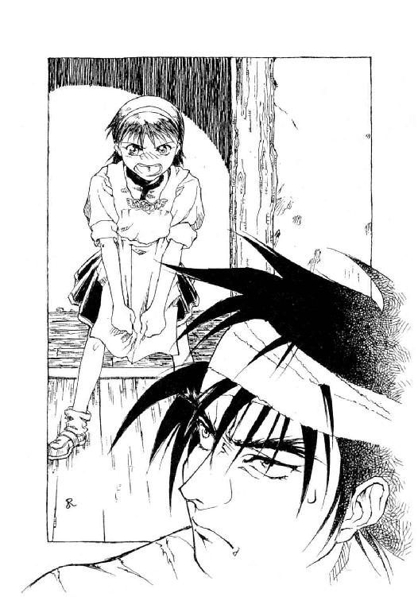

| エルネミアの棺 異相界の凶獣 (富士見ファンタジア文庫) | |
| 対馬 正治 | |
| (2014) | |

エルネミアの棺
異相界の凶獣
対馬正治

富士見ファンタジア文庫
本作品の全部または一部を無断で複製、転載、配信、送信したり、ホームページ上に転載することを禁止します。また、本作品の内容を無断で改変、改ざん等を行うことも禁止します。
本作品購入時にご承諾いただいた規約により、有償・無償にかかわらず本作品を第三者に譲渡することはできません。
本作品を示すサムネイルなどのイメージ画像は、再ダウンロード時に予告なく変更される場合があります。
本作品は縦書きでレイアウトされています。
また、ご覧になるリーディングシステムにより、表示の差が認められることがあります。
カバーイラスト 幡池裕行
カバー・口絵ＣＧ 稲野義信
口絵・本文イラスト 小河原 亮
エルネミアの棺
異相界の凶獣
プロローグ
「いいか、慎重に引き上げろ！ 傷ひとつでもつけた者は、腕を切り落とす！」
監督役の兵士の声が鞭のように飛んだ。
上半身裸の男たちが数十人、赤銅色の肌を汗で光らせ、苦痛に顔を歪めながら太い鎖を引く。
鎖は井戸のように深く穿たれた縦穴の底から滑車を通して引き上げられ、間もなくその先端に繫がれた大きな──おそらく大人が数名、両手を繫いで囲めるかどうかという太さの──六角柱状の物体が姿を現した。
運搬中の損傷を防ぐための頑丈な木枠で囲まれた透明な水晶柱は、真夏の陽光をその内部で屈折させて虹色に輝いた。
最上質のダイヤモンドを彷彿とさせる、美しい光彩──だが、磨かれる前から透き通った輝きを放つ原石などあるはずもない。
鉱山の採掘場を思わせる縦穴の周囲には、百名以上の奴隷と彼らを監視する三十名ばかりの兵士が、脂と埃にまみれて立ち働いていた。
暗い穴の底では、さらに多くの男たちが蠢いているのであろう。
現場から少し離れた場所に立って作業を見守る、二人の男の姿があった。共に、奴隷や兵士たちとは対照的な、純白の法衣をまとっている。
若い方の男──長身でなければ女性と見まがうほどに美貌の青年が、隣に立つ白髪交じりの壮年の男に話しかけた。
「久々に大物が採れましたね」
「うむ、欠損もほとんどないようだし......王都に持ち帰って解読するのが、今から楽しみだよ」
「それにしても......彼らは自分たちが五十万年前の地層から掘り出したものが何か、解ってるのでしょうかね......あの中に我が王国の図書館がまるごと収まるほどの情報が詰め込まれた、古代の碑だと言う事を──」
「言うだけ無駄だよ。何しろあの奴隷どもときたら、その図書館の蔵書一冊を読み解く知恵すらないのだからな」
「いや......案外、その方が幸せというものかも知れませんよ。王都に戻って、本格的にあの碑文の解読にかかったら──私も貴方も、当分は徹夜続きで家に帰る暇もないでしょうからね」
「わはは。いや、全くだ」
虹色の水晶柱は縦穴の縁辺りで静かに引き倒され、地面に並べられた丸太の上を滑り始めた。
その先には、鈍竜──牛の数倍はある体軀にもかかわらず、温和そうな爬虫類型の生き物が牽引する輸送車が待ち受けている。
最も慎重を要する作業が一段落ついたのを見届け、法衣の男たちは自分たち専用の馬車に向かった。
馬車の踏み段に足をかけたとき、若い男がふと気になったようにつぶやいた。
「中身は、何でしょうね......やはり、科学技術に関する記録でしょうか」
「さあな──何にせよ、我がエルネミア王国を、さらなる繁栄に導いてくれる情報であることを期待しようじゃないか、カイン君」
年配の男が腰を下ろしながら言う。
奴隷たちを苛む採掘場の熱気も、空調装置の完備された馬車の中までは入ってこない。
快適な車内から、動き出した輸送車を眺めながら、二人の心はすでに王都エルネフの大図書館の研究所に飛んでいた。
『メルトニア諸部族からなる連合軍が王都エルネフに突入したとき、彼らが目にしたものは半ば廃墟と化した石の都と、怯えた表情で征服者を迎える、わずかばかりのエルネミアの民だった。
かつて魔法王国と恐れられ、カルディア地方一帯を支配したエルネミア文明は、蛮族の侵寇を待つまでもなく終焉の刻を迎えていたのだ。
疫病か、天変地異か──つい二百年ほど前には全盛期を謳歌していたこの文明を衰退に追いやった原因は、今もって定かでない。
その後メルトニア軍はエルネフを破壊し、このとき多くの魔法と学術に関する記録が失われた』
──カルディア公国学士長ヌル・サジタリアス著『大陸史概観』より抜粋
第一章 盗掘屋フェンリス
深い闇の底にまどろむ森の中を疾走する人影があった。
月明りさえない深夜だというのに、木立ちや倒木を巧みに避け、陽の下で走っているのと変わらぬ速さで森の中を駆け抜けていく。
人影は、少年だった。
身長や体付きから察すると、年齢は十六、七というところか。
闇の中ゆえ細かい容貌や服装は詳らかでないが、ただ一つ奇妙なのは彼の両の眼が微かに金色の光を放っていたことである。
もう、どれくらい走り続けたことだろうか。
さすがに夜目の利く少年も疲れたのか、立ち止まって大きく息をついた。
背後をうかがい、何やら安堵した様子で傍らの岩に腰を下ろす。
が、それもつかのま──びくっ、と顔を上げて立ち上がった。同時に、背後の茂みの中に飛び込む。
彼が察知した危険の正体は、ほどなく明らかになった。
少年が走ってきた方向、夜の帳に覆われた森の奥から、低い地鳴りが轟いてくる。
地鳴りは、すぐに樹木の倒れる音を交えた腹に応える地響きとなってこちらに近付いてきた。
「──しつこい野郎だぜ」
茂みの中に身を隠した少年が毒づいた。
やがて闇の中に二つの紅い鬼火が灯ったかと思うや、すぐ目の前の巨木をなぎ払い、それ以上に巨大な生物が姿を現した。
それぞれが大木の幹より太い四本の足を踏ん張った、小山のような体軀。
頭部から首筋にかけてを鉄の盾のような襟飾りで守り、前方に突き出した大小五本の長大な角を振り立てた鳥のような形相。
鬼火のような紅い光は、そいつの両眼だった。
──角竜。
伝説のドラゴンに比べて遥かに武骨で鈍重そうではあったが、そこにいたのは紛れもなく地上で最大最強の生物であった。
（ちくしょう、どうなってんだ──何だって、こんな所に帝国軍の竜が出てきやがるんだ）
少年は腰に帯びた短剣の柄に手をかけた──が、無論そんな物でどうなる相手でもない。
息を潜めた少年の傍らを、巨大な竜が大地を揺るがせながら通り過ぎていった。
「............」
少年はなおも身を隠していたが、やがて地震のような揺れが収まるのを待って茂みの中からはい出した。
「ふぅー、寿命が縮まったぜ」
次の瞬間、白熱光が周囲の森を真昼のように明るく照らし出し、次いで熱風が少年の身体を前方に突き倒した。
「............!?」
尻餅をついたまま、慌てて振り向いた彼が見たものは──山火事のように盛大に燃え上がる十数本の立ち木と、その炎の照り返しを受けて傲然と大地を踏み締める巨獣のシルエットだった。
白目も瞳孔もない紅玉のような眼が、無感情に少年を見据えている。
「貴様か......この辺りの古代遺跡を荒らし回ってる、フェンリスとかいう小僧は」
声を発したのは、竜ではない。
四足の巨獣の背中──一段高くなった腰骨の辺りに騎乗した、甲冑姿の男だった。
『騎乗』といっても、竜の大きさがケタ違いなので、高い塔の上から声をかけられたようなものである。加えて、頭を含めて全身を鎧で覆っている。声から察して、男だということしか判らなかった。
フェンリス──と呼ばれた少年が、ゆっくりと立ち上がった。
身長に比べてやや細身だが、引き締まった体付きである。鎧というほどの物ではないが、胸、それに左の下腕部に革製のシンプルな防具を身に着けていた。
くせのある黒髪が、うなじの辺りまで伸びている。鼻筋が通った顔立ちは男としてはかなり整った方だが、太い眉毛と鋭い目付きのせいか、どこか野獣のような精悍さを漂わせた若者だった。
その表情からは、すでに驚愕も焦燥も消えていた。黒い瞳──先刻まで闇の中で金色に光っていた双眸が、巨竜を駆る騎士を挑戦的に睨み付けた。
「笑わせてくれるぜ！ こそ泥一匹捕まえるのに、重騎竜なんぞ持ち出すかよ？」
「口の減らん小僧だ......」
装飾というもののほとんど無い、ただ頭と顔をすっぽりと覆っただけの兜から、くぐもった声が洩れた。
「俺とて、貴様ごときネズミを相手にしたくはないんだがな──古代遺跡の盗掘は重罪だ。帝国の騎士として見逃すわけにはいかん」
「へっ。遺跡なんてのはなぁ、誰の所有物でもないんだぜ！ 平民から税金を掠めとる領主や皇帝より、よっぽど罪がねえや」
「そういう台詞は、まっとうに税金を納めている者の言うことだ」
当然ながら、竜騎士の声には狩りで兎でも追い込んでいるかのような余裕が漂っていた。
「俺は短気な性分でな。さっさと決めろ──おとなしく投降するか、それともこの場でバランの餌になるか」
バラン、というのがこの竜の名らしい。
フェンリスは舌打ちすると、腰の短剣と背負っていた革袋を足元に投げ捨てた。
「よーし、そのままにしてろよ。妙な動きを見せれば、こいつに炎を使わせる──今度は、骨も残らんだろうな」
竜騎士はそう言うと、鞍の上から細い縄梯子を下ろし、甲冑をまとっているとは思えぬ素早さでするすると竜の背から降りてきた。
先刻に比べて火勢は弱まってきているものの、燃え残りの炎は未だに森の中のこの一角だけを明るく照らし出していた。
竜騎士が地面に降り立った。甲冑を着込んでいる分を割り引いて見ても、相当の巨漢である。
少年との距離はおよそ十歩。丸腰のまま立ち尽くしている。
「三時間も逃げ回った割には、えらく諦めのいいことだな。まあ、お互い手間が──」
二、三歩踏み出した所で、竜騎士の足が止まった。
フェンリスが自分に対して半身に構え、ゆっくりと腰を落とし始めたのに気付いたからである。
「......何の真似だ」
「武器を捨てた人間が──」
鋭い目付きで竜騎士を睨んだまま、大きく息を吐く。
「必ずしも降参してるとは限らねえんだぜ、おっさん」
「何を馬鹿な──」
「おっと！ いま竜に炎を使わせたら、あんたも一緒に焼かれるからな」
一瞬、竜騎士が沈黙した。次に口を開いたとき、その声はどこか呆れたような響きを含んでいた。
「ひょっとして──それで、俺をはめたつもりなのか？」
くだらん！ そう吐き捨てるようにつぶやきながら、男は腰の剣を引き抜いた。
次の瞬間、少年の喉から気合いとも咆哮ともつかぬ声が迸った。
拳も蹴りも、とうてい届かぬはずの間合いから──竜騎士は甲冑の胸当ての辺りに、破城槌を叩き込まれたような衝撃を感じた。
「むぐっ──!?」
男の両足が地面から浮き上がり、そのまま後方に弾き飛ばされる。
背後にいた重騎竜の大木のような前肢に激突し、大の字に倒れ込んだ。
竜は角を振り上げ、怒ったような唸りを上げた──が、それ以上は動かない。
主人である竜騎士の命令がなければ、攻撃行動を起こせないように訓練されているのだ──でなければ、兵器として役に立たない。
フェンリスは大きく深呼吸し──そしてにやりと笑った。口の端から、牙のように尖った犬歯が覗いた。
「安心しな。おまえのご主人を殺しちゃいねーからよ」
竜に向かってそう言うと、地面に投げた剣と荷物を拾おうと腰をかがめた。
「なるほど──ただのネズミでは、ないようだな」
笑いを嚙み殺すような声。
竜騎士がむっくりと起き上がった。右手には、騎兵用の片手剣がしっかりと握られていた。
フェンリスは、顔をしかめた。
「まいったな......竜騎士ってのは、人間離れした連中が多いとは聞いてたけど」
「あの程度の打撃で気絶するようでは、竜騎士など勤まらんよ」
言いながら、男は空いたほうの手で素早く兜を脱ぎ捨てた。
年齢は二十代後半、少年におっさん呼ばわりされるには少々若い。
短く刈り込んだ金髪、張り出した眉宇が少々いかついが、大男に似合わず理知的な顔立ちである。
「しかし──今のは何だ？ おまえ、戦術魔法士か？」
「そんなんじゃねーよ」足元の短剣を拾い上げ、フェンリスは男と向かい合った。
左足を前にして腰を落とし、短剣を持った右手は低く、肘から手首までを防具で守った左腕でガードの構えを取る。
「遺跡の中ってのは、魔物が多くてね。身を守ってるうちに、勝手に身体が覚えたんだ」
「妖獣相手に磨いた技か──面白い！」
男は凄味のある笑いを浮かべながら、急速に間合いを詰めてきた。
フェンリスは内心で舌打ちした。
最初に放った念槍は、もう使えない。
念を集中するのに数秒を要するため、その間に斬られてしまう。威力はあっても、接近しての白兵戦では奇襲以外にあまり使い道のない技なのだ。
おまけにこの場を逃げ出せば、確実に竜の炎に焼かれる。
（くそっ。竜から引きずり降ろしちまえば、何とかなると思ったけど──）
短い気合いと共に、竜騎士が斬りかかってきた。
フェンリスはあえて後ろには逃げず、寸前の所でその切っ先を躱した。
短剣と長剣──リーチの差は歴然としている。踏み止どまって敵の懐に飛び込む以外に勝機はない。
身体を沈め、鎧の継ぎ目を狙って突きを入れた。
男は身体を捻ってこれを躱す。
一瞬、がら空きになった男の下半身──右膝の関節辺りに、フェンリスは横蹴りを叩き込んだ。
男の顔に驚きの表情が浮かんだ。体勢を崩しそうになるところを、辛うじて後に飛び退いて立て直す。
「ほう、やるな──盗人風情にしては」
「よけーなお世話だっ」
「それとも──」
男の灰色の目が、ぎらりと光った。
「貴様も、ガルドゥーガを呼び戻そうとしている、馬鹿どもの一味か？」
「？ 何だ、そりゃ」
答えの代わりに、再び激しい斬撃が来た。
だが、蹴りのダメージが利いているのか、今度はやや踏み込みが甘い。
（もらった──！）
フェンリスは相手の剣の下を搔い潜るように懐に飛び込んだ。喉を狙って短剣の刃を走らせる。
だが、必殺を狙った一撃は空しく宙を斬り──次の瞬間、短剣を握った右腕に激痛が走った。
わけが解らぬまま地面に叩き付けられ、背中にとてつもない重量がのしかかってくる。
気が付いたときには地面に俯せに倒され、竜騎士に右腕を捩じり上げられていた。
「どうした!? 騎士が剣を捨てたのが、そんなに不思議かっ」
男の言葉で、フェンリスもようやく事態を把握した。
踏み込みを甘くしたのは、誘いだったのだ。
竜騎士は迷わず剣を放り捨て、不用意に斬りかかっていった少年の右腕を極めた。
おそらく、最初から生け捕りを狙っていたのだろう。
「ち、ちくしょうっ......」
「いい腕だが、まだまだ甘いな──知恵のない妖獣どもばかり相手にしてるから、こんな初歩的なフェイントに引っ掛かる」
そう言いながら、男はフェンリスの腕を捩じる力を強めた。あとわずかに力を込めれば、もちろん折れる。
「うぐっ......」
顔の右半分を地面に押し付けられたフェンリスの口から、苦しげな呻きが洩れた。
少年の背中に馬乗りになった竜騎士は、そのときになって初めて、彼の口の端から覗く牙に気付いた。
「ほう......貴様、妖族か」
「──なら、どうしたってんだ」
「どうもせんよ──妖族だろうが何だろうが、帝国の法を犯せば罪人だ」
竜騎士は片手で少年の右腕を極めながら、空いたほうの手で近くに落ちた革袋を引き寄せた。
袋の底の端を持ち上げ、無造作に中身を地面にばらまく。
永い年月の間に付着したと思われる埃によって黒く煤けた宝石や装身具。
硝子とも水晶ともつかぬ、透明な結晶のかけら。
（ガラクタにしか見えんが──こいつが闇市場に流れれば、目玉の飛び出るような値段に跳ね上がるってわけか）
竜騎士はそんなことを考えながら古代遺跡から持ち出された品々を眺めていたが、やがてその視線が止まった。
四角く切った羊皮紙を何十枚かまとめ、紐で括った簡易な帳面──これは盗掘品ではなく、取り押さえた少年の所持品であろう。
取り上げて炎の方にかざすと、遺跡の内部の地図に細々とした書き込みが加えてあるのが判った。
「何だ......貴様、生意気に読み書きができるのか」
竜騎士は興味深そうに帳面の内容を改めていたが、間もなくその表情が一変した。
「おい......何だ、これは？ この書き付けは──貴様が書いたものじゃないな!?」
「............」少年は答えない。
（しまった──気絶したか？）
男がわずかに力を緩めた瞬間、フェンリスが獣のような叫びを上げながら跳ね起きた。
甲冑を装備した大男を、後方に跳ね飛ばしたのである。細身の身体からは信じがたい力であった。
竜騎士は辛うじて受け身をとり、一回転して立ち上がった。
ほぼ同時に立ち上がったフェンリスは、痛めた右腕を押さえながら、怒りに燃えた目で男を見据えた。
しかし、向かい合った竜騎士の顔に浮かんでいたのは、敵意とは別種の真剣な表情だった。
「ちょっと待て──これを書いたのは誰だ!? おまえ、まさかドクター・ヌルの──」
その言葉が終わらぬうちに、少年の姿が視界から搔き消えた。
次の瞬間──、男は、首の後ろに激しい衝撃を感じていた。
意識を失っていたのは、わずかの時間だろう。
竜騎士は一声、苦しげに唸ると、うなじを押さえながら起き上がった。
惚けた表情で辺りを見回し、一言つぶやいた。
「......なぜだ？」
何が起こったのかは、判っている。
遺跡荒らしの少年は、彼の延髄に回し蹴りを叩き込んで昏倒させた後、盗掘品をまとめて逃げおおせたのだ。
なぜ、自分にとどめを刺さずに立ち去ったのか──それが、男には不可解だった。
立ち上がって兜を拾おうとしたとき、闇の奥から十数名の人間の近付く足音が聞こえた。
「男爵！ コルマック様！」
部下の兵士たちだった。正確には彼の部下ではなく、メルトニア帝国カルディア総督府から一時的に借りている歩兵部隊である。
重騎竜が倒してきた樹木を頼りに、今になってようやく追い付いたのだろう。
兵士たちは驚いた様子で、燃える木々と竜騎士を見比べた。
「な、何があったんです？ あの遺跡荒らしは......」
コルマックは兜を被り直し、兵士の脇を素通りして乗竜に向かった。
「あの......コルマック様？」
「火を消せ──終わったら駐屯地に帰還する」
それだけ言うと、縄梯子を昇って重騎竜の鞍に戻った。
竜の背から森を見下ろすと、兵士たちが剣を振り回して火の付いた枝を打ち落とす姿が、炎の中で踊る人形のように小さく見えた。
「喜べ、バラン──雲をつかむような任務だったが、とうとう手がかりを見付けたぞ」
コルマックは自分の竜に向かってつぶやいた。
無論、竜がそれに応えるわけもない。だが、興奮のあまり、誰かに話しかけねば収まらぬ様子だった。
「あの小僧、フェンリスか......見てろ、必ずもう一度、捜し出してやるぞ」
カルディアは大陸西部を流れるベーゼル河流域とその周辺をさす地名である。
地形的には森と湖に恵まれ、かつては古代エルネミア王国の栄えた地としても知られている。
魔法を基礎に高度文明を築き上げたエルネミアも、およそ八百年前に南方から侵寇したメルトニア人によって滅ぼされ、現在ではメルトニア帝国の一州としてその版図に組み込まれていた。
その東部はメルトニア皇帝から信任を受けたカルディア州総督によって統治され、また最大の都エルネフを中心とした西部地域は皇帝家の血縁であるマルドロール公爵家の領地として認められていた。
皇帝暦六〇二年、秋──
公爵の都エルネフから北に馬をまる一日走らせた場所に、ツーラという山間の小さな村がある。
その上空、およそ二百ヤードの高度を維持しながら、二人の人間を乗せた翼竜──メルトニア帝国カルディア駐留軍の翔騎竜ナパールは飛び続けていた。
コルマックの重騎竜と同じく、大陸各地に生息する大型爬虫類をベースに品種改良を重ねて生み出された武装生物である。
前肢と一体になった十五ヤードの翼を大きく広げ、鋭い鉤爪の生えた後肢を折り畳むように胴体に引き付けた姿で大空を滑空する巨大生物の姿は、まさに伝説のドラゴンを彷彿とさせる。
だが、その恐ろしげな外観とは裏腹に、彼ら翔騎竜は大部分の生態機能を飛行目的に特化させているため、陸戦用の重騎竜ほどの戦闘能力は持ち合わせていない。
従って、戦場における役割も、直接の戦闘よりは偵察・通信といった支援的な任務が多かった。
「いま通り過ぎたのがツーラの村ですから──もうそろそろですよ」
ナパールの操竜手──駐留軍の竜騎兵マリウスが、振り返ってコルマックに告げた。
翔騎竜の背に設けられた複座の鞍に縛帯で身体を固定した二人の男は、共に飛行装束──上下が一つながりになった革服とブーツ、それに革製の兜──で身を固め、飛行中の寒気と風圧をしのいでいた。
「どうです、速いもんでしょう？ 馬なら何時間もかかる距離が、こいつならひとっ飛びなんですから」
まだ二十歳そこそこの、若い兵士である。
本来の任務である案内役よりも、自分の竜の自慢をしたくて仕方がないらしい。
「こいつ、こないだ成竜したばかりなんですよ。ぼくが十二の時に卵から取り上げて、今じゃ兄弟同様の──」
「あー、話の途中ですまんがっ──エルネミアの神殿跡は、まだなのか？」
後ろに座ったコルマックは、両手を口に添え、風に流されないような大声で尋ねた。
「え？ あ、はい──」
マリウスは慌てて下方を見回し、やがて右手を伸ばして地上の一角を指差した。
「あ！ 見えますか？ あれですよ──古代エルネミアの神官王、メト・カリシナスの建立した神殿跡──もっとも、そう言い伝えられているだけで、本当は何の遺跡だか判ったもんじゃないですけどね」
コルマックは縛帯を少し緩め、身を乗り出して地上を見た。
そう高くない山の緩やかな斜面──針葉樹林の間から、人工的な白い礎石や石柱らしい痕跡がちらほらと垣間見えた。
「何だか......柱しか残ってないように見えるが」
「建物なんか、もうほとんど残っちゃいませんよ！ ただ──上からじゃよく判らないでしょうけど、地下部分はまだ崩れずに残ってるらしいですが」
「調査くらい、やってないのか」
「じょ、冗談じゃないですよ！ この界隈の地下遺跡ときたら、魔物の巣窟で──だれ一人、近付く者なんかいやしません」
「──だれ一人も？」
「いえ......いないことは、ないんですけど」
「遺跡荒らしか」
「ええ。我々は盗掘屋と呼んでいますが......」
「しかし、古代遺跡の盗掘は犯罪だろう？ 総督府や領主のマルドロール公は、取り締まらないのか？」
「そうは言いましても、山賊や野盗と違って被害の訴えが出るわけじゃないですからねえ......公爵殿下の方はどうしてるか知りませんが、総督府じゃ一般の犯罪を取り締まるので手一杯、というのが実情ですから」
「なぜ？ 遺跡の近くに監視の兵を駐屯させておけば、それで済む話だろう」
「いえ、さっき申し上げた通り、遺跡の中は魔物の巣ですから──それに盗掘屋じたい、そんな場所に潜り込もうっていう連中だけに、相手に回すと厄介なんですよ──腕が立つのはもちろん、中にはちょっとした戦術魔法を使いこなす奴までいるって噂です」
「知ってる」
「はあ？ いま、何と」
「いや──こっちのことだ」
コルマックは口許に苦笑いを浮かべ、かぶりを振った。
「それはともかく──どこか適当な所で降ろしてくれないか？ 日のあるうちに、遺跡を視察してみたい」
「ええっ!? そ、それは、ちょっと──」
「なぜだい」
「この下は、カルディア公国──マルドロール公爵家の私領ですから......本当は、こうして上空を飛ぶのも、いい顔されないんですよ」
「しかし──総督府は皇帝からカルディア地方に関する全権を任されてるんだろう？ 立場は、君らの方が上のはずじゃないか」
「建て前上は、そうですけど......なにせあちらは、帝国でも指折りの名門ですからねえ。総督閣下も、なるべくいざこざは起こしたくない、というのが本音でして」
「かまわんから、さっさと降ろしてくれ」
コルマックは、次第に苛立ちを露にしながら言った。
「俺は帝都から来た人間だ。何か問題が起こっても、総督府とは無関係──そうだろ？」
「そ、そんなぁ──困りますよ！ ぼくが、上官に叱られます！」
マリウスは、ほとんど泣き出しそうな声で食い下がった。
「............」
コルマックはため息をついた。
こんなところで年下の兵士を苛めても、らちが明かない。
「解ったよ──調査の件は、俺から直接、公爵に話をつけるから」
「え？ じゃあ、これから公都へ？」
「いきなり行って、会わせてくれるものでもなかろう──とりあえず総督府に出向いて、紹介状でも書いてもらうさ」
「そ、そうしてもらえれば──助かります」
安堵の表情を浮かべ声を弾ませた若い竜騎兵とは対照的に、後部座席の竜騎士は苦々しい顔つきで遠ざかりゆく地上の遺跡をにらみ続けていた。
同日の深夜──コルマックの行きそびれたツーラ山中の遺跡に、先客が足を踏み入れようとしていた。
この地方では珍しい黒い髪と、まなじりのきつい黒い瞳。固く結ばれた口の端から、わずかに覗く尖った犬歯。
あの盗掘屋の少年、フェンリスである。
例によって上半身に簡易な防具をまとい、下は厚手のズボンと革のブーツで固めている。
革製の背囊を背負い、腰には短剣を帯びていた。
「古代エルネミアの聖地、ハジェラード神殿か──ま、実際に何の遺跡だか、知れたもんじゃねえけどな」
皮肉っぽい口調で独りごちる。
目の前には、下生えに半ば覆い隠された石床の一部と根元の部分だけ残した数本の石柱が、月の光に照らされて青白く浮き上がっていた。
そして夜の闇よりなお暗く、石床の中央に四角く口を開けた地底への入り口──。
千年近くの歳月の中で、とうに埋没し去っても不思議でない地下遺跡の入り口が、こうしてむき出しになっているということは──調査か盗掘か、どちらの目的にせよ──かつてこの遺跡を見いだし、中に潜入を試みた人間がいたのだろう。
彼らが首尾よくその目的を遂げたか否か、フェンリスには知る由もない。
「案外、まだ中にいたりしてな──骨になって」
少年は軽口を叩くと、いささかのためらいもなく穴の中に踏み込んだ。
蠟燭一本の明りもない。
その場に他の人間が居合わせたら、暗闇の中で少年の双眸が猫のような光を放つのを見て、薄気味悪く感じたことだろう。
ほとんど縦穴ではないかと思わせる急な階段を、足を滑らせないように用心しながら降りていく。
間もなくフェンリスは両端を闇に吞み込まれた広い廊下に降り立ち、黴臭く湿った空気を肺一杯に吸い込んだ。
古文書の記述を思い出し、神殿の中央と思しき方向を選んで歩き出す。
五分も歩かないうちに、闇の奥から近付いてくる生き物の気配を感じて立ち止まった。
「さっそく、おいでなすったか......」
少年の目が金色の光を放った。
犬より一回りほど大きい、鋭い牙をむき出した獣──狼に似ているが、貪欲そうに裂けた大きな顎に比べてその四肢は異常に短かい。
あまり知性を感じさせない小さな両眼が、侵入者への敵意と獲物への渇望が入り交じった異様な光に輝いていた。
妖獣──姿なき妖魔が、野生動物の胎児にとりついて生まれる異形の怪物。多くは一代限りの奇形だが、それだけにその形態や能力は千差万別である。
今、目の前に現れたこいつは、鼠の母胎を借りて生まれた妖獣だろうか──。
「............」
フェンリスは油断なく短剣を構え、浅く腰を落とした。
素早い動きに備えて踵を浮かせ、防具を付けた左腕で顔の辺りをガードする。
きぃいいっ。
硝子の破片を擦り合わせるような不快な鳴き声を上げながら、妖鼠は攻撃行動に入った。
威嚇や警告などない。人間がこの地下遺跡に──彼らのテリトリーに踏み込んだ時点で、すでに戦闘は始まっているのだ。
妖鼠は信じがたいスピードで壁から天井へと駆け上がり、螺旋を描くようにして反対側の壁を蹴って襲いかかってきた。
フェンリスは素早く身を引き、バックブロー気味に左の拳を叩き込む。
妖鼠は悲鳴を上げて床に吹っ飛ぶが、すかさず壁に駆け上がり、今度は天井から逆落としに襲撃をかけてきた。
だが、フェンリスは相手の動きを冷静に読んでいた。
素早く身を引いて真上からの一撃を躱し、着地の瞬間を狙って斬り込んだ。
きぃいいいいい──
肉を切り裂く鈍い手応え。
生暖かい血しぶきが顔に飛び散り、いつにも増して不快な叫びを残して妖鼠は絶命した。
「ふう。こいつの悲鳴だけは、何度聞いても好きになれねーな」
フェンリスは獣の首から短剣を引き抜き、辺りの様子を窺った。
妖鼠の断末魔の悲鳴が他の妖獣たちを呼び寄せることを警戒したのだが、その心配は無用だったようだ。
一代限りの奇形である妖獣が群を成して行動することは、まずない。このことは盗掘屋に限らず、人間全体にとって幸いと言ってよいだろう──でなければ、地上はとっくに妖獣だらけになっている。
フェンリスは短剣の刃についた血を拭い、遺跡のさらに奥を目指した。
途中、もう一頭の妖鼠と闘い、また二匹の妖蛭の襲撃を受けた。
妖蛭は大人の腕ほどの長さの細長い胴体を持つ吸血生物で、天井からぼとりと落ちて来て首筋に吸い付くとわずか十数秒で人間の血液を吸い尽くす。
そのとき、蛭の胴体は犠牲者の身体と同じ大きさにまで膨れ上がるという。
ただし妖鼠ほどの敏捷さはないので、少なくとも闇の中でも暗視の利くフェンリスにとっては、さほど恐ろしい相手ではなかった。
地下二階へ降りる階段は、古文書の情報通りの場所に見付かった。
ここがエルネミア時代の神殿跡なら、この下にあるのは地下墓地──それも王族や大神官クラスの重要人物の墓があるはずである。
今までのところ、内部に巣くっている妖獣の数はいつになく少ないが、そのことでフェンリスはかえって警戒を強めていた。
小型の妖獣の数が異常に少ないということは──彼らを捕食する、何者かの存在を疑わなくてはならないからだ。
階段を降りると、がらんとした石造りの広間に出た。
天井を支える円柱が左右に立ち並び、奥の暗闇へと続く柱廊を形作っている。
行ったことはないが、公都エルネフにあるマルドロール公の城の大広間もこんなものだろうか、とフェンリスは思った。
ただしこちらの地下広間には、玉座にあたるようなものは見当たらなかった。
向こう側の壁がどうなっているのか確かめようとして部屋の中央に進み出たフェンリスは、床一面に散乱する白い骨片に気付いて足を止めた。
その大半は野獣や、この遺跡に住まう妖獣の成れの果てらしい。だが、中には明らかに人骨と思しきものも混じっていた。
一体や二体ではない。中には生々しく肉の一部を残した大腿骨、片方だけの眼球で恨めしげに宙を睨む頭蓋骨まであった。
「同業者......かな？」
遺骨にまとわりついた衣服の断片を改めようとしたフェンリスの手が、ぴたりと止まった。
列柱の向こうで、何かが動く気配。
同時に、風──というより微かな空気のゆらぎが、彼の頰を撫でた。
腐肉の放つような臭気と殺気の籠った、生暖かい風──。
ざりん、と骨片を踏み締め、そいつは闇の中から浮かび上がるように姿を現した。
「おまえが──ここの主、ってわけかよ」
フェンリスは口の端を上げてつぶやいた。
あえぐような呼吸音を立てて近付いてくるそれは、全体の印象としては蜘蛛を思わせる八本足の生物だった。ただし体軀の大きさは熊並、しかも各々の足の逞しく発達した筋肉と関節の動きは、どう見ても哺乳類のものである。
ここまで変形して成長した妖獣になると、もはや母体となった生物が何であったか推定するのは難しい。
（やべえなぁ......こいつ、強いぞ）
顎の辺りに伝う汗を左手で拭いながら、フェンリスは思った。
彼の短剣、および体術では少々手に余りそうな相手である。
フェンリスは短剣を構えながらも、階段の方へ後ずさった。
とりあえず戦ってみて、あまり分が悪いようならとっとと逃げ出すつもりだった。
もともと、今夜の目的は遺跡内部の下調べである。別に怪物退治に来たわけではない。
そんな盗掘屋の内心を見透かしたように、妖獣は唐突に仕掛けてきた。
床を滑るような動きで近付いてきたかと思うと、足の一本を振り上げ、横殴りに叩きつけてきた。
毛むくじゃらの足の先には、それぞれが短剣のように鋭い三本の爪が生えていた。
「うわぁっ！」
フェンリスは反射的に跳躍し、妖獣の頭上を飛び越して背後に着地した。
それを待っていたかのように、妖獣が身体を起こした。
驚いたことに八本の足のうち下側の四本で床に踏み締めて直立し、残りの四本を『腕』として大きく振り上げたのだ。
そしてフェンリスの方を向いた『腹』の中央には──猫科の猛獣を連想させる顔があった。
フェンリス同様に暗視が利くらしい両眼が怪しい光を放ち、いやらしげな三つ口が嘲るように牙を剝く。
少年が退路を断たれたことを悟った瞬間、妖獣は地下広間全体が震えるような雄叫びを上げて襲いかかってきた。
四本の足がしなやかに動き、計十二本の鉤爪が大道芸人が演じる剣の舞いさながらに斬りかかってくる。
フェンリスは額に汗を浮かべ、短剣と左腕の防具で懸命に防ぎながら後退した。
不意に背中に堅いものがぶつかって息が詰まりそうになった。
壁際に追い詰められたのだ。
妖獣はずるっ、と舌なめずりした。
少年が壁ぞいに移動すると、からかうように同じ方向に動く。
追い込んだ獲物をじっくりとなぶりものにして楽しむつもりか、すぐには手を出してこなかった。
そのとき、フェンリスは脇の辺りに堅い突起がぶつかる感触を覚えた。
（これは──取っ手？）
獲物の動きが止まるのを待っていたかのように、妖獣が吠えた。
下側の四本足で床を蹴って跳躍する。
その瞬間──。
「はああああっ！」
少年の口から気合いとも咆哮ともつかぬ声が迸り、目に見えぬ力が妖獣の巨体を後方へ弾き飛ばした。
念を集中して左の掌に込めた生命気を、槍の形にイメージして相手に向けて打ち込んだのだ。
念槍と呼ばれる、初歩的な戦術魔法だった。
別に魔法の修業をしていたわけではないが、以前にやはり妖獣に追い詰められた際、ほとんど偶然に身についた技だった。
フェンリス自身は、蹴りや突きと同じ体術の延長だと思って使っていた。
床の上に仰向けに倒れた妖獣は、生臭い息と咆哮を撒き散らしながら、八本の足を振り回して起き上がろうともがいている。
もとより、うろ覚えの戦術魔法で仕留められる相手とは思っていない。
フェンリスは急いで振り返り、背後の扉に手を掛けた。
渾身の力を込めて取っ手を引く。
「開けぇーっ！」
鍵は掛かっていなかった。
ずずずっ、と重い音を立て、金属製の扉が少しずつ開いていく。
巨大な生物が立ち上がる気配が、澱んだ空気の動揺となって背中に伝わってきた。
妖獣の巨体が再び宙を舞うのと、辛うじて開いた扉の隙間に少年の身体が滑り込むのとはほとんど同時だった。
扉の向こうから妖獣が体当たりをくれる度、地下室の壁が震え天井から埃が落ちた。
「あの馬鹿......引いて開けるってことを、知らねえのかよ......」
フェンリスは床に尻餅を突いたまま、呆れたようにつぶやいた──もっとも、そのことを相手に忠告してやりたいとは毛頭思わなかったが。
地下遺跡の主はなおも十数回に及ぶ体当たりをかけた後、しばらくは未練がましく扉の外で猛り狂っていたが、やがてその気配は遠のいていった。
「......あきらめたかな？」
扉に耳を押し当て、外の様子を窺ってみる。
他の区画に立ち去ってくれたのなら幸いだが、いま扉を開けてそれを確かめる気にはなれなかった。
「っと──ここは？」
フェンリスは短剣を鞘に収めて立ち上がった。
改めて周囲を見回すと、意外に広い部屋である。
「後先考えずに飛び込んじまったけど──礼拝所かなんかかな？」
ふと見ると──部屋の中央に台座に据えられた石棺が三つ、扉に足を向ける形で安置されていた。
「......地下墓地か」
フェンリスは肩から下げた雑囊から、火打ち石と蠟燭を取り出した。
いくら夜目が利くといっても、明りがあるのに越したことはない。
やがて蠟燭に火が灯ると、いままで判らなかった玄室の細部が浮かび上がってきた。
千年近く古代の建造物であるにもかかわらず、紙一枚挟む隙間もないほどぴたりと組み合わされた石壁が、エルネミア文明の高度な建築技術を物語っている。
フェンリスの目を引いたのは、扉の反対側の壁一面を使って描かれた壁画であった。
背中から白鳥のような翼を生やし、銀の甲冑に身を固めた若い女が、槍を振るって何やら形のはっきりしない黒い怪物を退治している情景が描かれていた。
神話か伝説の一場面だろうか──。
永い歳月を経てだいぶ色褪せてはいたが、そのぶん横向きの女神の顔が、薄闇の中にひときわ白く浮かび上がっているかのようである。
その凜とした美しさに、袋の鼠同然の自分の立場も忘れて見入っていたフェンリスは、やがて三つの石棺に視線を戻した。
適当な間隔をおいて並んだ棺の周囲に、副葬品らしいものは一切見当たらない。すでに盗掘に遭っているか、でなければ最初から棺しか存在しなかったのであろう。
「う～ん。あんまり、身分の高い奴の墓じゃあねえな」
とはいえ、ちょっとした礼拝堂に使えそうな地下室をたった三人の死者で独占しているのである。王族とまではいかずとも、それなりの位の人物の墓であることもまた間違いない。
とりあえず、扉から向かって左端の棺に近付いた。
鏡面のように良く研磨された棺の側面には、びっしりと古代文字が刻まれていた。
「............」
フェンリスは無意識のうちに雑囊から羊皮紙の束を取り出し、そこに書き付けられた内容と照らし合わせながら読み始めていた。
彼を盗掘屋として育てた人物の手解きで、多少は古代語の知識があるのだ。
「ハジェラード神殿......神聖騎士団......そうか、ここに葬られているのは王族じゃなくて騎士か......」
どうりで玄室の中が質素なわけだ、と納得した。
「まあいいか。後はパラケアスに読んでもらおう」
新たに折り畳んだ大判の羊皮紙を取り出すと、棺の横腹に当てて黒鉛の塊で擦り始めた。写しを取るためである。
複写の作業を続けていると、唐突に内部で何かが外れる音が響き、次いで棺の蓋がゆっくりと跳ね上がった。
蓋は片方の側面が蝶番い状の、発条仕掛けになっていたらしい。
最初何が起こったか解らず仰天したフェンリスだが、羊皮紙を取り去って納得した。
棺の側面の一部が、四角く区切られて奥に沈み込んでいた。黒鉛で偶然に隠し釦を押してしまったらしい。
「ここを押すと、棺の蓋が開く仕掛けか......」
中を覗き込んだフェンリスは、次の瞬間「あれぇ？」と言うなり困惑して前髪を搔き上げた。
棺の中は空だったのだ。
ビロードのような柔らかい織物で内張りされた石棺の内部に、主となる人物の遺体は影すらなかった。
「未完成の墓ぁ？......冗談じゃないぜっ！ こっちは苦労して潜り込んだってのに──」
彼は急いで次の──三つ並んだうちの中央の石棺に取り付いた。
側面をまさぐり、釦を捜す。間もなく、最初の棺と同様にして蓋が開いた。
今度の棺は、空ではなかった。
丈の長い、純白の──といっても、すでに変色しぼろ布のようになった法衣をまとった木乃伊が、胸の上で手を組み合わせた格好で横たわっていた。
若い男だ──固く瞼を閉じている。
生前は上位の騎士だったのだろうか。茶色く干涸びてはいるが、そこはかとない気品を漂わせた死相だった。
フェンリスはわずかに眉をひそめた。
「大昔の死人にしちゃあ......やけに保存状態がいいな」
が、すぐに気を取り直し、蠟燭を棺の縁に立てると棺の中の副葬品を調べ始めた。
「あんたの眠りを邪魔する気はないよ。でも、死んじまったらお宝は必要ないだろ？」
宝石を連ねた首飾り。純金の腕輪。──いずれも闇市場の仲買人に売れば、高値で売れそうな品である。
慣れた手つきでそれらの品々を背囊に詰め込んでいたフェンリスの動きが、ふいに止まった。亡骸の頭のすぐ横に手を伸ばし、鶏卵ほどの大きさのそれを取り上げる。
楕円形の水晶──透き通った宝珠の内部に、蠟燭の火が反射して虹色にきらめいている。
少年の口から、口笛の音が洩れた。上機嫌で宝珠に息を吐きかけ、服の端で軽く拭う。
灯にかざし、あらためて調べようとした瞬間、その笑顔が凍り付いた。
いつの間にか──木乃伊の目が開いていた。
半ば開いた瞼の下から、虚ろな空洞と化した両の眼窩が盗掘屋をねめつけている。
その奥には、冥府へ続くかと思われる無明の闇が広がっていた。
フェンリスは瞬時に飛びすさった。すでにその手に短剣を握り締めている。
蠟燭の炎が揺れ、壁に映った少年の影もそれに合わせて大きく動いた。
（......ノ......ム）
「──なにぃ!?」
頭の中で男の声が響いたような気がして、フェンリスは思わず声を上げた。
（タ......ノム......）
「頼む？ 頼むって──何をだよ!?」
（......カノジョ......シレーネヲ......）
「？ シレーネって──」
誰だよ──と言いかけたとき、玄室内部の空間が奇妙なゆらぎを示し、フェンリスは軽いめまいを感じて呻いた。
未だ蓋を開いていない最後の棺の、蓋と筐体の隙間から眩い光が洩れ──すぐに消えた。
（まさか......）少年は息を飲んだ。
操られるように棺の側に寄り、釦に手をかける。
ゆっくりと蓋が跳ね上がり、水蒸気のような白い気体が吹き出した。
気体が薄れていくにつれ、棺の中に眠る人物の姿が明らかになっていった。
白地に金糸で古代の紋章が刺繡された法衣に身を包んだ女性──おそらく十六、七の少女と思われる。
磁器のような白く滑らかな肌。
小作りで端正な顔立ちは、あたかも飾り箱の中で眠る硝子細工の人形のようにも見えた。
（この女が......シレーネ？）
驚きで声を失ったフェンリスの目の前で、少女はうっすらと瞼を開いた。
「い......生きてるのか!?」
薄桃色の唇がわずかに開き、呼吸に合わせて膨らみを帯びた胸が上下する。
棺の縁に細い指がかかり、ゆっくりと上半身を起こした。
華奢だが、均整の取れた体付き。
くせのない亜麻色の髪が、背中まで伸びている。
フェンリスは短剣を収め、おそるおそる少女に近付いた。
「お......おい？」
反応はない。
半分だけ開かれた碧緑の瞳は、未だ夢の続きを見ているかのように宙をさまよっていた。
もう一度、フェンリスが声をかけようとしたとき──
凄まじい咆哮と破壊音が玄室に轟いた。
驚いて振り向いた少年が見たものは、あの蜘蛛のような手足を持つ妖獣と、無残にひしゃげて床に転がった鉄扉の残骸だった。
「こいつ──!!」
とっさに念槍を放とうとしたが、いかんせん敵の方が速かった。
こめかみの辺りに横殴りの一撃を受け、一瞬気を失い──すぐ石床に叩き付けられる衝撃で目を覚ました。
生暖かい血が目に入り、激痛で息もできない。
（ちくしょう！ 殺られる──）
だが、覚悟したとどめの一撃は、なかなかこなかった。
妖獣の視線は、フェンリスから棺の中の少女に移っていたのだ。
ぐるぐると喉を鳴らし、興味深そうに少女の匂いを嗅いでいる。
当の少女は、自分の身に何が起こっているのか解らない様子で、ただ虚ろな視線を妖獣に向けていた。
フェンリスは歯を食いしばって立ち上がり、足を引きずりながら入り口へと向かった。
破壊された扉の前まで来たところで振り向くと、妖獣はまだ少女に気を取られていた。
鋭い鉤爪を生やした四本の足が、獲物をからめとろうと左右に広げられる。
フェンリスは大きく息を吸い、次の瞬間には喉を破らんばかりの大声で怒鳴っていた。
「何やってんだバケモノっ!! てめえの相手は、こっちだ!!」
妖獣は唸りを上げ、八本の足を使って巧みに身体を反転させた。
もう短剣はない。フェンリスは相手を挑発しながら、後退を続けた。
なぜ、見知らぬ少女のために逃げ出すチャンスを捨てたのか──自分でもよく解らなかった。
あるいは、雄の獣がつがいの雌や自分の子供を守ろうとするのと同じ、本能的な行動だったのかもしれない。
とにかく、こうなったら少しでもこの怪物を少女から引き離すつもりだった。
彼の意図に気付いたのか──妖獣が足を止めた。一撃で獲物を仕留めようと力を矯めているのが、筋肉の動きで判る。
フェンリスもまた、最後の念槍を放つべく呼吸を整えた。
妖獣が大きく牙を剝き、跳躍しようと巨体を沈めた瞬間──玄室の空気が再びゆらいだ。
同時に室内が真昼より明るく光り輝き、フェンリスは思わず腕で目を塞いだ。
目の前に雷が落ちたかのような轟音と震動。
正面から何か重いものがぶつかってきて、少年は背後に仰向けに倒れた。
わけの判らぬままに目を開けると、胸の上に乗っていたのは焼け焦げた肉塊──あの妖獣の頭部だった。
「な──!?」怪物の頭を跳ねのけ、慌てて半身を起こす。
部屋中に焦げ臭い臭気がたちこめ、床にはばらばらになった妖獣の屍が散乱し、白煙を上げている。
そしてその向こう、三つ並んだ石棺のすぐ手前に──白い法衣をまとった、あの少女が立っていた。
両腕をほぼ胸の高さに上げ、掌を前方に向ける形でまっすぐ伸ばしている。
細い眉を怒ったように吊り上げ、碧緑の瞳をきっと見開いたその表情は、どことなくあの壁画の女神を思わせた。
（戦術魔法──!?）
フェンリスは傷の痛みも忘れて立ち上がり、妖獣の屍をまたいで少女に歩み寄った。
「あんた......いったい何者だ？」
ふっ──と少女の表情から険しさが消え、同時に両腕がだらんと垂れ下がった。
身体の中から何かが抜けていくように──あるいは、操り人形の糸が切れたかのように──フェンリスの方に向かって、力なく倒れ込んできた。
「うわわっ!?」
少年は慌てて駆け寄り、すんでのところで少女の身体を受け止めた。
「え？ あの、ちょっと......」
彼の耳元に、少女の──辛うじて聞き取れるくらい──微かな声が届いた。
「......カイン......」
たった今、妖獣を一撃で粉砕した魔法使いが洩らしたとは思えない──そして聞く者の胸を締めつけるような、寂しく切なげに響く声だった。
そして呆気にとられるフェンリスの腕に身体を預けたまま、彼女は再び深い眠りに落ちていった。
第二章 竜騎士コルマック
「起きんかーっ、フェンリスっ！」
罵声と共に、サンダル履きの足が背中をどやしつける。
フェンリスは不愉快そうな唸りを上げ、毛布を抱え込むように身体を丸めた。
「う～......もう少し寝かせてくれよ、パラケアス」
「馬鹿者っ！ いま何時だと思っとる!? さっさと起きて、診療所を手伝わんかいっ」
青筋立てて怒鳴っているのは、黒い胴衣の上に白い前垂れをかけた老人である。
首から聴診器など下げているところを見ると医者らしいが──頰がこけ、三白眼を光らせた陰気な相貌は、どう考えても医師というより悪の魔法使いにしか見えない。
「勘弁してくれよぉ......昨日は、ほとんど朝帰りなんだからさ」
「それをいうなら、わしだって徹夜じゃぞ──おまえが持ち帰った古文書を解読するのにな」
「──うっせーなぁ」
少年は大儀そうに身体を起こし、大きく伸びをした。
上半身は裸だった。筋肉質ではないがよく引き締まった身体のあちこちに、大小の古傷が走っている。もちろん、一番新しいのは白い包帯が巻かれた頭のケガであろう。
そのときになって、自分が寝ていたのが台所の床の上であることに気付いた。
「あれ？......俺、何でこんなトコで寝てんだ？」
「何を寝ぼけておる？ おまえの寝床は『お客』に貸しちまってるじゃろうが」
老人──パラケアスが呆れたように言った。
「あー......そうだったか」
目が覚めていくにつれ、昨晩の記憶が蘇ってきた。
棺の中から現れた少女──シレーネは、あの晩のうちには目を覚まさなかった。遺跡の中に置いていくわけにもいかず、結局ツーラの村にあるねぐら、すなわちパラケアスの診療所に連れ帰ったのだ。
華奢な少女とはいえ、山の奥から人間ひとり運んでくるのは相当な重労働である。今日は昼まで寝ていたい心境のフェンリスであった。
「──そういや、あの女の子は？」
「ああ......よく寝とるよ。今朝がた診たところでは、多少衰弱はしとるが、まず身体に異常はないな」
「そうか、まだ眠ってるのか......」
フェンリスは寝ぼけ眼を擦りながら台所の隅に行き、盥に張った水で顔を洗い始めた。
その様子を黙って見ていたパラケアスだったが、やがてにやりと笑うと少年の背後に忍び寄り、いきなり肘で背中をどついた。
「な、何だよっ!?」
「まだまだガキじゃと思ってたが──いつのまにか、女なんぞ引っ張り込むようになりおってからに。うひひひ」
フェンリスは、すんでのところで盥の中に顔を突っ込みそうになった。
「何ボケてんだジジイっ！ 事情は昨日説明したろ!?」
「ほー、そうだったかの。わしゃてっきり、隣村の娘でもかどわかして来たのかと」
「......あのなあ」
「落ち着け。冗談じゃ」
パラケアスは唐突に真顔に戻り、むきになって言い返そうとする少年を制した。
「おまえが例の棺から写し取ってきた碑文を解読してみたがの──いろいろと面白いことが判った」
「で──どうだったんだ？」
「ま、結論から言えば──おまえが遺跡から連れ帰ったあの娘──間違いなく古代エルネミア人、それも千年以上は昔の時代の人間じゃな」
「やっぱり──」
フェンリスは濡れた顔を上げ、滴を拭くのも忘れて老医師の顔を見詰めた。
「信じられねえな......人間が、千年間も棺の中で生きてたなんて」
「古代エルネミアは、魔法王国と異名を取るほどの高度な魔法文明が発達していたからのう......人間を眠らせたまま、何百年か生きながらえさせるくらいはやってのけたかもしれんな。ほれ、獣の冬眠みたいに」
「でもよ、他の二つの棺の中は......一つは空、もう一つは干涸びた死体だったぜ」
「それなんじゃがなぁ......わしもふに落ちんのは」
パラケアスは顎に手をやってわずかに考え込んでいたが、
「まあ、魔法と言っても所詮は人間のやることじゃ。眠っている間に魔法が解けてしまい、そのまま棺の中で死亡、あるいは消滅した──ということは考えられんかの」
「じゃあ、本当は──シレーネ以外の二人も、生き返るはずだったのか？」
「何しろ千年という永い年月じゃ。むしろ、あの娘一人が助かったことだけでも、わしゃ奇跡だと思うぞ」
「......そうだよな」
（『......カイン......』）
フェンリスの耳に、少女が悲しげにつぶやいた言葉が蘇った。再び目覚めることなく死んでいった二人の同胞──その、どちらか一方の名を呼んだのだろうか。
「問題は──あの三人が、何だってそこまでして未来、つまりこの時代に来ようとしたのかということなんじゃがな......」
ぼんやり考え込むフェンリスにはお構いなしに、パラケアスは言葉を続けた。
「──そんなことまで、判ったのかよ？」
「おおまかな事情は、あの碑文に書いてあったがな......もっとも、詳しいことはおまえが持ち出してきた記憶石を解読してみんと──」
そのとき、外からの大声が老人の言葉を遮った。
「パラケアス先生ぇー！ 鍛冶屋のハンスですがぁーっ！ あの、せがれが腕に火傷しちまいまして──」
「やれやれ、また患者か──待っとれ！ いま行く！」
パラケアスは大声で来客に応えると、フェンリスに向き直った。
「話の続きは後じゃ──おまえもさっさと食事を済ませて、診療所の方に来いよ」
そう言い残し、老人は戸口の外に姿を消した。
顔を拭き終えたフェンリスが、粗塩をつけた指を口に突っ込んで歯を磨いていると、隣の部屋からエプロン姿の少女がぱたぱた走り込んできた。
歳の頃は十二、三。赤みがかった髪を薄桃色のヘアバンドで止め、大きな茶色の瞳がなかなか愛くるしい。
「ねーねー。昨日、兄さんが山からさらってきた女の人だけどさーっ」
「メリフェラーっ!!」
塩水を吐き出してフェンリスが怒鳴った。
「『さらってきた』んじゃねーっ！ パラケアスから、何も聞いてねーのか!?」
「聞いたわよぉ」
メリフェラは、なぜか怒ったように頰をふくらませた。
「なにさ。兄さんの噓つきっ」
「......何が？」
「遺跡に行くとき、あたしのことは『女子供の来る場所じゃねえ』とか何とか言って連れてってくれないくせにさ。ほんとは、あーんな綺麗な女と一緒に盗掘してたのね」
「ちょっと待て──おまえ、何か誤解してる」
フェンリスは眉根を寄せ、義妹を手で制した。
「いいか、よく聞け？ 俺はあのシレーネって子と一緒に遺跡に行ったんじゃなくて──あの子が、最初から遺跡の中にいたんだよ」
「？？？」
メリフェラは頰に人差し指を当て、きょとんとした表情で目をしばたたいた。
「それってどういうこと？ あの人、遺跡の中に住んでたの？」
「いや、そーじゃなくて──」
フェンリスはどう説明しようかと迷って前髪を搔き上げていたが、やがてはっと気付き、
「待てよ──シレーネがどうかしたのか？」
「うん。目を覚ましたわよ」
「！ それを早く言えって」
フェンリスは急いで口をすすぎ、台所の床に脱ぎ捨てた上着を拾い上げた。
公爵の都エルネフから北、馬でおよそ一日行程の場所にある、山間の村ツーラ。
領主マルドロール公の厳しい徴税の下で悶々とした日々を送るツーラの住民にとって数少ない明るい話題は、長らく無医村であったこの地に、初めて診療所が開設されたことであった。

診療所の主パラケアスは半年ほど前、二人の子供を連れてふらりと住み着いた人物である。
彼自身は人付き合いの悪い変わり者として敬遠されていたが、とりあえず腕は確かという評判で、村外れの診療所はわざわざ遠くの村から患者が来るほどの繁盛ぶりだった。
もちろん、それが診療所を装った盗掘屋のアジトだということは、村人たちの知る由もない。
パラケアスの家は日常の寝起きに使っている母屋と診療所の窓口として使用している離れから成っていて、どちらも煉瓦作りのさして大きくない建物である。
棺の中から蘇った例の少女は、その母屋の寝室で寝かされていた。
寝床の上で半身を起こしてぼんやり窓の外を見やっていた少女は、部屋に入ってきたフェンリスの姿を見ると、びくっと身体を震わせた。
怯えたように目を見開いたその表情に、妖獣を一瞬で倒した魔法士の面影はない。
（昨日のこと──覚えてねーのかな）
フェンリスは部屋の隅にあった丸椅子を引き、寝床の傍らに座った。
「あんたのこと、どう扱っていいのか、俺たちにもよく判らないんだけどさ──とりあえず、危害を加える気は全然ないんだぜ。心配するなよ──シレーネ？」
少女は驚いたようにフェンリスの顔を凝視した。
数秒の後、おずおずと口を開いた。
〈あなたは......誰？ なぜ、わたしの名前を知っているの？〉
「ねーっ。この女、何言ってるの？」
後から部屋に入ってきたメリフェラが、首を傾げて尋ねた。
「古代言語──エルネミア語だな。何となく解る」
フェンリスはそう言った後、再びシレーネに視線を戻した。
相手の言葉のおおまかな意味は解るが、彼自身がエルネミア語を話せるわけではない。
「俺は、フェンリス──こいつは妹のメリフェラだ」
いちいち自分とメリフェラを指差しながら、ゆっくりと喋った。
〈ふぇんりす......めりふぇら〉
少女は二人の顔を見比べながらオウムのように繰り返した。
目の前の人間が敵でないと判ったせいか、やや安心した様子である。
「あんた、遺跡の中の棺で眠ってたんだぜ......何も、覚えてないのかい？」
〈イセキ？ ヒツギ？ ......解らない〉
少女──シレーネはうつむき、力なくかぶりを振った。
「ねーっ。このお姉さん、キオクソーシツなんじゃないの？」
「馬鹿いうんじゃねーよ」
フェンリスはメリフェラを睨みつけた。
「千年ぶりに目覚めたばかりなんだぜ。もう少し落ち着けば、全部思い出すって」
シレーネは不思議そうに二人のやりとりを見守っている。
フェンリスはふと思い付き、手を伸ばして彼女の手を取った。
驚く少女の掌に人差し指で『千』を表す数字を書いてやった。数字の表記に限っては、古代エルネミアで発明されたものが現代でも使われていることを思い出したのだ。
とりあえず『今は千年後』ということを伝えようとしたわけである。
同じ動作を数回繰り返すうち、その意図を察したのか──シレーネは信じられないといいたげな表情で自分の掌を見詰め、やがてわなわな震え始めた。
（わ!? まずったかな？）
慌てたフェンリスが何か言おうとした瞬間──突然、シレーネは彼の首筋にかじりつくようにして抱きついてきた。
「おわ!?」
〈──怖い!!〉
呆気にとられた少年の胸に顔を埋め、小刻みに震えながらすすり泣き始めた。
そこにいたのは古代の亡霊でも強大な力を操る魔女でもなく──自らの生命に繫がる全ての縁を断ち切られ、何一つ頼るもののない千年後の未来に放り出された孤独な少女に過ぎなかった。
「......ふう」
フェンリスはため息一つつくと、彼女の肩に手を回して子供をあやすようにゆっくり揺すってやった。
「ほら、泣くなよ......何にも怖がることなんかないぜ。俺がついてる──誰にも、手出しはさせねえからさ」
「かあーっこいいっ」
瞳を丸くして見守っていたメリフェラが、冷やかすような歓声を上げた。
「うっせーっ！ 見せもんじゃねーぞ」
「知ーらない。拾ってきたのは兄さんだもん、ちゃんと面倒みてあげるのよ」
「馬鹿っ、犬や猫じゃあるまいし──」
そのとき、フェンリスの腕の中で掠れるようなエルネミア語が叫んだ。
〈あいつが──ガルドゥーガが還ってくる！〉
「ガルドゥーガ？」
聞き覚えのある単語である。フェンリスは、思わず大声で聞き返していた。
「いま、ガルドゥーガって言ったよな？ いったい、そりゃあ何なんだ？」
「──エルネミア創世神話に登場する、破壊の魔神の名じゃよ。創造を司る女神、ラシスに滅ぼされた」
フェンリスとメリフェラが驚いて振り返ると、背後に立っていたのはパラケアスだった。
鍛冶屋の息子の治療は終わったらしい。
「ただし──この娘の言ってるガルドゥーガは、神話の魔神とは別物らしいがな」
「どういう意味だよ？」
老人はそれには答えず、ただ親指で後の扉を指し示した。
ここでは話しにくいことらしい。
「......メリフェラ、しばらくこの子の側にいてやってくれ」
「え？ でもぉ──」
何か言いかけたメリフェラだったが、パラケアスの深刻そうな表情に気付き、こっくりとうなずいた。
「俺はちょっと外すけど......心配いらない、ゆっくり休んでな」
フェンリスが立ち上がるとシレーネは一瞬不安そうな表情になったが、おずおず手を放すと再び寝台に横になった。
「例の記憶石だがな、今から解読しようと思う。おまえも手伝え」
部屋を出るなり、パラケアスが言った。
「これからぁ？ 診療所はどうすんだよ」
「今日は看板じゃ。予定では今晩とりかかるつもりだったが......鍛冶屋の奴から、ちょっと気になる噂を聞いたもんでな」
「............？」
二人は寝室のさらに隣の部屋──パラケアスの書斎に入った。
間取りとしては母屋の中で最も広い部屋だが、実際には天井近くまで積み上げられた書籍類や所狭しと並べられた得体の知れぬ道具類のため足の踏み場もない有様と化している。
部屋の中央に偉そうに置かれた机の上には、フェンリスが遺跡から持ち出した碑文の写し、および透明の宝珠が並べられていた。
「記憶石の解読ってのは時間がかかるんだろ？ 徹夜はごめんだぜ」
「いつも部分から復元しとるからな──じゃが安心せい。今回おまえが持ち帰ってきたやつは、珍しく傷一つついとらん。これなら、さほど手間もかからんじゃろうて」
パラケアスはがらくたの山を搔き分け、中からとある道具を取り出した。
数本の金属線で繫がれた、二つの木製の箱──一方の箱には半球型のくぼみが、そしてもう一方には小さな金属のハンドルが付いている。
パラケアス自らが古文書から復元したものらしいが、無論フェンリスには中の仕組みなど解らない。
「ほれ。頼むぞ」
老人はハンドル付きの箱を無造作にフェンリスに押し付け、自らはもう一方の箱のくぼみの上に例の宝珠をはめ込んだ。台座の上に据え付けられた透明の宝珠は、どことなく魔法使いの使う水晶球を連想させた。
パラケアスの合図で少年はハンドルを回し始めた。
十分ほども回し続けていると箱の中から蜜蜂の羽ばたくような音が響き始め、同時に宝珠が緑色の光を放った。
「止めるなよ！ そのまま回し続けろっ」
パラケアスは窓の鎧戸を閉めながら怒鳴った。
「こりゃ面白えや──どんな仕掛けになってるんだ？ まるで魔法使いになった気分だぜ」
「これは魔法ではない。ざっと五十万年前、エルネミア以前にこのカルディアを──いや大陸全土を支配していた超古代文明が遺した、科学技術の痕跡じゃよ」
「五十万年？ そんな大昔に、本当に人間なんかいたのかよ」
「ああ、いた。わしらとは種を異にする人間たち──先行人類がな」
パラケアスはそう言ってにやりと笑った。
「正直いって、わしゃ魔法そのものにはたいして興味ないんじゃ。遺跡荒らしなんぞやっとるのも、エルネミア人の遺した情報を手がかりに、先行人類の科学技術を解明するのが目的じゃからな」
「ふうん」
フェンリスはダイナモを回しながら適当な相槌を打った。
エルネミア以前の高度文明についてパラケアスの話を聞くのは初めてではない。
だがそんな大昔に文明が存在したこと自体が信じがたかったし、ましてや彼らの高度文明──永遠に燃え尽きない地上の太陽、音よりも速く飛ぶ飛行機、あるいは星の海を渡る天界の船などを生み出した科学技術の話となると、もはや彼の想像力ではついていけないものがあった。
そうこうするうち、『記憶石』の発する緑色の光はますますその強さを増していった。
と──見る間に光は見えざる手がこねる粘土のように形を整え、記憶石の真上の空間に小さな、しかし均整の取れた人間の上半身が浮かび上がった。
「──出た！」
「ほう、幻像入りの記録か」
二十代くらいの若い男──柔らかそうな銀髪と青い瞳が印象的な美しい若者である。そして純白の法衣は彼が司祭か神官階級の人物であることを窺わせた。
〈......は、恐ろしい怪物だ。ただ人を食らい、際限なく成長する。伝説の魔神と同一視する者もいるが、それは全くの誤りである──〉
男の口が動くのに合わせて箱の中からエルネミア語の声が響いた。
透き通った結晶の中に音と幻像を封じ込めた記憶石──紙や石板に書かれたものとはまるで違うが、これもまた古文書の一種なのだ。
「こいつ、何を言ってるんだ？」
「しっ。聞いてりゃ判る」
〈奴は本能のみに従って破壊と殺戮を続ける、卑しい怪物にすぎない──だが、その怪物のために我がエルネミア王国は絶滅寸前にまで追い詰められてしまった〉
「怪物ぅ!? エルネミアは、怪物に滅ぼされたってのか？」
「怪物かどうか知らんが、ちょうど千年ほど前、繁栄の絶頂を迎えていたエルネミアが、突然人口の激減に見舞われたのは事実じゃ──その二百年後、メルトニア人がやって来たときには、かつての魔法王国は見る影もなかったと伝えられておる」
フェンリスは困惑した表情で幻像の男を見守った。
詳しいことは知らないが、古代エルネミア人は現代の魔法使いなど足元にも及ばない強力な魔法を使いこなしたと聞いている。
数ある魔法のうちでも特に軍事目的に供されるものを『戦術魔法』と総称しているが、現代の一流クラスの戦術魔法士の魔力がせいぜい石の城壁を打ち破る程度であるのに対し、エルネミア神官戦士の中には城塞都市をまるごと消滅させる秘術を使う者がいたという。
見た目は非力な少女にすぎないあのシレーネでさえ、フェンリスの目前で熊ほどもある妖獣を粉砕したのである。
本物の魔神というならいざしらず──エルネミア王国を滅ぼす力を持った怪物など、フェンリスには想像もつかなかった。
〈我ら神聖騎士団は、大神官ハジェラード師の下でガルドゥーガと戦い──大きな犠牲を払って奴を時空の彼方に追いやった。そして数少ない生存者である我々三人は......〉
そこで突然映像が歪み、記憶石を据えた装置が奇妙な雑音を立て始めた。
「ちえっ、いいとこなのに──あれ？ 焦げ臭いな」
「と、止めろ！ 煙を吹いとるぞっ！」
その言葉が終わらないうちに装置がめらめらと音を立てて燃え上がった。
パラケアスは慌てて記憶石を取り除け、フェンリスが脱いだ上着で火を消し止めた。
「く、くそっ！ このガラクタがあっ!!」
「......作ったのはあんただろーが」
「不正確な写本からの復元じゃからなぁ......わしだって、中の仕組みを理解して作ったわけではないし」
「直せねーのかよ？」
「簡単に言うな。これを作るのに何年かけたと思う？」
黒焦げになった木箱を眺め、パラケアスはいまいましそうに舌打ちした。
「ちっ──残念じゃな。ガルドゥーガとやらの姿が記録されてると思ったんじゃが」
フェンリスは窓を開けて煙を追い出した。
室内に差し込む陽の光を受け、記憶石の中で虹色の光が踊る。
「──今の男は？」
「エルネミア神聖騎士のカイン──あの棺の中で眠っていた一人じゃよ」
フェンリスは思わず声を上げそうになった。
言われてみれば、遺跡で見た木乃伊にはどことなく幻像の男の面影があったような気がする。
「それじゃあ、生き残った三人ってのは──」
「うむ。棺に刻まれた碑文によれば、あそこで眠っていたのはカイン本人と弟のラング、それに──シレーネという名の女騎士」
「騎士い!? ......あの女の子が？」
「まあ、騎士といっても魔法戦士だから......年齢や性別は関係ないじゃろ」
「へぇ......」
フェンリスは驚いたように前髪を搔き上げた。
「碑文によれば、あの娘はカインの......ま、許嫁のようなもんじゃったらしいな」
「婚約者......か」
彼女の記憶が回復したとき、二人の同胞が辿った運命について告げなければならないと思うと気が重くなった。
「こらフェンリス。ぼんやりしとらんで、片付けを手伝わんかい」
「ん？ ああ......」
「ところで、これは鍛冶屋から聞いた話じゃがな──近々、公爵の軍隊が神殿の遺跡に入るらしい」
フェンリスは眉をひそめてパラケアスの顔を見た。
「軍隊が？ 何のために」
「何でも、遺跡に巣くう妖獣どもを一掃する、というのがその名目らしいが」
「でも──あの山の妖獣退治に関しちゃ、何年も前からここの村長が嘆願に行って、その度に門前払いを食ってたんだろ？ いまさら、どういう風の吹き回しだよ？」
「さあな。どうも、色々と裏の事情がありそうじゃが......何にしても、兵隊がうろついている間は盗掘はできん。盗掘品や武器は隠しておけ──それと、あの娘」
パラケアスはぐいと顔を近付け、声を落とした。
「万一の用心じゃ──外には出すなよ。村の人間にも見られるな」
カルディアの公都エルネフ。
人口約五万、この地方でも最大の都市は、同時に帝国──総督府の権限も及ばないマルドロール公爵家の領地、カルディア公国の城下町でもある。
北側の高台に領民たちを威圧するように聳える公爵の居城は、八百年前に滅びたエルネミア王国の城の土台の上に再建された、どことなく陰鬱な印象を与える石積みの城であった。
その日、エルネフ城の謁見室は早い時間から人払いがなされ、室内ではただ二人の人物が額を寄せ合って密談を続けていた。
「昨日、湖畔に最後の霊柱を打ち込んで参りました──これで、あの湖全体を魔法陣として使うことができます」
漆黒のローブで全身を覆った男が、対面した玉座の上の人物に告げた。
「ふむ──いよいよだな」
金襴の宮廷服をまとった公爵マルドロールは、硝子の酒杯を口に運びながら、やや興奮したような口調でつぶやいた。
平素ならば気に入りの侍女が寄り添って酌をするところだが、今は仕方なく手酌である。
「殿下──大事の前でございます。お酒は、少々慎まれた方が──」
「何を言う、レギオン。大事の前だから飲むのよ」
四十半ばを過ぎた領主は、丁寧に刈り込まれた鼻の下の髭を撫でながら言った。
「皇帝め──積年の恨み、今こそ晴らしてくれるわ」
素面のときなら、それなりに知性を感じさせるであろう切れ長の目。神経質にやせ細った肩の線──そして酒杯を支えながら小刻みに震える指先は、酒豪というより、ある種の中毒の初期症状を明示していた。
主君の面前であるにもかかわらず、黒いフードで顔の半分を隠した男──これは魔道をもって主に仕える者の特権である──レギオンは、しばらくの沈黙をおいて口を開いた。
「......その、殿下。無礼ながら──」
「何だ。酒のことなら聞かぬぞ」
「いえ、そうではなく──ガルドゥーガの件、今一度お考え直しになっては......」
「──どういう意味だ」
公爵は酒杯を置き、じろりと魔導師を睨んだ。
「余は汝らがあの魔神を──ガルドゥーガを召喚して意のままに操ると保証したからこそ、帝国への反乱を決意したのだぞ。今になって、あれは大言壮語であったと申すか」
「いえ、滅相もない──ただ帝国軍を叩くのが目的ならば、なにもガルドゥーガ本体でなくともその分神たる餓妖の力を借りるだけで充分ではないかと......」
「帝国が強大な竜騎士を擁しているのを忘れたか？ 餓妖では重騎竜に勝てまい」
「餓妖の召喚はともかく、ガルドゥーガ本体になりますと......正直言って、我らカルディア魔法士団の力では御しかねます。敵軍はもとより、友軍への被害も甚大なものになりましょう」
「構わん。例え全ての領民を生け贄にしても、それで帝国軍を全滅させられるのなら、安い買い物よ」
「しかし......殿下が首尾よく新皇帝となられました暁に、呼び出した魔神の始末ができなければお困りでございましょう」
「まあな」
「それでは──ツーラに派遣した調査隊の報告が来るまで、今しばらくお待ち願わねば」
「ふむ。『エルネミアの棺』か......」
公爵は玉座の背もたれに身体を預け、窓の外に視線を向けた。
「だがレギオンよ......汝の言葉を疑うわけではないが、余にはどうしても信じられん──古のエルネミア人が、いまだに棺の中で生き続けているなどということが」
（やれやれ──自分に都合の良い魔神の存在は、信じて疑わぬくせに......）
レギオンは内心で呆れたが、無論面には出さない。
「殿下がお疑いになるのも、もっともでございましょう......しかし古代エルネミア魔法の力は、我らの知恵では計り知れぬものがあります」
「そのエルネミア人なら──御せるか？ 魔神を」
「おそらくは──奴を封じ込めたのも、彼らですから」
「......ふむ」酌をしようと手を伸ばしたレギオンを制し、公爵は自分で酒杯を満たした。
「で、調査の方は」
「先刻、翔騎竜で弟子のアルザートを遣わしました──まもなく、戻ってきますれば」
「では、よき報せを期待して待つとするか」
「御意」
そのとき、扉の向こうで来客を告げる衛兵の声が上がった。
「今は大事な話の最中だ！ 追い返せ」
マルドロールが苛立たしげに言った。
が、衛兵は戸惑ったように、
「それが──帝都から来た騎士と名乗っております──何でも、総督府の紹介だそうで」
公爵とレギオンは顔を見合わせた。
「帝国の騎士だと？ まさか、我らの企みが......」
「ご心配なく、殿下」魔導師が立ち上がった。
「万事は、このレギオンにお任せあれ」
公爵はうなずくと、目通りを許す旨を衛兵に伝えた。
しばらくの後、衛兵に案内されて姿を現した帝都からの来訪者は、身長六フィートを優に超す巨漢の騎士だった。
小脇に抱え込んだ兜も含めて、甲冑の色は全身鮮やかな青。そしてその胸当ての部分には、大きく翼を広げた三つ首のドラゴン──メルトニア帝国の紋章が刻まれていた。
騎士は片膝を床につき、深く頭を垂れると筒状に巻かれた羊皮紙の書状をうやうやしく差し出した。
受け取った公爵が開いてみると、なるほどカルディア総督の直筆による紹介状である。
これでは、面会に応じないわけにはいかない。
「間違いない──貴公の名を承ろうか」
「帝国親衛竜騎士団より特務騎士として参りました、コルマック・ガーラントと申します──突然の訪いをお許し下さい」
「......遠路はるばる、大儀であった」
公爵は口先で旅の労をねぎらいながら、青い竜騎士の頭から爪先までをうさん臭そうに眺めた。
「用向きを言うがよい」
「は......」コルマックは面を上げた。
「つかぬことを伺いますが──確か大公殿下のご領内には、古代エルネミア時代の遺跡が多数ございましたな」
公爵のこめかみがぴくっ、と痙攣した。
血走った視線を傍らに立つレギオンに走らせる。
魔導師は主君の自制を促すかのように、軽くかぶりを振った。
「？ どうかなさいましたか」
「いや、何でもない──遺跡か？ そんなもの、珍しくもない。何しろこの地は、古代エルネミアの中心だったのだからな」
「でしょうな」竜騎士はうなずいた。
「実はこのコルマック、皇帝陛下より帝国領内の古代遺跡保護の任を仰せつかっておりまして──本日も、その件で伺った次第です」
「ほほお......我が領内の遺跡に、何か問題でも？」
「まずは、これを御覧下さい」
コルマックは懐から掌大の小さな石版を取り出し、公爵に手渡した。
石版の表面には写しとったかのような精密なリトグラフによって、十六、七歳の目付きの鋭い少年の姿を刻みつけられていた。
コルマック自身の記憶にしたがって細工師に彫らせたものである。
「......これは？」
公爵は怪訝そうに尋ねた。
「そいつはカルディア地方を中心に古代遺跡を荒らし回っている、盗掘の常習犯です。どうも奇妙な奴で、エルネミア遺跡──それも並の盗賊なら二の足を踏むような危険な地下遺跡にばかり執着しております」
「しかし......これでは、ただの子供にしか見えないが」
「──殿下は、『妖族』と呼ばれる者どもをご存じですかな」
「妖族？」
「闇に潜む妖魔と、人間の間に生まれる子供のことですな」
レギオンが横から口を挟んだ。
「妖魔とは生物に進化できなかった生命、形を持たぬ邪念の塊──この世に肉体を持った子孫を残すため、き奴らは人間の女をかどわかし種を植え付けます。そうして生まれる子供らは、見かけこそ人間ですが数々の怪しい能力を現すといわれております──いわば、人の皮を被った妖獣ですな」
「ほう。お詳しいですな」
「魔導師として、この程度の知識は当然」
「すると、この少年は......」
「然り──間違いなく、妖魔の血を引く者と思われます」
「なるほど──妖族の盗掘屋とは、また奇態な賊ではあるな」
「しかし、いかに妖族とはいえ所詮はけちなこそ泥──帝国の竜騎士ともあろうお方が、わざわざ追いかけるほどの相手とは思われませんなあ」
黒いフードの下で、レギオンの口が歪んだ。
『真意は別の所にあるのだろう』と言外に臭わせた皮肉だったが、コルマックはいたって真面目くさった口調で答えた。
「もちろん、この小僧は実行犯にすぎません。問題は、こいつを背後で操る主犯格──こいつは大物です。古代エルネミア文明に造詣が深い、おそらくは賢者なみの学識を有する人物と思われます」
「確かに──エルネミア文明の専門家といえば、帝国広しといえどもそう何人もおりますまい」
「専門家といえば......貴国には、古代文明の研究では世界でも指折りと噂される賢者がおりましたなあ。名前は確か......ヌルさんとかおっしゃいましたっけ」
「ヌル博士なら、とうに亡くなった......もう、二十年になるが」
公爵は少し遠くを見るような目付きで言った。
「──しかし故人とはいえ、我が城が誇った碩学を卑しい盗賊などと同列に論じて欲しくはないものだな」
「いえ、そんなつもりでは......」
「だいたいの事情は、飲み込めた」
玉座の肘掛けに凭れかかった公爵は、気のない声で手を振った。
「遺跡荒らしについては、せいぜい用心するとしよう......その人相書き、写しを取ってもよろしいかな？ 警邏の兵士に回しておこう」
「はあ。それは結構ですが......」
コルマックはためらいがちに言った。
「よろしければ......若干の兵をお借りして、私自らが主要なエルネミア遺跡の警備にあたりたいと」
「いや、それには及ばん──古代遺跡に関しては、このレギオンと彼の魔法士団に一任しておる。わざわざ貴公の手を煩わすまでもない」
コルマックは改めて、領主の傍らに影のように侍る男を見た。
フードの陰となってその表情は定かでないが、声から察して五十代というところか。
（魔導師長レギオンか──どうやら、居並ぶ重臣たちを差し置いて公国を牛耳っているという噂は本当らしいな）
官吏に持ってこさせた粘土版に石版を押し付け人相書きの型を取っていると、陽光に満たされた謁見室の内部がふいに陰り、同時に甲高い鳴き声が響き渡った。
コルマックが反射的に顔を上げると、壁際に並んだ明り取りの窓の向こうを、翼を持った巨大な生物の影がよぎって行くのが見えた。
「ほほう......翔騎竜ですな」
「我が城で飼っている、ただ一頭の竜だよ......専ら急使や観測用に使っている」
公爵の口許に自嘲めいた笑いが浮かんだ。
「帝国軍のように、戦闘用の重騎竜を揃える余裕などないものでな」
「いえ、あの竜騎士も立派なものです」
これは世辞ではなかった。自らも竜騎士であるコルマックの目は、一瞬の印象で今の翼竜が相当に訓練された乗り手によって操られていることを見抜いていた。
「そういえば貴公も竜騎士だそうだが──この城へは、やはり自分の竜で？」
「いえ、国からは重騎竜を一頭、連れてきてますが──貴国と帝国の約定に従って、竜は帝国領に待機させております」
「ふふふ......ただ一騎で一万の軍団を踏み躙るといわれる重騎竜か──我が城にも、ぜひ一頭欲しいものだな」
竜騎士は片方の眉を上げ、灰色の瞳で領主の顔を見やった。
「必要ないでしょう？ 万一、殿下のご領地が外敵に侵略されたときは、我が帝国軍が全力を挙げて救援に向かうでしょうから」
「ふふふ......そこはそれ。武力というものは持つことに意味があるのだから」
「まあ、それは貴国の内政ですから口は挟みませんが──しかし必要を超えた過分な力というのは、持つ者にとってあまり良い結果をもたらしませんよ」
それを聞いた公爵は甲高い笑い声を上げて酒杯を掲げた。
「その言葉、ありがたき忠告として受けとっておこう──では、皇帝陛下と竜騎士団を祝福して乾杯といくか」
「昼間から......お酒ですか」
「余にとっては命の水だよ。貴公もどうかね」
「いえ、私は仕事がありますので」
「貴公が帝国の騎士でよかったよ。余の杯を断るなど、家臣ならば打ち首ものだ」
冗談とも本気ともつかぬ口調である。
「......しばらくの間、エルネフの帝国公使館に滞在します。例の盗掘屋について、何か報せがありましたら──」
「ああ。気をつけておこう」
竜騎士は兜を取り上げると、一礼して踵を返した。
「くそっ。こんなことなら、あのとき強引に遺跡に降りてしまえばよかったな」
謁見室を出たコルマックは、いまいましげにつぶやいた。
（公爵領内の遺跡の視察ができない以上──例の盗掘屋の線から手繰っていく他なさそうだが......）
しかし──それも公爵側の応対を見る限り、有効な助力はまず期待できそうにないだろう。
（それにしても、今の連中の態度は何だ？ 別に歓迎しろとは言わんが、もう少し何とか......）
ふと顔を上げると、廊下の前方から奇妙な風体の男が歩いてくるのが見えた。
中背で少し瘦せ型、豊かな銀髪を肩まで長く伸ばしている。
黒水晶を薄く削った遮光器で目の辺りを隠している。年齢は、だいたい二十五、六というところか。
服装は上下がひと繫がりになった革の服にブーツ──すなわち翔騎竜兵が着る飛行装束である。
先刻窓の外を飛んでいた翼竜の騎士だと知ったコルマックは、立ち止まって敬礼した。
同じ竜騎士として、当然の礼儀と思ったからだ。
だが──男は帝国の騎士には一瞥もくれずに、長い銀髪を揺らして無言で通り過ぎていった。
翔騎竜に乗っていたのは確かとしても、その姿は騎士や兵士とは異質な、むしろあのレギオンに近い雰囲気を漂わせていた。
（......あいつも魔法使いか？）
男は謁見室の扉を守る衛兵に軽く手で合図し、室内に消えていった。
「ふん。どいつもこいつも──全く、いけ好かねえ国だぜ！」
わざと衛兵にも聞こえるような大声で毒づくと、コルマックは出口に向かって大股で歩き去った。
コルマックが辞した後の謁見室。
退出した竜騎士と入れ違うように現れた飛行装束の男が公爵の前に跪いていた。
「大公殿下、並びに尊師レギオン様──魔法士アルザート、ただいま戻りました」
「うむ、ご苦労」
公爵も酒杯を傍らに置き、重々しくうなずいた。
「いま廊下で擦れ違った男、帝国の騎士と見受けましたが？」
「皇帝のイヌだ、捨て置け──それより、遺跡の方はどうであったか？」
「は。それが......」
アルザートは一瞬、口ごもった。
彼は魔法士団の翔騎竜バティルスを駆り、ツーラ近くの山中にある遺跡──ハジェラード神殿跡の調査現場を視察してきたのだ。
しかし──彼の報告を聞き終えたとき、公爵の顔にはありありと失望の色が浮かんでいた。
「干涸びた死体と──空の棺だと？ レギオンよ、これはいったいどういうことだ？」
魔導師は呻くようにつぶやいた。
「まさか......不注意に棺の蓋を開けたのではあるまいな」
「なにぃ？」公爵の眉が吊り上がる。
「兵士と文官どもを全員呼び返せっ！ 事と次第によっては、奴らただではすまさん！」
「アルザート......棺のあった場所に変わった様子はなかったか？」
気を取り直したレギオンが弟子に尋ねた。
「はい。棺のすぐ近くに、八つ裂きにされた上に焼かれた妖獣の屍が発見されました......どうやら、つい最近殺された様子です」
「なにっ、妖獣が？......ふうむ」
レギオンは公爵に向き直った。
「殿下、まだ望みはございます。一人ないし二人の魔法士は蘇生して、自力で遺跡を抜け出したのかも......」
それを聞いた公爵は怪訝そうな顔付きになった。
「千年前から蘇ったエルネミア人が、山の中をうろついていると申すのか？」
「『彼ら』だけとは限りませんぞ。あるいは、外部の人間の手を借りたのかも......」
魔導師はそう言いながら、手にした粘土版に目を落とした。
灰色の粘土の表面には、コルマックの持ち込んだ人相書き──フェンリスの肖像がくっきりと刻印されていた。
第三章 神聖騎士シレーネ
フェンリスが診療所のある離れに入ると患者の姿はなく、バラケアス独りが老眼鏡をかけて書物に目を落としていた。
「で──あの娘の方はその後どうじゃ？」
「ああ。食事は普通に食べてるし、最初に比べりゃだいぶ血色はよくなってきてる──ただ、あいかわらずぼーっとしてるけどさ」
遺跡の少女──シレーネがこの診療所に運び込まれてから一週間が過ぎようとしていた。
食事や身の回りの世話はメリフェラの担当だったが、フェンリスもついつい気になってたいした用もないのに部屋に顔を出しては彼女に話しかけていた。
エルネミアが滅亡してからの歴史、あるいはメルトニア帝国圏の一部となったこのカルディアの現状などを──といっても、大半は老賢者パラケアスの受け売りだが──彼に解る範囲のエルネミア語を交えて話してやっていたのだ。
そんなとき少女はときおりうなずきながらフェンリスの話を聞いていたが、果たしてどこまで理解しているのかは彼にも判らなかった。
「ふむ......やはり千年の眠りで、記憶や知識を失っとるか」
パラケアスは書物に視線を戻してため息をついた。
「惜しいのう。あの娘の記憶が完全なものなら、今後のエルネミア研究にどれだけ貢献するか判らんというのに」
「──おい、ジジイ」
フェンリスがむっとした様子で声を荒くした。
「言っとくけどな。あの子は人間だぞ──あんたの研究資料じゃねえっ」
老人は少し驚いたような顔でフェンリスを見た。
「何を怒っとる？ わしはただ、古代エルネミアの話を聞けるものなら聞いてみたいと思っただけじゃ。それに、あの娘本人にとっても記憶は戻った方が良いに決まっとろうが」
「そ、そりゃあそうだけどよ」
「どーも、あの娘のことになるとムキになるのう......惚れたか？」
「ば、馬鹿！ そんなんじゃねーよっ」
フェンリスは赤面して目を逸らした。
「──まあいい、おまえが拾ってきた娘だ。おまえが面倒見る分には、わしゃ何にも言わん」
「ちぇっ。メリフェラみたいなこと言いやがって──」
フェンリスはふてくされたように頭を搔いていたが、ふとここに来た用件を思い出し、
「ところで、例の怪物のことだけど......」
「ガルドゥーガとかいう？ 見当もつかんな。装置が壊れて当分は記憶石の解読もできんし──それこそ、あの娘にでも聞いてみるほかあるまい」
「記憶石の中のカインは──『追い払った』って言ってたよなぁ？ 『殺した』と言わずに」
「そうじゃな」
「シレーネは最初に目覚めたとき、『ガルドゥーガが還ってくる』って言ってたぜ──古代語だから、よく聞き取れなかったけどさ」
「......それで、って」
パラケアスは読んでいた書物をぱたんと閉じ、老眼鏡をしまった。
「エルネミア人が総力を挙げてどこかに封じ込めた怪物が、千年ぶりに復活しようとしている──そう言いたいんじゃろ？ そうだとして、わしらに何ができる？ あの娘と盗掘品の記憶石を差し出して、役人に訴え出るか？ 打ち首覚悟で」
「でも、このままじゃ......」
「ほうっておけ。そんな危険な生物が現れたのなら、すぐ騒ぎになって領主か総督府が乗り出すじゃろ──そして連中の手に負えない代物なら、わしらにだってどうしようもない。解るな？ この理屈が」
「エルネミアはその怪物のために滅ぼされかけたんだろ？ 下手したら、このカルディアだって──」
それを聞いたパラケアスは口の端を歪めて陰気な笑いを浮かべた。
「それがどうした？ 地上に人間が誕生してから幾多の文明が繁栄と滅亡を繰り返してきたんじゃ。この世界が明日滅びるとしても、それはそういう運命とあきらめるほかあるまい」
「............」フェンリスはさすがに口ごもった。
彼にも理由は解らないが、この老賢者が人類全般に対して抱いている無関心な態度は今に始まったことではない。
もっとも、それほどの変わり者でなければわざわざ妖族の子供を引き取って育てようなどとは思わなかったかも知れないが。
老人は上目遣いに少年を睨んだ。
「だいたい『怪物』なんて名の生物はこの世に存在しないんじゃ。人間が、自分の理解できない存在を勝手に怪物呼ばわりしてきただけのこと──それはわしより、おまえの方がよく知っておるだろうが」
「......解ってらあ。そんなこと」
フェンリスは唇を嚙んで目を伏せた。
彼は六年前、ある村で妖魔の子として捕らえられ、村人に殺されかけたところを通りかかったパラケアスに助けられた。
今では表向き普通の人間として生活しているが、この少年と会って話すとき彼の口からわずかに覗く鋭い牙に違和感を覚えない者はいまい。
あの少女──シレーネが完全に正気を取り戻したとき、彼女の目に自分はどう映るのだろうか──ふと、そんなことが気になった。
「解ったか？ ならこんな所で油を売ってないで、薪割りでもしてこい。ただでさえ食いぶちが一人増えてるんじゃ、くだらんことで悩んでる暇などないそ」
「ああ......」
フェンリスが腰を上げようとしたとき、だしぬけに扉が開いて母屋にいたはずのメリフェラが飛び込んできた。
「たいへん！ シレーネが──いなくなっちゃったぁ!!」
「なにい!?」「何じゃと!?」離れの中にいた二人は同時に声を上げていた。
「あのね、お掃除しようと思ってあの部屋にいったら、寝床がもぬけの空で──」
フェンリスとパラケアスは顔を見合わせた。
「でも、いったいどこに？ あの子、行くあてなんかねえはずなのに──」
「フェンリス、おまえまさか──あの娘に棺のありか──神殿跡の場所を教えたんじゃあるまいな？」
「遺跡のことなら、話したけどさ──でも、理解してたかどうか......」
「ばっかもーん!!」
拳を机に打ちつけて老人が怒鳴った。
「すぐに連れ戻すんじゃ！ 村人ならまだしも、兵隊にでも捕まったら言い逃れはきかんぞっ！」
「メリフェラ、おまえは念のため村の中を捜せ──俺は山を見てくる」
フェンリスはそう言って離れを駆け出すと、まず母屋に向かった。
短剣と防具を取りに行くために。
「くそっ。女の足のわりに速いな」
小一時間ほど走ってかなり山奥に入ったにもかかわらず、まだシレーネには追い付けなかった。
近道を取ることに決め、切り開かれた山道を逸れて針葉樹の林の中に分け入った。
辛うじてそれと判る獣道を辿っていくと、木立ちの間にちらりと赤い影が動くのが見えた。
フェンリスはびくっとして立ち止まった。
反射的に腰の短剣に手が行く。
（まさか──こんな時間に妖魔かよ？）
真昼とはいえ、山や森の奥は未だ魔物の跳梁する世界である。正体不明の妖魔に襲われて命を落とす村人は少なくない。
もっとも、数からいえば狼や山賊による被害の方がずっと多いが──。
赤い影は、やがて姿を現して少年の行く手を阻んだ。
それは赤いマントをまとった人間だった。
年齢と性別は判らない。なぜなら、目の部分に穴を開けただけの、白い革製の仮面で顔を覆っていたからである。
「............？」
フェンリスが警戒しつつ一歩近付くと、白仮面の下からくぐもった声が洩れた。
「帰れ......ここから先に、立ち入ることはならん......」
若い男の声だった。
フェンリスは足を止め、男を睨み付けた。
「何だよおまえは？ 道化みたいな格好しやがって」
「帰れ──魔導師長レギオン様の御命令だ」
（レギオン......？）
知らない名である。
「俺は急いでるんだ！ イカレた奴の相手なんか、してられるかよ！」
業を煮やした少年がかまわず押し通ろうとしたとき、仮面の男はほとんど聞き取れない声で何かをつぶやいた。
「......土鬼よ、縛れ」
フェンリスがはっとして男の顔を見た瞬間、すでに両足は大地に釘付けになったかのように動かなくなっていた。
「てめえ、魔法──」
「風魔よ、断て！」
男の鋭い叫びと同時に、肩から胸にかけて袈裟掛けに斬りつけられたような痛みが走り、血が迸った。
「ぐあぁっ！」フェンリスは呻き声を上げて倒れた。
地面に俯せになった少年が苦しげに唸ったまま身動きできないのを見て取った男は、懐から短剣を引き抜いた。
「楽に死なせてやろう......」
少年の黒髪を鷲づかみにして乱暴に引き起こし、喉を搔き切ろうと短剣を構えた、その瞬間──
瀕死と見えた少年が野獣のような雄叫びを上げて跳ね起き、男の剣を持った腕に嚙み付いた。
男が悲鳴を上げて短剣を放り出す。
フェンリスはすかさず地面に落ちた短剣を奪い、魔法使いと向かい合った。
「小僧、よくも......」
血の滴り落ちる右手を押さえ、仮面の男は呻くように言った。
嚙み切った肉片を地面に吐き捨て、フェンリスが怒鳴った。
「これでおあいこだな──とっとと行っちまえ！ さもなきゃ、血の匂いを嗅ぎ付けて狼どもが寄って来るぜっ」
「殺してやる......！」
仮面の下から、再び呪文を唱える低い声が流れる。
フェンリスはやむなく短剣を構え直した。
だが──彼が魔法使いに斬りかかる直前、唐突に呪文が途絶えた。
（なにっ？）
仮面の魔法使いはフェンリスのことなど忘れたように狼狽した様子で辺りを見回している。やがて両手で頭を抱え、狂ったように絶叫し始めた。まるで、見えない敵に周りを囲まれたかのように。
いや。冷静に観察すれば、男の頭の周囲が陽炎のように揺らめいて見えるのが判るはずだ。
「妖魔か......！」
フェンリスは啞然として、血の匂いに引き付けられて現れた、姿なき魔性が男を襲う様を傍観していた。
男はもつれた舌で必死に破魔の呪文を唱えようとあがいていたが、その甲斐もなく、やがて地面に倒れて息絶えた。
「食われた......」
ゆらり、と男の屍から陽炎が立ち昇った。
フェンリスははっとして身構えた。
自分が妖族だからといって、妖魔に襲われないという保証はない。
呼吸を整え、頭の中で鋭い槍を思い描き念を凝らす。
鋭い気合いと共に──背後の景色の、微かな歪みのみによってしかその存在を視認できない魔性に向けて念槍を打ち込んだ。
その一撃であっけなく妖魔は四散した。それで死んだというわけではないが、再び邪念が凝集して生き物に仇なす存在に成長するには長い歳月を要するだろう。
フェンリスは大きく息をついた。
「それにしても......こいつ、いったい何者だ？ 何で俺を......」
落ち着きを取り戻した後、魔法使いの死体を調べた。
仮面を取った素顔は、二十代のまだ若い男のものだった。
真紅のマントとは対照的な茶色の貫頭衣。
首には護符のペンダントや色とりどりの宝石のネックレスが幾つか掛けられていた。
ペンダント類を調べていた手が止まった。
一つだけ、魔法の知識の乏しい彼にも理解できる物を見付けたのだ。
純銀の、かなり凝った細工物──マルドロール公爵家の紋章である。
「公爵の魔法士だったのか......やばいことになっちまったな」
フェンリスは舌打ちした。
魔法士といえば、騎士に準ずる公爵の家臣である。自分が殺したわけではないにしろ、死体が見付かれば大騒ぎになるに違いない。
だがフェンリスは、そこでもっと差し迫った問題に気付いた。
妖獣狩りのためかどうかは定かでないが、滅多に人の通らないこんな脇道にまでわざわざ魔法士が張り込んでいたのである。山中の主要な道には仲間の魔法士や兵士が配備されていると考えた方が妥当だろう。
「まずい──シレーネ！」
ツーラの住人である自分でさえ、あやうく殺されかけたのである。異民族の服を着た少女が連中に捕まったら、どんな仕打ちを受けるか。
（早く連れ戻さねえと──）
フェンリスは傷の痛みをこらえて歩き始めた。
幸い出血は止まっている。範囲が広い割に、深い傷ではなさそうだ。
痛みが治まるのにつれて、自然と小走りが駆け足になっていった。
だが、二十分ほど後──ようやくハジェラード神殿跡に辿り着いたフェンリスの見たのは、想像もしなかった光景だった。
「何だよ......こりゃあ」
遺跡の前は、見るも無残な有様になっていた。
地面には所々に大穴が抉られ、周辺の樹木は落雷でも受けたかのように焼け焦げ、あるいは倒れ、あるいは真っ二つに裂けている。
ありとあらゆる天災が狭い土地に集中して降りかかったような場所に、十数名の人間が倒れていた。
彼らが何者かは、すぐに判った。
倒れていた者のうち四名は先刻の魔法士と同様、赤マントに白仮面という出で立ち。そして残りの男たちは公爵家の紋章の入った胴鎧を着込んでいた。
武装した兵士も、正体不明の敵の前になす術がなかったらしい。兵士たちの鎧は無残に焼け焦げ、また魔法士たちは服をずたずたに切り刻まれて血だるまと化していた。
近付いてみると、彼らは重傷を負ってはいるが生きている。
比較的、ケガの軽そうな魔法士を選んで仮面を引き剝がすと、三十歳くらいの男だった。
顔を軽く叩いて声をかけると、呻き声を上げて目を開けた。
「うう......あんた......は？」
「......安心しな、味方だ。レ──レギオン様に言われて様子を見にきたんだ」
とっさのでたらめである。だが傷付いた魔法士には、そこまで判断する余裕はなかったらしい。
「白い......服の女が......恐ろしい......」
必死で何かを伝えようとしているのだが、ほとんど言葉になっていない。
「......ギオン様、お伝え......」
そこまで言うと、力尽きたように再び意識を失った。
フェンリスは困惑して立ち上がった。
「まさか......あの子がやったってのか？」
下生えがすっかり刈り取られ、地面に露出した遺跡の入り口に目をやる。
ためらっている時間はない。
フェンリスは意を決し、地下遺跡へと再び踏み込んだ。
一週間前に潜入したときとは違って妖獣の姿はなく、壁際に等間隔に置かれたランプが地下道の中を煌々と照らし出している。マルドロール公の軍隊によって調査の手が入ったのは明らかだった。
柱廊のある地下広間にも何人かの人間が倒れていた。
武装した兵士、あるいは官服を着た文官らしい男たち。
死んでいるのかと思って近付いてみると、だらしなくいびきをかいている。彼らはケガこそ負っていないが、何かの力で深い眠りに落ちている様子だった。
玄室の前まで来た時、フェンリスは足を止めた。扉の壊された入り口から明りが洩れ、何か聞こえる。
若い女のすすり泣く声だった。
「遅かったか......」
フェンリスは気まずそうにつぶやいた。
淡いランプの明りに満たされた玄室の中に、シレーネはいた。
カインの木乃伊の横たわった石棺の傍らに跪き、筐体の側面に額を押し当てて泣いていた。
細い肩が小刻みに震えている。
ときおり、拳を振り上げて棺を叩きながら、意味の解らない古代の言葉で何かを泣き叫んでいた。
中に入って声をかけるのもためらわれ、フェンリスは入り口に立ったまま、しばし彼女の姿を見守った。
人の気配に気付いたのか、少女は石棺から顔を離しフェンリスを見た。
涙に濡れた瞳が、警戒するように険しくなった。唇が微かに動き、聞き取れない声で何かをつぶやく。
「............？」
フェンリスは突然、めまいを感じて傍らの壁に手を突いた。
同時に、泥沼に引き込まれるような睡魔が襲う。
「......よせっ!!」その場に膝をつき、倒れそうになるのをこらえて叫んだ。
「俺は──あんたの敵じゃねえっ！」
「──フェンリス!?」
少女がはっとしたような表情でもう一度呪文を唱えると、フェンリスの意識も回復した。
「ごめんなさい......てっきり、あの男たちの仲間だと」
「ったく、冗談じゃねーや」
頭を振りながら立ち上がったフェンリスはそこでふと気付いた。
「言葉が──喋れるのか」
シレーネはうなずいた。
「あなたと妹さんの話を聞いているうちに、覚えたの──わたしたちの魔法には、異なる民の言葉を短時間で習得する術もあるから」
「それじゃあ、今までのは全部、芝居だったわけか──ちぇっ。心配して損したぜっ」
「違うわ！」
シレーネは大声で叫んだ。
「最初のうちは、わたしも本当に混乱していたの──三日目くらいから、だんだん記憶が戻ってきて......でも、あなた方をどこまで信じていいのか判らなかったから......」
その言葉が徐々に小さくなり、少女はすまなそうに俯いた。
「でも......ごめんなさい。あんなに親切にしてもらったのに......」
フェンリスは木乃伊の石棺にちらりと目をやり、頭を搔いた。
「......まあ、俺もあんたの仲間のこと黙ってたしな......おあいこ、ってとこか」
「いいのよ......わたしも、立場が逆ならとても言えなかったから」
シレーネは涙を拭うと、棺の蓋を元通りに閉めた。
「で、これからどうする気なんだい？」
少女は微かに眉をひそめ、フェンリスを見た。
「あなたは──何を知ってるの？」
「なんにも。ただ、ガルドゥーガって怪物の名前くらいで」
「そう......」
フェンリスは奥の壁一面に描かれた壁画を指差した。
「ガルドゥーガってのは──あの絵に描かれたようなバケモノなのか？」
「あれは、わたしたちエルネミア人の創世神話よ──創造の女神ラシスは破壊の魔神ガルドゥーガを滅ぼし、全ての生命の種を大地に播いてくれた──」
シレーネは壁画から視線を離しため息をついた。
「でも......現実に現れたガルドゥーガは、ずっと恐ろしい怪物だったわ」
「エルネミアには、強力な魔法戦士が何百人もいたんだろ？ 現にあんただって四人の魔法士と兵隊たちを、たった一人でやっつけたじゃねえか──あいつらだって、今の時代じゃいっぱしの戦術魔法士だぜ」
「あの人たちは、わたしを無理やり連れ去ろうとしたので、しかたなく......」
少女は気まずそうに口ごもった。
「別に責めてるわけじゃねえよ。ここに来る途中、俺も奴らの仲間に襲われてこのザマさ」
「！ ケガしているの？」
シレーネは急いでフェンリスに駆け寄り、彼の上着をはだけて息を飲んだ。
「......ひどい！」
「大したことねえよ。もう血も止まったし」
「じっとしてて！」
そう言うと、彼女は少女の傷の上に両手を当て、口の中で古代の言葉を唱え始めた。
フェンリスは自分の体に何か暖かい力が流れ込んでくるのを感じた。
少女の掌は、風の刃に切り付けられた傷口に沿って少しずつ動いていく。その跡を見てフェンリスは驚いた。単に痛みが引いたというだけでなく、傷そのものが拭い取ったように消えていたからである。
「終わったわ──感染症の心配も、ないはずよ」
フェンリスは自分の胸を撫でてみた。服が破れて血痕が付いてなければ、ケガをしていたことすら判らないだろう。
「驚いたな......治癒魔法なんて、単なる気休めだと思ってたけど」
「エルネミアでは、たいていの病気やケガはこうして魔法で治療していたのよ」
「医者も薬もいらない世界か──さぞかし、夢みたいな時代だったんだろうなぁ」
「......そうかしら？」
シレーネの表情がわずかに曇った。
「もし......わたしたちが魔法なんか使えなければ、あんな恐ろしいことは起きなかったのに......」
「？ どういう意味だよ、そりゃあ？」
「............」
シレーネは少しの間おし黙った後、再び口を開いた。
「ガルドゥーガの正体は、魔王でも魔神でも──まして自然が生んだ生物でもないの......奴はわたしたちエルネミア人が造り出してしまった、偽りの生命なのよ」
「造った──生命を？」
シレーネの言葉の意味が解らず、フェンリスは目をしばたたいた。
「五十万年前の地層から発掘された碑文に書かれた情報を元に、足りない部分を魔法で補って造り出した人工の生命体──最初に硝子管の中で誕生したときは、目に見えないほど小さな胞子だったと聞いているわ」
フェンリスは以前にパラケアスから聞いた話を思い出した。
現代においても一部の賢者や錬金術師たちは遺伝子組替や体外受精などと称して人の手による生命の創造の可能性を追い求めているという。ただし、神のごとく無から生命を造り出すことに成功した者は、未だ一人としていないという話だったが──。
「いったん成長を開始した人工生命は、ものすごい勢いで大きくなっていったわ。ある日、硝子槽を破って逃げ出して──再び姿を現したときには、もう誰も手向かいできないくらい巨大に成長していた......」
「誰も──って、確かエルネミアには、町一つ吹っ飛ばすようなすごい魔法も伝わってたんだろ？」
「よく知ってるのね──その通りよ。大神官、それに神聖騎士団の長だけが習得を許された『神の焰』という秘術がね」
「そいつを、使わなかったのか？」
「使ったわ──でも、無駄だった」
「なぜ？」
「簡単なことよ。そのとき、ガルドゥーガはもう町より遥かに巨大に成長していたから」
「............！」
「当時の大神官でエルネミア最強の魔導師でもあったハジェラード師は、一命と引き換えに時空転移の術を使ったわ。
ガルドゥーガの巨体を、周辺の土地もろとも異なる時空に封じ込める禁断の秘術......そのとき十万人のエルネミア人が巻き添えになったけど、仕方がなかったのよ──でなければ、奴はこの大陸を覆うまでに巨大に成長し、人間はもとより全ての生命を食い尽くしたでしょうから」
「............」
フェンリスは返す言葉を失ってシレーネの顔を見詰めていた。
「なんでわたしと二人の仲間たちがこの睡眠槽に入ったのか、もうお判りでしょう？ 過ちとはいえ、古代の生物兵器を蘇らせてしまった責任は──わたしたちエルネミア人自身が取らなければならないのよ」
「......責任？」
「魔法といえども所詮は人間の術──時が満ちれば時空の歪みは元に戻り、ガルドゥーガもまた還ってくるわ。そしてわたしたちの魔法睡眠は、そのときの空間のゆらぎを感知して自動的に解けるはずだったけど......」
「無事に目覚めたのはシレーネ、あんた一人──ってわけか」
「......ええ」
少女はやや青ざめた顔でうなずいた。
「だからって逃げ出す気はないわ──たとえ独りぽっちでも、わたしは神聖騎士としての使命を果たすつもりよ」
（なんか、最初の印象と違って......えらく気の強そうな女の子だな）
フェンリスは半ば呆れ、半ば感心した気分で視線を奥の壁に移した。
「そういや、その壁画の女神──ラシスだっけ？ 何だかあんたに似てるな」
シレーネはにっこり笑った。
「この場所に戻ってきて、ようやく全部思い出したわ、フェンリス。あなたはここで二度、わたしを助けてくれたのね」
「二度？」
「最初は玄室にいた魔物から。そして目覚めたわたしを、地下から助け出してくれた──」
「妖獣の方は勘定に入らねーなぁ。こっちが逆に助けられたわけだし」
「あのとき、意識は朦朧としていたけど──誰かがわたしを守って戦ってくれていることだけは判ったわ──」
そこで急に言葉がとぎれ、シレーネは閉じた石棺に視線を落とした。
「今まで──カインだと思ってた」
フェンリスが慌てて何か言おうとする前に、少女は立ち上がって棺から離れた。
「わたしの話を信じてくれたなら──メリフェラと一緒に、すぐこの土地から逃げてね。何にもお礼はできないけど......あなたたちには、生き延びてほしいの」
そう言い残して玄室から立ち去ろうとしたシレーネを、フェンリスは慌てて呼び止めた。
「ちょっと待てよ！ あんた、自分がやっつけた魔法使いどもが誰なのか解ってるのか？」
少女は首を横に振った。
「奴らはマルドロール公──この土地の領主の、お抱え魔法士だぜ。厄介なことになると思うけどな」
「でも......あの人たち、なぜわたしを捕らえようとしたの？」
「う～ん。そいつは、俺にも解んねえけどさ......とにかく、一度診療所に戻ろうぜ。パラケアスに相談しよう」
「パラケアスさん──診療所にいた人ね」
シレーネの顔に警戒の表情が表れた。
「あのご老人、どういう方なの？ そもそも、あなたは──何の目的でわたしを棺から運び出したの？」
「あのジジイは滅びたエルネミアの事を研究してるんだ。まあ善人とはいいがたいけど......少なくとも、他人に害を及ぼす類いの悪党じゃねえから、信用していいぜ」
「？」シレーネは首を傾げた。
「あなたたち兄妹は、あの人の......？」
「メリフェラはあいつの孫だけど、俺は違う」
「............」
「気付かなかったかい？ 俺が、他の人間と違うってこと」
「その八重歯のこと？ それくらい──」
「牙だけじゃねえよ......俺は妖魔の子なんだ」
「妖魔の子、って......？」
「俺のおふくろ──ま、ガキの時分に死んじまったけどさ。森に苺摘みに行ったきり行方知れずになって......戻ってきたときには、俺を身籠もってた──妖族っていうんだとさ、そんな風に生まれた子供のことを」
「妖族──」シレーネは口に手を当てて考え込んだ。
「初めて聞いたわ......少なくとも、わたしの生きていた時代でそんなことはなかったもの」
「へぇ......妖魔なんて、大昔からいるもんだと思ってたけどな」
フェンリスはちょっと意外な思いだった。
「それはともかく──おふくろが死んだ後、すぐに村を追い出されて──後はまるっきり野良犬みたいな生活だったぜ」
「パラケアスさんとは？」
「もう六年前になるかな......読み書きとかは、全部あいつが教えてくれたんだ」
「............」
シレーネは少し俯いて考えているようだったが、やがて顔を上げてきっぱりした口調で言った。
「いいわ──パラケアスさんに会いましょう」
「............？」
フェンリスは少し驚いて少女の目を見た。
「わたし、この時代の人のことはまるで判らないけど、少なくともあなたのことは信じてる。フェンリスが言うんだったら──わたしも信用するわ。あの先生のこと」
「俺が言うなら、か......ははっ」
フェンリスは照れたように頭を搔いたが、やがてカインの棺に目をやって声をかけた。
「よかったよ──これであんたとの約束は守れそうだ」
シレーネは細い眉をひそめた。
「それ──どういう意味？」
「あの日ここに入ったとき、その木乃伊に話しかけられたような気がしたんだ。あんたのこと、助けてやってくれって──まあ俺の思い過ごしかもしれないけどさ。でも、俺はこれまでも、古い遺跡の中でずいぶん不思議な目に遭ってるから、解るんだ」
「............」
「俺はあんたたち二人のことはよく判んねーけどさ......きっと、最後まであんたのこと心配して──死んでも死に切れなかったんだと思うぜ」
「カインが......」
シレーネは棺の前に歩み寄った。
〈本当なの？ あなたが、彼を呼んだの？〉
蓋に顔を近付け、耳を澄ますように目を閉じた。
〈そう──最後まで、わたしのこと思っててくれたのね〉
エルネミア語でそうつぶやいた後しばらく押し黙っていたが、やがて顔を上げフェンリスに振り向いた。
「本当に──力を貸してもらえるの？ フェンリス」
「あんたが迷惑じゃなければね──みんなに言われてんだよ。拾った人間の面倒は最後まで見ろって」
「............？」
意味が解らず首を傾げるシレーネに、フェンリスは片方の牙を見せて笑った。
「すぐに荷造りしろ。診療所を引き払う」
フェンリスの口から事の次第を聞いたパラケアスは、少年の話が終わるやいなや有無を言わせぬ口調で命じた。
「あん？」
「鈍い奴じゃな！ いいか、おまえらは領主の家臣に手をかけたんじゃぞ？ まもなくこの村にも役人や兵隊が押しかけてこよう」
「待ってください、パラケアスさん！」
フェンリスと共に診療所に戻ってきたシレーネが前に進み出た。
「フェンリスを叱らないでください──これは、わたしの責任なんです」
「コトはもう誰の責任、などという段階を超えとるわい」
「それに彼らを気絶させたとき、同時に記憶を封印しておきました──意識が回復しても、わたしたちの顔は忘れていると思います」
「シレーネさん......だったかな」
パラケアスは大きくため息をついて少女の肩に手を置いた。
「現代の人間を、あまり見くびらん方がいい──レギオンほどの魔導師ならば、記憶の封印くらいたやすく解いてみせるぞ」
（──レギオン？）
その名を聞いたフェンリスの眉が、ぴくりと動いた。
「おい、パラケアス。あんたレギオンが誰だか知ってるのか？」
「公爵家に仕える魔導師じゃ！ ただの魔法使いではない。言葉巧みにマルドロールにとりいって、城では宰相なみの権力を振るっておるわい」
「......やけに詳しいじゃねーか」
「う......公都に住んどる知り合いに、噂を聞いたんじゃ」
パラケアスはなぜか気まずそうに視線を逸らした。
「ま、ともかく──領主の家来と悶着を起こした以上、ここには長居できん。今夜中にも、荷物をまとめてツーラを出るんじゃ。フェンリス！ おまえひとっ走り行ってきて、荷馬車を都合してこい」
「そういうことなら......しょーがねえか」
フェンリスは頭を搔きながら腰を上げた。
「今度はどこに行くの？」
メリフェラが平然と尋ねる。
「そうじゃなぁ──とりあえず、南のケルスクにでも落ち着くか。あそこなら身を隠すのにうってつけだし、公都に近いから何かと情報も得やすいしの」
「すみません、先生──わたしのせいで、ご迷惑を......」
シレーネがうなだれて詫びた。
「なあに。わしらとて盗掘屋──お上に追い回されるのは慣れとるわい」
「ここは長居した方よねーっ」
すでに部屋の中の家財道具を手際良く片付け始めたメリフェラが、あどけない笑いを浮かべて言った。
第四章 魔導師レギオン
窓のない石造りの部屋の中央に、寝台に縛り付けられた男の姿があった。
最近大ケガでもしたのか、顔を除く全身は包帯だらけである。意識はあるようだが、その目は夢遊病者のごとく虚ろに見開かれていた。
レギオンが男の眼前に粘土版を突き付けると、男の口がぎこちなく開き、とぎれとぎれに喋り始めた。
「白い服の......女と......男......その絵と、同じ......」
「ほう──で、どちらが術を使った？」
「女の、ほう......恐ろしい......三人の仲間が、瞬く間に......」
そこまで言いかけたとき、男の体はびくん、と大きく痙攣し、それきり意識を失った。
「女か......」
黒衣の魔導師の口から、低い声が洩れた。
「精神の殻を破り、魔法で封じられた記憶を引き出すとは......いつもながらお見事でございます、尊師」
背後に控えたアルザートが、神妙な口調で称えた。
銀髪の魔法士はあいかわらず黒水晶の遮光器で目を覆っていたが、今日の服装は紫色の法衣である。
「しかし、この男......もう使い物になりませんな」
口の端から涎を垂らし、廃人同様の哀れな姿となった部下の魔法士を見ながら、冷ややかな口調で言う。遮光器の下に覗く顔の下半分には、何の感情も現れていなかった。
「かまわん──行くぞ、アルザート」
レギオンは顔を覆っていたフードを背中に下ろした。
雪のような白髪とは対照的な、浅黒い肌。猛禽を連想させる、鋭角的な顔の造作。
五十代と思しき老人だが、その鋭い眼光はいささかも歳を感じさせていない。
寝台の魔法士を医師の手に委ねる旨を城兵に命じると、レギオンとアルザートは部屋を出た。
間隔を置いてランプが灯された薄暗い廊下を歩き、エルネフ城内の修行場へと向かう。
道すがら、アルザートが師匠に報告した。
「行方不明だった最後の一人は、さきほど死体で発見されました──もっとも、こちらは死因がはっきりしないのですが」
「全滅か......」
「彼はともかく、遺跡の前で倒された四名は......魔法士団の中でも、選り抜きの術者だったんですがなあ」
「アルザートよ。おまえは炎の魔法を使うとき、何に対して祈る？」
「は？ 炎の精霊、火竜でございますか？」
「たいがいの者は、そうだろう──だが、心せよ。決して炎の精などというものが実在するわけではない。意思の力を『炎』という物理的な力に変換する際に、精神を集中させる手立てとして火竜をイメージするというだけのこと」
「魔法は異なる手段で継続する意識活動なり──尊師の教えの奥義ですな」
レギオンは弟子の言葉にうむ、とうなずいた。
魔法の力を生み出すシステムとその源泉については、同じ魔法使いの間でも意見の分かれるところである。
もちろん森羅万象を司る精霊たちが実在し、彼らを召喚することで各々が表象する霊的・物理的な力を利用していると信じている魔法使いたちも、少なくはない。
だが、カルディア公国の魔導師レギオンにとって魔法とはあくまで人間の意思力の具現化に他ならず、弟子の魔法士たちにもその教えを広めていた。
もっとも、これについてはレギオン個人の思想というより、彼がかつて師事したカルディアの賢者、ヌル博士の影響が大きいといわれているが。
「魔法の源泉が人間の精神──いや生命そのものであるなら、その具現化しうる力の総量は、個々の魔法使いの生命気の強さに比例する......」
「それが──古代エルネミア人と、現代の我々の魔法力の差、というわけですか」
「うむ。彼らにとって、魔法とは修行して会得する技術ではなく、生まれ持った能力の一部だった。我々の場合、エルネミアの血を引いているとはいえ──」
「尊師！ そのようなこと、うかつには」
アルザートが素早く周囲に視線を走らせた。
「ふっ、案ずるな──しかしその血は、永の歳月によって薄れてしまっている......呪文や魔法陣を覚えて修行を積んだところで、限界は見えておる。器の中から、その容量以上の水を汲み出すことはできぬからな」
「我ら魔法士がかつての栄光を取り戻すのに必要なのは、失われた古の血──というわけですな？」
「うむ──いかなる犠牲を払ってもな」
魔導師はその双眸に冥い光を湛えてつぶやいた。
エルネフ城の地下最深階。
城の大広間に匹敵する広さを有する地下室には煌々と明りが灯され、そこで魔法士ならびにその卵たちが各々の実力に応じた修行に励んでいた。
魔導師レギオンを頂点に鉄の結束を誇るカルディア魔法士団──そのレベルの高さは、帝国軍の戦術魔法士団に勝るとも劣らないと噂される。
彼らの中には公都の富豪の御曹司もいれば、辺境の寒村から金で買われてきた子供もいる。
出身地も階層も様々な彼ら、彼女らを結びつける、密かな共通項──それはレギオンによってカルディアの各地から見いだされた古代エルネミア人の末裔であるということだったが、無論この事実は公爵を含めて外部の人間には一切知らされていない。
分厚い鉄の扉が開き、レギオンとアルザートが姿を現すと、魔法士たちは上級者がより前列に並ぶ形で一糸乱れず整列し、彼らの『尊師』レギオンへの敬意を現した。
こうして見ると、その若さにもかかわらず尊師の傍らに立つアルザートは明らかに他の者とは別格──レギオンに次ぐ、いわば師範代とでもいうべき立場なのだろう。
レギオンは軽く手を上げて弟子たちの礼に応えると、厳かな口調で告げた。
「諸君──喜ばしい知らせだ。偉大なるエルネミア、我らが輝ける魔法王国を再興する日は、目前に迫った」
魔法士たちの間から、声にならないどよめきが湧き起こった。
前列の何人かが、感極まったように叫ぶ。
「では、いよいよメルトニア皇帝に戦いを挑むのですね！」
「大公殿下が、我々にお力添えして下さるのですか!?」
レギオンは両手を上げ、軽くかぶりを振った。
「誤解してはならんぞ。マルドロール公爵家と皇帝家の確執など、我が民族八百年の怨みに比べれば赤子のいさかいに等しい。
だが、彼らを相撃たせ、両者が疲れ切った時こそ我らに勝機が巡ってこよう──その暁には、汝らにも大いに働いてもらうぞ」
「光栄です！ 我らの命、もとよりレギオン様にお預けしておりますれば」
「うむ──よくぞ申した」
レギオンは手元の粘土版に目を落とし、口の中で、短く呪文を唱えた。
すると修行場を照らしていた幾十ものランプと蠟燭の明りが一斉に消え、一瞬真の暗闇と化した地下室の天井近くの空間に、少年の立像が浮かび上がった。
粘土版の肖像画を元に再現したフェンリスの姿だが、色も付けられた立体の全身像はあたかも生きている人間が空中浮揚しているかのようである。
「何者でございますか？」魔法士の一人が訝しげに尋ねた。
「この小僧、我らが同胞の一人──それも極めて重要な人物をかどわかし、不当に拘束しておる盗掘団の一人と思われる」
「何ですと？」一同の間から、驚きと怒りの声が上がる。
「エルネミアの子らよ、心して聞け。本日より見習いを除く魔法士たちは修行を中断し、こ奴を捜し出せ──ただし、手出しはならぬ。居場所を突き止めしだい、わしのところまで報告せよ。よいな」
「はっ、心得ました！」
「創造神ラシスの名にかけて！」
レギオンが再度呪文を唱えると立像は消え、地下室の明りは元に戻った。
年少の見習いを除いた魔法士たちは、慌ただしく修行の道具を片付け、外出の支度に入る。
その様子を満足そうに見守るレギオンに、アルザートが思い出したように耳打ちした。
「ところで......あのメルトニア人の騎士はいかが致しましょう？ 邪魔だてされないように──始末しますか？」
「あの男か......ふむ」
魔導師は思案するように顎を撫でた。
「場合によっては、それもやむを得んが──今はまずいな。とりあえず監視はつけておけ」
「お任せください」
銀白の魔法士は無表情のままで一礼した。
「貴官は帝都メルトニウムから来られたのでしたね」
中年のメルトニア公使がコルマックに飲み物をすすめながら話しかけた。
「いかがです、エルネフの印象は？ まあ帝都には遠く及ばないとしても、なかなか立派な街でしょう」
「そうですな──」
公使館の窓からエルネフの町並を眺めながらコルマックは答えた。
「人も多いし、伝統もある。同じカルディアでも、総督府のあるネクルスの街とは格が違うようだ」
「そうでしょうとも」
公使は喜々としてうなずいた。帝国の官吏とはいえ、長く住むと地元びいきになるものらしい。
「ただし──」
「ただし？」
「これは私の思い過ごしかも知れないが──人間が多い割に、街全体の活気に乏しいような気がしますが」
「............」
公使が難しい顔をして黙り込んだので、コルマックは詫びるように片手を上げた。
「いや、失言でした。気に障られたのなら、許されよ」
「......コルマック殿」
公使は意味ありげに声を落とした。
「貴官の任務というのは──やはりマルドロール公の身辺調査で？」
「............？」
公使の言葉を解しかね、コルマックは思わず聞き返していた。
「どういう意味です？ ここの領主に、何か問題でも？」
「これはすでに、総督閣下にもご報告ずみのことなんですが──最近、公の様子が少々おかしいのです」
「酒乱ですか？」
「いえ、そういうことではなく──ここ数年で領内の税を三倍近くに吊り上げ、その金を軍備の増強や怪しげな魔道の儀式に費やしているとか」
「つまり──謀反でも企てていると？」
「い、いえ──そこまで、はっきり決まったわけでもないのですが。領内で頻発する山賊や妖獣の被害を防ぐため、というのが公爵家の言い分でして」
公使は慌てて両手を振った。駐在官吏としては、なるべく帝国と現地領主の間でいざこざは起こして欲しくない、というのが本音なのだろう。
「そういえば、城で謁見したとき、宰相のかわりに妙な魔導師が侍っていましたな」
「レギオンのことですね。......やはり、数年前からですな──一介の魔導師にすぎなかったあの男が、エルネフ城で権勢を振るい出したのも」
公使はため息をついた。
「マルドロール公も、以前はそれなりに聡明な方だったんですがねえ......やはり、ベアトリス様のことがあってからですかなあ」
コルマックは意外そうに公使の顔を見た。
「ベアトリス様は確かにお気の毒だったが──しかし先の皇后陛下と、公爵の謀反にどう関わりがあるのですか」
「あのお后が、公のご息女であったことはご存じでしょう？」
「確かに、喪の明けないうちに第二妃を皇后に立てた陛下にも問題はあるが......しかし、あのお方が亡くなられたのは、あくまで流行り病のためですよ？ 私は帝都にいたからよく知っている」
「カルディアの民は、そう思ってはいないようですよ──ことに、マルドロール公ご自身は」
「ベアトリス様は謀殺されたと？──馬鹿馬鹿しい！」
コルマックは不愉快そうに言うと席を立った。
「──とにかく、特務騎士としての私の使命は公爵とは無関係です。残念ながら詳しいことは言えませんが」
「これから、どちらへ？」
「ちょっと、町の様子を見てきます。私の荷物は、しばらくそちらで預かっておいて頂きたい」
「それは、かまいませんが......あの、くれぐれもお気をつけを」
「何をです」
「その──こういう時期です。あまり、公爵家を刺激なさらぬように」
「解ってますよ。ご安心を」
コルマックは内心うんざりした気分で公使の部屋を出た。
ちょうど太陽が中天にさしかかる時刻であった。
公都エルネフの下町、行商人の露店が軒を連ねる往来の喧騒はたけなわを迎えていた。
人混みを擦り抜けて奥に進むと、露店よりはましな商店や大商人の商館が立ち並ぶ商業地区に差しかかる。
雑貨商シグルトの店は、その一角に門を構えていた。
「この都の北西に、でかい湖があるのは知ってるな？」
カウンター越しにフェンリスと向かい合った猫背の老人が、ぐいと身を乗り出して言った。
店の主、シグルトである。表向き、カルディア各地から仕入れてきた陶器や木工品を商う雑貨屋だが、裏の世界に生きる人間でこの情報屋の老人を知らぬ者はいない。
フェンリスたちがツーラの地下遺跡に関する情報を仕入れたのも、元はといえばこの店を通してのことだった。
「確か......サネガ湖だったっけ」
「おうよ。で、その湖畔にヤゾフって小さな村があるんだがな......二百人はいた村人が、みんな消えちまったらしい」
「一人残らず？ まさか」
「噂だよ。俺が行って確かめたわけじゃねえ......しかしな、あの辺りじゃ旅人が何人も行方知れずになったとか、国境でもないのに駐屯地の兵士が増やされたとか、そういう話もある。まあ、おめえの言ってる怪物と関係あるか知らんが」
シグルトはいったん言葉を切り、面倒そうに首の後ろを搔いた。
「......ま、今ある心当たりといやあ、そんなとこだな」
「ふうん......そんなら、その村の詳しい地図を書いてくれよ」
「あー。ちょっと待ってな」
シグルトはカウンターの下から羊皮紙を取り出し、羽根ペンを走らせ始めた。
「......しかし、こんなネタ仕入れてどうするんだ？ 盗掘屋から足洗って、怪物退治で名を上げようってのか？」
「どうだっていいだろ。ネタの料理はこっちの領分だぜ」
「ちげえねえや」
情報屋は半分がた抜け落ちた歯をむき出して笑い、書き上げたサネガ湖方面の地図をフェンリスに手渡した。
「毎度ありっ......と。また来とくれよ。世の中、度胸と運さえありゃ儲け話なんざいくらでもあるんだからよ」
フェンリスが店を出ると、外で待っていた少女が微笑んで手を上げた。
シレーネである。
ケルスクで購入した木綿の服に着替え長い髪をまとめているので、見た目にはその辺の村娘と変わらない。
ただし透けるような白い肌とその美しさは隠しようがなく、道行く公都の人々──とくに男は必ず彼女の顔に目を留めて通り過ぎていく。
「あれ？ メリフェラは......」
「ちょっと露店を見てくるって、さっき......」
「ったく......おとなしく待ってろって言ったのに」
フェンリスは呆れてため息をついた。
「悪い。俺、あいつを捜してくるから......」
「ええ、わたしはここで待ってるわ」
（本当の兄妹じゃないって言ってたけど──結構、いいお兄さんなのね）
大通りに向かって走っていく少年の背中をくすくす笑いながら見送った後、シレーネはぼんやりと商店街の往来を眺めていた。
ふと、この町がエルネミアの王都だった頃を思い出す。
道行く人々の賑わいは古の世と変わらないが、煉瓦造りの家並の様式とその前を通る人間の風俗は、すっかり様変わりしていた。
〈一千年、過ぎてるものね......〉
小声のエルネミア語で寂しげにつぶやいた彼女の物思いを、だしぬけに下卑た男の声が破った。
「よう、ねえちゃん！ 別嬪だねぇ」
むっとして顔を上げると、軽装の胴鎧をまとった兵士が二人、赤ら顔をニヤつかせてシレーネを見下ろしていた。どちらも三十代半ばくらいの男たち。まだ昼前にもかかわらず、したたか酔っている。
城の警備兵である。夜勤から交替し、その足で町に繰り出したのだろうか。もちろん彼女にそんなことは判らない。ただ、見るからに士気の低い雑兵たちだとは思った。
「何か、ご用ですか？」
「あんた、この町のもんじゃねえな？」
「エルネフは初めてかい。何なら、俺たちが案内してやるぜ」
「結構です。連れがいますから」
だが、兵士たちは彼女の言葉など聞いていなかった。少女の肩に手を掛け、からむように酒臭い息を吐きかけてくる。
「田舎娘にしちゃあ、上玉じゃねえか......そうつれなくすんなって」
「なあ、俺たち大公様の兵士だぜぇ。付き合っといて、損はねえと思うけどなあ」
通り掛かる人々は気の毒そうに顔をしかめるが、兵士たちが睨むと慌てて視線を逸らして歩き去っていく。彼らの言葉通り、領主マルドロール公の兵隊というだけで町の人間は口答えできないのだろう。
（無礼な奴ら......！）
シレーネは怒りを抑えて深呼吸した。
町中で目立つことはしたくないが、フェンリスたちが戻ってきたとき面倒ごとに巻き込むのも気が引ける。やむなく、魔法で男たちを眠らせることに決めた。
「あん。この女、何言ってんだ？ ごにょごにょと......」
だが──呪文を唱え終える直前、兵士の一人が、それこそ魔法のごとく彼女の視界から消えた。
（えっ!?）
驚いて顔を上げると、男たちより頭一つは長身の騎士が、片手で兵士の顎をつかみ軽々と宙に吊り上げていた。
「天下の往来で婦女子を困らせるとは、男の風上にもおけんな」
騎士の甲冑は、目にも鮮やかな青一色。
「うぁがが、が......！」
宙吊りにされた兵士は、口許から涎を流しながら必死に手足をばたつかせた。
もう一人の兵士は腰を抜かさんばかりに狼狽しながらも、騎士の胸当てに刻まれた絞章に目を留めてわめいた。
「貴様っ、帝国の......？ 馬鹿な!! ここは大公殿下のご領地だぞ！ 勝手な真似は──」
騎士の灰色の目が、男を見据えた。
「公爵領だろうが、どこだろうが──このコルマック、悪事は見過ごせん」
言うなり兵士の顎をつかんだまま、荷物でも渡すように無造作に仲間の方に投げ捨てる。
顎の外れる音が、シレーネにも聞こえた。
「さあ、こいつを医者に連れていくか？ それとも、貴様の顎も外してやろうか？」
「ひっ......！」
低い声の恫喝に残った兵士はすくみ上がり、顎を押さえて悲鳴を上げる同僚の肩を支えてあたふたと退散した。
「やれやれ『公爵家を刺激するな』、か......」
コルマックは独り言のようにつぶやいた後、シレーネに向き直った。
「お嬢さん、おケガはありませんか？」
巨体を屈め、貴婦人に対するかのように挨拶する。
（この時代にも、礼儀をわきまえた騎士はいるのね）
顎を外された兵士には気の毒だが、シレーネも悪い気はしなかった。
「危ないところを、ありがとうございました......騎士さまも、このお国の？」
「いえ──私は帝都から来た者ですが」
「帝都、とおっしゃいますと......？」
「はあ？ メルトニウムですが」
「あ！ そうでしたわね」
コルマックは首を傾げた。
（外国人だろうか？ そういえば、肌や目の色が少し違うような気もするが）
そのとき──
「ふらふらすんなよっ！ 迷子になったらどうすんだ！」
「ねえ、あれ欲しい！ 買ってー」
「何言ってんだ。硝子細工なんか、いくらすると思ってんだよ？」
大通りの方から、ぐずる少女の手を引いた兄らしい若者が歩いてくる。
それを見たシレーネの顔が輝き、嬉しそうに手を上げた。
コルマックの視線も自然とそちらに向いた。
「ほう、お連れさんで──」
互いの存在に気付いたのは、ほぼ同時だった。
竜騎士の表情が一変して険しくなり、少年の足は凍り付いた。
「おまえ、フェンリス──！」
「あのときの竜騎士野郎!?」
コルマックはおもむろにシレーネから離れて走り始め、数人の通行人を突き飛ばしながらフェンリス目がけて突進した。巨体に似合わず、恐ろしいスピードである。
逃げ腰になった少年の襟元をがっちり捕らえ高々と吊り上げると、歯をむき出して暴悪な笑いを満面に湛えた。
「わはははは、捜したぞっ。まさか、こんな所で会えるとはなぁ！」
「ちくしょーっ！ 放せ！」
フェンリスは空中に持ち上げられたまま、虚しく手足を振り回した。
傍らにいるメリフェラは事態がよく飲み込めないらしく、ぽかんと口を開けたままその様子を見守っている。
コルマックはちょうど両者の目線が合う高さまでフェンリスの身体を降ろした。
「いいかっ!? 五体満足でねぐらに帰りたかったら、俺が聞くことに正直に答えろよ!! おまえは、ドクター・ヌルの──」
だが、彼の質問は半ばで途絶えた。
「な......に......？」
背後で何者かの透き通った声が呪文を唱えている。
（これは──古代エルネミア語!?）
同時に両腕の力が抜けていく。
地面に落ちたフェンリスは巧みに受け身を取り、即座に立ち上がった。
「メリフェラ！ シレーネ！ 逃げるぞっ」
フェンリスがメリフェラの手を引き、わずかに遅れてシレーネが後を追う。
（ちょっと待てっ！ 俺の話を──）
エルネミア人の少女は一瞬だけ立ち止まり、金縛りになった男に詫びるように目礼すると大通りに向かって走り去っていった。
三人の姿が人込みの中に見えなくなってから、ようやくコルマックの身体の自由が戻ってきた。
「......くそっ」
竜騎士はこめかみを押さえて頭を振り、周囲に集まった野次馬には目もくれずやはり大通りに向かって駆け出す。
少し離れた商館の陰から一部始終を見守っていた人物が、滑り出すように往来に姿を現した。
「あの小僧、確か尊師の言っていた......」
一見、ごく普通の町の若者──だがその襟元の内側には、カルディア魔法士団への帰属を示す銀の首飾りが隠されていた。
「アルザート様の言いつけであの騎士をつけていたが、......まさか俺の網に魚が飛び込んでくるとはな」
男はそうひとりごちると、コルマックの走り去った方向に鋭い視線を向けつつ、再び人込みの中に紛れ込んでいった。
「後をつけた弟弟子の報告によると、彼らは食料や薬品を買い込んだ後で、あの町に戻ったということです。......何か、旅支度を整えているようだとも言っていました」
丘の上からケルスクの町の灯を見下ろしながら、アルザートが言った。
「竜騎士の線から足がつくとは、意外だったな。しかも、公都のすぐ近くにいたとは」
顎を撫でながら言うレギオンは、例によって全身を黒いローブで覆っている。その姿は夜の闇に半ば溶けかかった不吉な影のようだった。
「しかし妙な話ですな。帝国の騎士と盗掘屋が、白昼の公都で密会していたというのも」
「追う者と追われる者が、その実つるんでいた──よくある話よ。まあ、そんなことはどうでもよいわ。我らは、例の娘さえ手に入ればよいのだからな」
アルザートは師の言葉にうなずき、視線を丘の下に移した。
空には厚く雲がたれこめ、月明りすらない夜である。
篝火一つない丘の下は闇の敷物に覆い隠されていたが、暗視の魔法の効果により彼ら師弟は丘の下に停められた数台の荷馬車とその周囲に展開する多数の兵士たちの姿、そしてそこから丘を登ってくる二人の人影をはっきりと観察することができた。
先を行くのは赤マントをまとった魔法士──レギオンの門弟である。やはり暗視の魔法を施しているのであろう、明りもないのに軽やかな足取りで近付いてくる。
やがてレギオンらの前に来るとうやうやしくひざまずいた。
「尊師様──魔法士の配置、手はず通り完了いたしました。ご命令あらば、いつでも儀式を始められます」
「──結界はどれほどの時間、維持できる？」
「持って二十分、というところでございましょう」
「充分だな」レギオンは満足そうにうなずいた。
「ヤゾフでの『実験』のときは村一つ全滅するのに、五分とかからなかったものよ」
「問題は、娘の身の安全ですな。殺してしまっては元も子もありません」
アルザートが口を挟んだ。
「なあに。本体ならばいざしらず、あれに殺されるほどヤワではあるまい──例の娘が、本物のエルネミア魔法士ならばな」
「......ケルスクの住民には、災難となりますな」
「くふふふっ──どのみち帝国との戦端が開かれれば、カルディア中が焦土となるわ。早いか遅いかの違いよ」
黒衣の魔導師は押し殺したような声で笑った。
「より強い炎で焼かれた大地ほど、ゆくゆくは肥沃な土壌となるもの──神聖エルネミア再興のための供犠と思えば、連中もあながち犬死にとはいえまい」
「お言葉の通りにございます」
「アルザートよ──わしの見たところ、弟子たちの中ではおまえが最も色濃く古代エルネミア人の形質を残しておるようだ。例の娘とおまえの間に生まれる子らは、新たな魔法王国を支える逸材になるに違いない」
「──全ては、尊師のご意志のままに」
アルザートはうやうやしく一礼した。
魔法士からだいぶ遅れて、兵士たちを直接指揮する騎士隊長が丘の頂きに辿り着いた。
「レギオン殿、なぜ灯火の使用を禁じられたのだ!? 自国の領内だというのに、これでは満足に部隊行動もとれぬではないか！」
「おぬしらは何もする必要はない。周辺の街道を封鎖し、別命を下すまで何人たりとも通さなければ、それでよいのだ」
「いったい貴公らは、ここで何を始めるつもりなのだ？」
騎士隊長はむっとした表情で尋ねた。
「その質問に答える必要はない。大公殿下がこのわしに、部隊の指揮権を委ねたのを忘れぬように」
（魔導師が、いい気になりおって......！）
男は辛うじてその言葉を喉元で止めた。
いまやマルドロール公の懐刀と評判を取る魔導師レギオンの不興を買ったばかりに、彼の前任者は無実の罪を問われて投獄されているのだ。
「ふんっ......魔法のことなど、聞いたところで仕方がない！ 何の儀式か知らぬが、終わったら報せてくれっ！」
吐き捨てるように言うと、踵を返して丘の下で待つ兵の元に戻っていった。
その姿が闇に溶けて行くのを見届けた後、レギオンとアルザートは顔を見合わせてにやりと笑った。
「では、そろそろ──」
「始めるか」
星一つ見えない闇夜の丘の上で、二人の魔法使いは両手を天に差し延べて呪文の詠唱を始めた。
彼らだけではない。儀式に参加する魔法士は合わせて十名──各々二名ずつ、ケルスクの町を取り巻く五か所の地点に描かれた魔法陣の中に立ち、互いが正確に三十六度の角度を取って町に向けて念を送り続ける。
施術者の声は途中で夜風にかき消されようとも、その生命気の波動は遥か遠く、町向こうに立つ同志の元へと届く。
彼方に見えるケルスクの灯は、すでにその大半が消えていた。
寝静まった住民が気付かぬうちに──間もなく町を中心にした見えない五芒星──巨大な魔法陣が完成していった。
ケルスクはツーラに比べて規模も人口も大きく、小さな町と呼んでさしつかえない集落である。
エルネフの都から馬で三時間の近さとあって人の往来も多く、理由ありのよそ者が数日間身を潜めるには何かと都合の良い場所であった。
公爵の追及を逃れるためツーラを脱け出したフェンリスたち一行は、現在はそのケルスクのとある旅籠に宿を取っていた。
「市場で聞いた話じゃ、サネガ湖で獲れた魚を売りに来てたヤゾフの村人が、ここんとこ姿を見せてないそうだぜ」
「ふうむ......シグルトの情報も、あながちガセネタとは言い切れんわけか」
卓上に広げた地図に目を落とし、パラケアスがつぶやいた。
老人はいつもの黒い胴衣の上に黒のケープを羽織っている。陰気な相貌とあいまって、その姿はますますもって悪の魔法使いに近付いていた。
「しかし、この歳になって怪物退治に駆り出されるとはのう──やれやれ」
「かまわねえよ。あんたはメリフェラとケルスクに残ってな──どうせ怪物には興味ねーんだろ？」
「そうはいかん」
老人は不敵な笑いを浮かべた。
「ガルドゥーガが人造生物だと判れば、話は別じゃ。エルネミア──いや先行人類の技術を解明する、またとない機会じゃからな」
「どうでもいーけど、あんまし無理すんなよな。年寄りの冷や水......？」
フェンリスは言葉を切り、立ち上がって窓際に近付くと鎧板を少し開けて外の様子を窺った。
「どうした？」
「いや──表で、悲鳴が聞こえたような気がしてさ」
「こんな夜更けじゃ。野良犬じゃろ」
「いや、確かに人の──」
そのとき、部屋の扉が小さくノックされた。
開けると、隣に部屋を取っている少女二人が不安そうな面持ちで立っていた。
メリフェラはいつものエプロン姿だが、シレーネの方はエルネミアの法服に着替え、腰にはエルネフで購入したばかりの細身の剣まで帯びていた。
「どうした？ こんな時分に」
「あのね、シレーネが......」
メリフェラが戸惑い気味に、シレーネの方を振り返った。
「宿の周囲に、邪悪な波動が満ちてます──感じるんです」
魔法士の少女はやや怯えの混じった、だがしっかりした声で言った。
「ここは危険です。すぐ避難してください！」
フェンリスとパラケアスは顔を見合わせた。
「まあ、荷物はまとめてあるから、逃げるのはた易いが......」
「シレーネ、いったい何が来たんだ？ レギオンの手下かよ」
「判らない──兵士でも、魔法士でもない。この気配は......」
彼女は耳を澄ますかのように目を閉じたが、すぐにぞくっと身震いした。
「魔物でもないわ──この異質な『気』は──」
再び目を開いたとき、シレーネの瞳には形容しがたい恐怖の色が浮かんでいた。
「まさか......そんな」
彼女が受けた衝撃は、瞬時にフェンリスらにも伝わった。
「来たのか──奴が!?」
その瞬間、地震のような揺れと共に宿屋全体が音を立てて軋んだ。
床が大きく傾き、メリフェラが悲鳴を上げてフェンリスにしがみつく。
卓上のランプが床に落ち、部屋の中は暗闇に包まれた。
湿った夜の闇の中を、コルマックは馬を駆って走り続けていた。
あの後、彼は逃げたフェンリスたちの姿を求めてエルネフ中を捜し回っていた。再び彼らを見いだすことはなかったが、夕刻になって都の門番から、それらしい三人連れが門を出て北に向かったとの証言を得た。
公都の近辺で、しかもよそ者が怪しまれずに潜伏できる場所といえば、おのずと限られてくる。コルマックは直観的にケルスクに目星をつけた。
本当ならすぐにでも彼らを追っていきたかったのだが、馬を借りようと帝国公使館に戻ったのがまずかった。
路上で少女にからんでいた公爵の私兵を叩きのめした件が早くも公使の耳に届き、えんえん二時間に亘って苦情を聞かされていたのだ。
おかげで、公都の門を出たときはすでに宵の口という体たらくであった。
「あの公使の奴、いったいどちらの味方だ!?」
コルマックは毒づきながら馬を急がせた。
（ケルスクで盗掘屋を捕まえたとして──問題はその後だな。あの小僧、俺のことをすっかり敵だと思ってやがるし）
事実、敵同士だったのだから仕方がないが。
だが、コルマックにしてみれば彼がメルトニア皇帝から与えられた特命──怪物ガルドゥーガ復活の阻止の重大さに比べれば、遺跡荒らしの罪など看過してかまわぬ瑣末事にすぎない。そんなことより、いまコルマックが必要としているのはあの少年たちの背後にいる人物の知識なのである。
彼の推測が正しければ、その男は──
「止まれ、止まれーっ!!」
いきなり目の前に飛び出した人影に、竜騎士は慌てて手綱を引き馬を止めた。
両手を広げて行く手を遮ったのは、彼の見間違いでなければカルディアの兵士だった。
暗闇に紛れて気付かなかったが、相当数の部隊が松明も持たずに展開し街道を封鎖している。
「何だ......おまえらは」
コルマックは興奮する馬をなだめながら兵士を睨み付けた。
「レギ──いや大公殿下の御命令だ。この先は何人たりとも通さん！」
「公爵だとぉ？......俺は皇帝陛下の勅命で動いてるんだ。おまえらの領主の指図は受けん！」
言ってからしまったと思った。
時すでに遅く、兵士たちの顔色が変わったのが闇の中でも判る。
この地に住むカルディア人は、元はといえばエルネミア王国で奴隷として使役されていた蛮族の末裔である。魔法使いの支配から脱するために南方から侵入したメルトニア部族の連合軍を受け入れ共闘はしたが、彼らにしてみればメルトニア人もまた外地から来た征服者なのだ。
そして領主のマルドロール家は後に皇帝家と縁戚を結んで公爵に封じられたとはいえ、カルディアの有力な土豪の裔である。
ここで不用意に皇帝の──メルトニア帝国の権威をちらつかせることは、カルディア人の潜在的な民族感情に火をつけかねない。
「皇帝がどうした！ ここはマルドロール公のご領地、カルディア公国だぞ！」
「そうだ！ メルトニア人め、とっとと失せろ！」
色めき立った兵士たちが槍を振り上げ、口々にわめく。その後ろから、弩弓の弦を巻き上げる複数の音が聞こえた。
（くそっ──藪蛇だったか）
かといって、こんな場所で斬り合いを演じるわけにもいかない。
手綱を握り締めたまま歯ぎしりしていたコルマックの視線が、ふと兵士たちの背後──道の彼方に向けられた。
その先に、ケルスクの町がある。もう少し時刻が早ければ、民家の灯が見えてもおかしくはない。
だが──竜騎士の目に映ったのは町の灯とは全く違う、微かに立ち昇る蒼白い燐光だった。
「おい──何だ？ あれは」
その言葉に、カルディア兵のうちで多少は冷静さを残している者が背後を見やる。
「ああ、あれか──魔法士どもが何かの儀式をやっているらしいが、詳しくは知らん」
（儀式だと？──違う！ あれは......まさか!?）
そうこうする間にも、蒼い光は膨れ上がり──湧き上がる積乱雲のように、あるいは巨大な水母のように、町全体を覆ってぶよぶよと動き出していた。
「............!!」
コルマックの形相が見る間に変わった。
愕然として表情のまま、ものも言わずに馬首を返す。
背後からどっと上がったカルディア兵の罵倒や嘲笑も、もはや彼の耳には入らなかった。
（ちくしょう、遅かったか──公爵の野郎！）
竜騎士は馬の腹を蹴り、猛然ともと来た道を──公都エルネフを目指して走り出していた。
崩れ落ちる旅籠の下敷きにならずにすんだのは、シレーネの魔法のおかげだった。
彼女は自分を含む四人の周囲に、咄嵯に気精の結界──気殻を張りめぐらしたのだ。
ほのかに青く球形に凝縮した空気の層が落ちてきた屋根の直撃を防ぎ、彼らの身体をゆっくりと表へと運んだ。
フェンリスたちが地面に着地するのと同時に、木造の建物は音を立てて潰れていった。
旅籠の主人一家や何人かいた他の客は、逃げ出す暇もなかったに違いない。
「いったい......」
驚きで言葉の続かないフェンリスに、パラケアスが大声で言った。
「見ろ！ この旅籠だけではないぞ」
その言葉通り、周囲では幾つかの民家が宿屋同様に無残に崩壊し、中にはめらめらと炎を上げている家もある。
「......地震かよ？」
「違うな──地面は揺れとらんし、だいいち被害を受けてるのはごく一部の建物じゃ。地震ならこんな壊れ方はせん」
その頃になると異変に感付いた町の住民もばらばらと表に飛び出し、平和な田舎町は騒然とした雰囲気に包まれていった。
「今のは何だっ！ 地震か!?」
「おいっ、家が潰れてるぞっ！」
「誰か──誰か助けてぇーっ！ あたしの子供がまだ中にっ!!」
「火事だっ、火を消せーっ！」
降って湧いたような災難に戸惑いながらも、とりあえず協力して火事を消し止めにかかった住民たちの目前で──突然、それまで全く無傷だった煉瓦造りの商館が轟音と共に埃を舞い上げて崩壊した。
崩れる──というより、何か見えない圧力で真上から押し潰されていくような壊れ方であった。
それを合図にしたかのように、町中のいたる所で建物の崩落が相次いだ。
それはあたかも、見えない巨人が戯れに町中を歩き回り、行き当たる建物を無造作に踏み潰していく姿を思わせた。
人々はもはや消火も瓦礫の下の被災者の救出も忘れて立ち尽くし、自分たちの町が不条理な力に蹂躙されていく光景を成す術もなく見守ることしかできなかった。
フェンリスはふと夜空を見上げ──そして不審そうにつぶやいた。
「何だよ？ ありゃあ」
シレーネもパラケアスも、そしてメリフェラも気付いていた。
目の前の災厄に心を奪われた町の人間は、まだ気付かない。
彼らの頭上で──水の中に落とした染料のように渦巻き、膨れ上がる蒼白い光彩に。
北の果てで見られるという極光のように微かな燐光を放って揺らめいていたそれは、ふいに人々の頭上数ヤードの空中で凝集し、何か輪郭をもった形を取り始めていた。
それを見たシレーネの口から、悲鳴のような叫びが迸った。
「みんな、逃げてーっ!!」
同時に両手をかざし、早口で古代語の呪文を唱える。
少女を取り巻く空間が陽炎のように揺らめき──次の瞬間、彼女の指先から空中のおぞましい影目掛けて目もくらむ電弧が走った。
何らかの実体を取りかけていたそれは、戦術魔法の雷撃を受けて跡形もなく四散した。
だが、住民たちが何事かとシレーネの方に気を取られている間に、空中の蒼い燐光は再び凝集を始めた。
今度は二つ──いや三つ。
形がはっきり定まらないうちに、それは路上に群れた数十人の男女に襲いかかった。
最初に捕まったのは寝間着姿の女だった。
空中高く持ち上げられ、見上げる人々の目前で生きながら嚙み砕かれていく。
怪物が大きく頭を振るのに合わせて、悲鳴と血液と内臓が夜の町に降り注いだ。
「──見るな！」パラケアスが、メリフェラを抱き寄せて目を塞ぐ。
犠牲者の身体を貪りながら、それは次第に目に見える輪郭を明らかにしていった。
形だけを問題にすれば、それは蛇、あるいは蚯蚓のような長細い胴体を持った生き物に見えた。ただし、一匹の大きさは小さな見張り塔ほどもある。
胴体の先端、丸く膨れ上がった頭部と思しき部分には熊狩りの罠を連想させる鋭い牙をむき出した丸い口が開き、その周縁部には無数の触手がゆらゆらと蠢いている。目や鼻にあたる器官はどこにも見当たらなかった。
比較的はっきりと実体化した頭部を別にすれば、胴体そのものは蒼白い燐光に包まれて半ば空中に溶け込んでいる。悪夢の中から強引に這い出してきたような怪物は、姿を現したものから順に鎌首をもたげて次々にケルスクの住民に襲いかかっていった。
一人、また一人──ときには数人がいちどに環状の触手に包み込まれるように捕らわれ、中央の口腔で嚙み砕かれていく。その姿は、沿海地方の漁民がイソギンチャクと呼ぶ生物の捕食を想起させた。
惨事に見舞われたのはこの区画だけではない。おそらく光る霧に覆われたこの町のいたる場所に怪物は現れ、似たような光景が展開されているのであろう。
群衆から少し離れた場所に立っていたフェンリスたち四人を狙って、遅れて実体化した怪物の一匹が襲いかかってきた。
今度はフェンリスの放った念槍が怪物を直撃し、その頭部が大きく後方に弾かれた。
数本の触手が千切れて飛び散り、残りは頭部を護るかのように堅く縮こまる。
洞窟を吹き抜ける風のような音を立てながら、怪物は空中に戻っていった。
フェンリスはシレーネの腕をつかんで怒鳴った。
「あいつか!? あいつが──シレーネの言ってたガルドゥーガなのか!?」
エルネミア人の少女は、青ざめた顔で答えた。
「そうとも言えるし......そうでないとも言えるわ」
「？ どういう意味だよっ」
「あれは多分、異相空間に封じ込められたガルドゥーガが、こちらの世界に戻ろうとしてもがいてる姿なのよ──でも、どうしてあんな中途半端な姿で？」
シレーネはその先は自分でも解らないと言うようにかぶりを振った。
「そんなことより、このままではわしらも奴の餌食じゃぞ」
パラケアスが陰気な顔でぼやいた。
すでに周囲には彼らを除いて生きた人間の気配はなかった。怪物の出現からまだ十五分も経っていない。
にもかかわらず、この区画の人間を残らず食い尽くしたのか──蒼い怪物の群れが暗闇を泳ぐようにしてフェンリスたちの周りに集まってきた。
その数、およそ二十匹。
フェンリスとシレーネは、パラケアスとメリフェラを背後に庇う形で立った。
「ガルドゥーガってのは、こんなにたくさんいたのかよ!?」
「違うわ！ これは、みんな──奴の身体の一部よ！」
シレーネが再び戦術魔法を唱えた。
両の掌の間に具現化したオレンジ色の光球──それは彼女の手を離れて飛び出し、怪物たちの群れの中央で炸裂した。
分裂した無数の熱球が飛び散り、怪物の頭部を吹き飛ばす。頭を失った胴体は巣穴に逃げ込む蛇のように空間に消えていったが、それでどれほどのダメージを与えているのかはシレーネ自身にも判らなかった。
その一撃で怪物の半数を片付けたが、なお半数は咆哮とも呼吸音ともつかぬ奇妙な音を立てながら襲ってきた。
「──キリがねえな」
シレーネが何を思ったか、突然フェンリスの手を握り締めた。
「みんな──わたしにつかまって！」
言うなり、背後にいた老人と少女を飛び付くようにして抱きかかえ、呪文を唱えた。
その直後──触手を蠢かせた怪物の群れが四人を捕らえる寸前、彼らの姿は閃光と共にその場から消滅していた。
まばゆい光が消え視覚が戻ったとき、フェンリスたちは夜露に濡れた叢の上にいた。
「何だぁ......!?」
少年が慌てて辺りを見回すと、そこは馬車の轍が通った広い街道のすぐ傍だった。
「あれー？ ここって、ケルスクに来たときに通った道じゃない？」
メリフェラが狐に抓まれたような顔で言う。
彼女の言葉通り、すぐそこにはケルスクの北の門が見える。つまり、ここは町の北側の外れである。
そして町の中心部の方角には、積乱雲のように湧き上がった蒼白い光の霧が、それ自体生き物のようにぶよぶよといやらしく蠢いていた。
「俺たち──今まで、あの中に？」
「空間移動か......まいったのう。魔導師クラスでも使い手の少ない高等魔法ではないか」
パラケアスが肝を潰したように言った。
だが、当のシレーネはそれに返答できる状態ではなかった。
地面に両手を突き、俯いて肩で大きく息をしている。
「シレーネ、大丈夫か？」
フェンリスは心配そうに彼女の顔を覗き込んだ。
少女は白い額に玉の汗を浮かべ、辛そうに顔をしかめていた。
「......フェンリス......先生と、メリフェラは......？」
「大丈夫、みんな無事だよ──シレーネのおかげさ」
「......よかった......」
口許に安堵の笑みを浮かべ、彼女はがっくりと叢に倒れ込んだ。
「シレーネー!?」
慌てて抱きかかえると、少女は最初に地下遺跡で出会ったときと同様に深い眠りに陥っているようであった。
「シレーネ、死んじゃったの？」
メリフェラが泣きそうな声で聞く。
「この手の魔法は、えらく生命気を消耗するらしいからのう」
パラケアスが少女の手を取り、脈を診た。
「大事はないじゃろ。そのまま寝かせてやれ」
「......ああ」
エルネミアの少女はフェンリスの腕に身を預け、子供のように寝息を立て始めた。
「見ろ怪物が姿を消した」
パラケアスが町の方角を指差して言った。
今までケルスクの中心部を覆っていたおぞましい光る霧は、いつの間にか跡形もなく消えていた。
代わって潰れた建物から上がった火の手がいちだんと広がり、夜空を赤く染め上げている。
その火事を消すべく町の住民が果たして何人生き残っているのか──フェンリスには見当もつかなかった。
「......ガルドゥーガの復活だけは、何とか免れたってわけか」
「ううむ。どうも気に食わんのう」
老賢者は撫然とした表情でつぶやいた。
「まるで、わしらを狙いすますように現れ、消えていきおった......偶然にしてはできすぎてる」
「どういう意味だよ？ まさか奴が俺たちを狙って──」
そのとき、闇の帳の彼方からの男の声が響いた。
「いかんなあ、あまりこき使っては。その娘は、大切な身体なのだから」
三人はぎょっとして顔を上げた。
同時に辺りが昼間のように明るくなり、周囲に潜んでいた人間たちの姿が浮かび上がらせた。
「おまえら......！」
フェンリスがツーラで戦ったのと同じ赤マントと白仮面の魔法士が十人、ずらりと周りを取り囲んでいる。この場を照らし出しているのは、彼らの造り出した魔力の光らしい。
魔法士たちの間から、頭から足先まで黒いフード付きローブで覆った人物、そして紫色の法衣をまとった二人の若い男が進み出た。
その姿を目にしたパラケアスが苦々しくつぶやいた。
「......レギオン！」
それを聞いたフェンリスは、黒衣の魔導師に険しい視線を向けた。
「──あんた、公爵んとこの魔導師かよ？」
男は答えない。
ただフードの奥の視線がシレーネに注がれていることは、少年にも察しがついた。
「ケルスクの町が、えらいことになってるぜ！ 俺たちに構ってる暇なんか、ねえと思うけどなぁ」
と、魔導師は低い声で笑った。
「そうか、あれを見たか──お気にめしたかね？ もっとも、時空の回廊を繫ぐ結界を短い時間しか維持できないのが欠点だが」
「なっ......!?」
その言葉で、フェンリスは真相を悟った。
レギオンは彼らを──厳密にはシレーネ一人を灸り出すために、ケルスクの町を犠牲にしたのだ。
「............」フェンリスはシレーネをゆっくり地面に寝かせてやり、無言で立ち上がった。
黒い瞳が、魔導師をねめつける。
「てめえ......それでも人間か？」
「妖族がっ──人の皮を被った妖獣ごときに意見される筋合いはないわ」
「妖獣が人を襲うのは、食うときと縄張りを守るときだぜ──」
フェンリスの口許が怒りで引きつり、獣のように牙をむき出す。
パラケアスが制止しようとしたが、もう遅かった。
「てめえらより、よっぽど上等だーっ!!」
レギオンに向かって駆け出すと同時に、念槍を放った。
「愚かな......」
レギオンは落ち着き払った動作で片手を上げた。
次の瞬間、男の目の前に光の帳が広がり、念槍の衝撃を吸収する。
続いて戦術魔法を放とうとしたレギオンの呪文の詠唱が、頭で途絶えた。
防御のために張った光の帳が消えたとき、そこにフェンリスの姿がなかったからである。
「なにぃ......？」
少年の身体は空中にあった。
フェイントの念槍を放った直後、地面を蹴って跳躍していたのである──右手に短剣を握り締めて。
レギオンは初めて狼狽も露に後ずさった。
慌てて呪文を唱え直すが──間に合わない！ だが、短剣の切っ先が魔導師を切り裂く寸前、まばゆい電弧が宙を走り、少年の身体を横なぎに吹き飛ばした。
魔法を放ったのは、レギオンの斜め後方にいたアルザートだった。
地面に叩き付けられたフェンリスは、俯せに倒れたまま手足を痙攣させている。
その姿を、黒水晶の遮光器が冷ややかに映し出していた。
「いやあーっ！」
メリフェラが悲鳴を上げてパラケアスにしがみついた。
アルザートは魔導師に軽く一礼した。
「おケガはございませんか？ 尊師」
「ふ、わしとしたことが......ぬかったわ」
レギオンは気を取り直すと、倒れたフェンリスに向けて片手をかざした。
「とどめだ......」
「もうよせ、レギオンっ!!」
パラケアスが大声で怒鳴った。
「その声は......？」
アルザートとその他の魔法士たちが、残った老人と少女に狙いを定めた。
「よせ──その男に、手出しはならぬ」
レギオンは両手を上げて弟子たちを制し、パラケアスの前に歩み寄った。
老人はメリフェラを背後に庇ったまま、傲然と男を見据えている。
向かい合う賢者と魔導師は、奇しくも同様の黒衣で身を包んでいた。
レギオンはフードを下ろして素顔を露にすると、うやうやしい態度で一礼した。
魔法士たちの驚く様子が、仮面越しに伝わってくる。
「お久し振りでございます──ドクター・ヌル」
「......二十年ぶりかの」
「お元気そうで、何より」
「お元気も何も──わしのことは、殺したつもりでおったんだろうが」
レギオンはくくく、と喉を鳴らして笑った。
「確かに、あの事故を仕組んだのは私ですが──貴方が、あの程度の罠でむざむざと命を落とすとは思っていませんでしたよ。身代わりの死体を残して城から逃れたことは、存じておりました」
「ほほお」
「追っ手を出そうと思えば出せたのですよ......だが、私としては政敵の学士長が消えてくれれば、それで充分だった──できることなら、貴方個人を殺したくはなかったのでね」
パラケアス──カルディア公園の元学士長ドクター・ヌルは口の端を歪めて笑った。
「さて、どこまで信じていいものやら......」
「こう見えても、学問の師である貴方のことは、いまもって尊敬しているのですよ」
「そこまで言うのなら......」
パラケアスは地面に倒れたフェンリスを指差した。
「わしに免じて、あいつの命は助けてやってもらえんか？ あれだけ痛めつければ、もう気が済んだじゃろ」
レギオンは横目で少年を見て、
「まあ、いいでしょう。その代わり、貴方がたはそのエルネミアの娘共々我々の保護下に入っていただく──異論はございませんな？」
慇懃ではあるが、その言葉には有無を言わせぬ威嚇が込められていた。
「好きにしろ──こっちには抵抗する力なぞないんじゃからな」
パラケアスは肩を竦め、投げやりな口調で答えた。
周囲に数台の荷馬車が到着し、慌ただしく兵士たちが降りてくる気配が伝わってくる。
「兄さん、死んじゃやだ──っ!!」
もはや身動きしなくなったフェンリスの側にメリフェラが駆け寄り、大声で泣きじゃくった。
昏睡状態で意識のないシレーネに向かって、二人の魔法士が近付いた。
「待て──その娘は、私が連れていこう」
声をかけて弟弟子たちを下がらせると、アルザートは華奢な少女の身体を軽々と抱き上げた。
「............」
その硝子細工のような横顔をしばしば無言で見詰めた後、銀髪の魔法士はレギオンの待つ荷馬車に向けて歩み去った。
コルマックがエルネフ城の大広間に姿を現したとき、玉座の公爵マルドロールは左右に美貌の侍女を侍らせて酒に興じていた。
竜騎士は入っていくなり、無言で脱いだ兜を床に叩きつけた。
広間中に響き渡った音を聞き付け、公爵は億劫そうに顔を上げた。
「挨拶もなしかね？......帝国の騎士は、礼儀を重んずると聞いていたが」
「正気の相手なら、犬にだって礼を尽くしてやるさ」
甲冑を鳴らし、玉座に向かって大股で近付く。その形相の凄まじさに、侍女たちは怯えたように玉座から離れた。
「ほれ、女たちをこんなに怖がらせて──全く、貴公は騎士失格だよ」
コルマックはそれには応えず、腰の剣を引き抜いて公爵に突きつけた。
「貴様ァ──ケルスクで何をしでかした!?」
「ケルスク......？」
公爵は一瞬、本気で考え込んでいる様子だったが、間もなく合点がいったのかにやりと笑った。
「そうか、レギオンめ......早速あれを使いおったか。だが、あんなものはほんの座興よ......間もなく、魔神の本体がこの世界に降臨する」
「何だと!?」
竜騎士の灰色の目が険しさを増した。
「馬鹿めっ、ガルドゥーガは魔神でも魔王でもない！ 貴様らがケチな魔法で御せるような代物ではないぞ!!」
「さあな。魔法のことはレギオンにでも聞くがよかろう」
「目的は何だ──世界の王にでもなりたかったのか!?」
「世界、だと......？」
公爵は口の端を上げてせせら笑った。
「そんなもの──征服したところで面倒なだけよ。それより、世界を滅ぼした男として後世に名を残す方が、よっぽど愉快だとは思わんかね？」
「復讐のつもりかっ？ いいか、ベアトリス様は──貴様の娘は病で亡くなられたんだ、殺されたんじゃない！」
公爵は酒気を帯びた目で竜騎士を睨んだ。
「娘の死を運命だというのなら......あの怪物に世界が滅ぼされるのもまた、定められた運命というものではないかね？」
「言えっ──ガルドゥーガを召喚する場所はどこだ？」
抜き身の刃を公爵の喉元に押し当て、コルマックは低い声で言った。
「貴様のやったことは許せんが──今なら、まだ魔導師の独断で事を収めてやるっ」
「何を血迷っておる？ コルマック、許しを請うのはおまえの方だ」
背後から複数の足音が迫ってくる。
コルマックが左右に視線を走らせると、公爵の衛兵が数十人、弩弓に矢をつがえて玉座の周囲を取り囲んでいた。
「ちっ──」
「一騎で一万の軍団を屠る竜騎士も、竜を降りてしまえば只の人間──そうであろう？」
公爵はさも愉快そうに言った。
屈強の衛兵が左右から近付き、コルマックの腕をつかむ。
「こんなことをして、ただで済むと思ってるのか!? もう終わりだぞ──公爵家も、この国も！」
強引に引き立てられていく竜騎士の姿を見送りながら、公爵は独り言のようにつぶやいた。
「どんな宴も、いつかは尽きるものよ」
手にした酒杯を思い出したように飲み干し、広間の隅で抱き合って震える侍女たちに突き出した。
「何をしておる？ 酌だ──余に、自分で酒蔵まで歩いていけとでも申すのか？」
第五章 魔法士アルザート
両脇から二人の兵士に腕を取られ、引き摺られるようにフェンリスは連行されていった。
黒い布で目隠しされているが、地面の感触から石畳の床を歩いているのが判る。
意識は、荷馬車の中で運ばれている最中に回復していた。
幌付きの荷馬車の中には監視役の兵士が同乗していたが、パラケアスたちの姿は見えなかった。
フェンリスは最初、自分が生きていることすら信じられなかった。シレーネを手中に収めた以上、レギオンに自分たちを生かしておく理由がないからだ。
あの銀髪の魔法士に打ち倒された後に何があったかよく判らないが、とりあえず首の皮一枚の所で助かったらしい。
仲間たちの安否が心配だったが、あれだけ派手に抵抗した自分が生かされているのだから、他の者もきっと無事だろうと前向きに考えることにした。
馬車を降りてからはずっと目隠しをされていたが、足音の反響の具合や廊下の長さから判断して、エルネフ城に連行されたのだと察しを付けていた。この辺りの土地に、公爵の城を除いてこれほど大きな石造りの建物は存在しないからである。
どれくらい歩かされたろうか。
湿気を帯びた冷たい空気が頰を撫で、黴や糞尿、その他の汚物の臭気が入り混じった饐えた悪臭が鼻を突く。
（地下牢、ってとこか......）
牢獄だろうが何だろうが、とりあえず身体が休められる場所ならどこでもいい、と思った。
妖族──母親の胎内で妖魔の精を受けて産まれた者は、通常の人間では考えられない不可思議な能力を現すという。
その能力は同じ妖族でも千差万別だが、フェンリスの場合は同年代の若者を遥かに上回る体力気力、そして肉体に損傷を受けた際の回復力という形で現れていた。
一時間でも休息が取れれば、それだけ体力は回復する。生きてさえいれば、そのうち逃げ出すチャンスも巡ってくるだろう。
突然、目隠しの布が取り去られた。目の前では看守らしい中年男が、牢屋の鍵を開けようとしている。
フェンリスの腕を支えた兵士が、相棒に耳打ちした。
「ぶちこむ前に──こいつ、医者に診せといた方がいいんじゃないのか？」
「うむ......牢の中で死なれても、俺たちが迷惑だしな」
「──よけーなお世話だ」
兵士たちがぎょっとしたように少年の顔を見た。
「薬なんか必要ねーぜ......回復が遅くなるからよ」
二人の兵士は薄気味悪そうに顔を見合わせた。
「このガキ、妖族だぜ──」
「な、ならそう簡単にはくたばらんだろう」
分厚い樫の扉が開くと、中には先客がいた。
薄暗い牢屋の奥で不貞腐れた態度で寝転んだ大男の姿に目を留めたとき、フェンリスの顔から血の気が引いていった。
「へ......兵隊さんよぉ」
「あぁん？」
「悪いけど──別の牢屋にしてくんないか？ 大部屋で我慢するからさ」
「アホか、貴様は!? ここは旅籠じゃねえんだ、贅沢ぬかすんじゃねえーっ！」
罵声と共に背中を突き飛ばされ、フェンリスは冷たい石の床に這いつくばった。
背後で扉が重い音を立てて閉じる。
「新入りか......」
大男がのそりと起き上がった。
「ちょうどいい。退屈して──なに!?」
猛然と駆け寄り、倒れたフェンリスの襟首をつかみ上げる。
「貴様、生きてたのか！」
だが、何もしないうちに少年が吠えるような悲鳴を上げたので、竜騎士はうわっと叫んで手を放した。
「ど、どうした!?」
「.........痛ぅ」
フェンリスは歯を食いしばって呻いた。
「............」
その様子を見ていたコルマックは、何を思ったかいきなり少年の身体を抱え上げた。
「いてててててて！ 何しやがるっ!?」
「馬鹿野郎。身体を冷やすと体力が落ちるぞ」
男は先刻まで自分が寝転んでいた場所──牢内でただ一か所、陽が差している明り取りの向かいの壁際にフェンリスを運ぶと、シャツをはだけてケガの具合を改めた。
「......打撲でも、剣創でもない──相手は、魔法使いだな？」
「まあ、いろいろあって、さ......」
フェンリスは壁にもたれたまま無理に笑顔を作った。
「おっさんこそ、何でこんなとこにいるんだよ？」
「誰がおっさんだ。コルマックという名がある」
「あっそ......にしても、あんた帝国の騎士なんだろ？ 公爵に逮捕する権限なんかねえはずだ」
「帝国の騎士だから、だよ」
コルマックは苦笑いして小鼻を搔いた。
「......それはともかく、おまえはケルスクにいたんだな？」
「ああ......ひでえもんだよ──町の人間が、何百人も殺されやがった」
「仲間は無事か？──老人は？」
「判らねえけど、まあ俺が生きてるくらいだから──」
フェンリスは言葉を切り、怪訝そうに男を見た。
「何で、あんたがパラケアスのこと知ってるんだよ？」
「いま何と名乗っているのかは知らん──だが以前におまえの所持品の中で見た書き込み、あれは確かにドクター・ヌルの筆跡だったからな」
「ドクター・ヌル？ 誰だよ、そりゃあ」
フェンリスはアルザートの一撃を受けた瞬間に失神していたので、当然その後の会話は耳にしていない。
「古代エルネミア文明の研究じゃ、世界でも有数の権威だよ。表向き、死んだことになってるが」
「......へーっ」
（考えてみりゃ──六年も一緒に暮らしてて、あのじいさんが昔、何やってたかよく知らねーんだよな......本人も喋りたがらないし）
ぼんやり考えていたフェンリスは、はっとしたようにコルマックの顔を見た。
「待てよ。ってことは、帝国もガルドゥーガのことを──」
「帝国領内で発掘された、記憶石の解読でな」
竜騎士はにやりと笑った。
「ただ、あくまで断片的な情報だ。確証がない──だから、俺が派遣された」
「ば──バカヤローっ!! 何ぐずぐずしてやがったんだ！」
フェンリスはケガの痛みも忘れて男に食ってかかった。
「判ってたんなら、何で竜でも軍隊でもつれてこねえんだよ!? そうすりゃ、ケルスクの連中だって死なずに──」
コルマックはおもむろに少年の襟元をつかみ、壁際に突き放した。
「知った風な口を聞くな、小僧──存在するかどうかも判らん怪物退治に帝国軍を動かしたら、おまえらカルディア人はどう思った？ メルトニアの侵略としか見なかったろうが！」
それから少し気まずそうに視線を逸らし、
「まぁ......はなから公爵家が絡んでると判ってりゃ、もう少しやりようもあったんだがな」
「知るかよっ、おえらがたの都合なんか！」
フェンリスは横を向いて吐き捨てるように言った。
「あの子は──シレーネは、たった独りであの化け物と戦う気なんだ。だから俺は......」
「シレーネ？ 公都でおまえと一緒にいた女か」
コルマックは訝しげに目をしばたたいた。
「いったい何者なんだ、あの娘？ 盗掘屋とも思えんが」
目を覚ましたとき、シレーネは自分が貴族の館のような瀟洒な寝室に寝かされていることを知った。
寝台の傍ら、彼女の足元の方に椅子が置かれ、そこには一人の男が腰掛けていた。
肩まで伸びた銀髪、紫の法衣。目を覆った黒水晶の遮光器が、あたかも昆虫の複眼のごとき異様な印象を与える。
「......貴方は？」
シレーネは半身を起こし、警戒するように男を見た。自分が薄い肌着姿であるのに気付き、慌てて毛布で胸を隠す。
男が口を開いた。
「ずいぶん長く眠っていたが......何も覚えてないのか？」
「......そうだわ。わたし、ケルスクの町外れで気を失って......それから......？」
この時、ようやく記憶がはっきり蘇った。
「ここはどこ──フェンリスたちはどうしたの!?」
「まぁ、落ち着けよ......」
アルザートはシレーネをなだめるように両手を上げた。
「ここはエルネフ城、つまり領主マルドロール公爵の居城だ。君らは、公国の魔導師長レギオン様に保護されたのさ」
「つまり......捕まったってわけね」
シレーネはますます警戒を強めた。
「『保護』だよ。君と一緒にいた三人も、城の別室に滞在してもらってる──囚人ではなく、『客人』としてね」
シレーネが血相を変えた。
「魔法士たちを傷付けたのはわたしよ！ 彼らには何の関係もないわ──わたしはどんな処罰でも受けるから、あの人たちは許してあげて！」
「誤解しないでほしいな。君を罪人扱いするつもりはない......」
アルザートは天井を見上げ、言葉を選ぶように言った。
「我々カルディア魔法士団は、表向き公爵に仕える魔法使いの組織ということになっているが......真の目的は、尊師レギオンの指導の下にかつての魔法王国エルネミアを再興することにある」
「何ですって......!?」
シレーネは呆気にとられた。
「それじゃあ......貴方たちも、エルネミア人なの？」
「ああ、ただし、実際にどれだけ古代人の血が残っているかは、知れたもんじゃないがね」
「............」
少女は複雑な思いでアルザートを見つめた。
同胞のエルネミア人は死に絶えたと思っていたのだ。遥かな末裔とはいえ、同じ血を引く人間に巡り合えたのは喜ぶべきことには違いない。
だが、例え同胞だと知らされても──目の前の若い魔法士に、まだ心を許す気にはなれなかった。
おし黙ったままのシレーネに、アルザートが言葉を続けた。
「ツーラの山の中に遣跡があることは判っていたんだが、妖獣の巣窟になっていてなかなか立ち入れなくてね──ようやく調査に向かったら、盗賊どもに先を越されてしまった、というわけさ」
「............」
「君が何者であるかは、判っているんだよ。石棺──いや『睡眠槽』のことも、何のために今の時代に蘇ってきたのかも」
「だったら......わたしが使命を果たすのを、これ以上邪魔しないでくれるわね？ わたしは神聖騎士として、神官王カリシナス猊下の勅命を授かってるのよ──貴方もエルネミア人なら、これがどれほど重大なことか解るでしょう？」
「そういうわけには、いかないんだよ」
アルザートは困ったようにかぶりを振った。
「どうして？」
「尊師レギオンの考えは違うんだ......つまり、ガルドゥーガが復活してメルトニア帝国を滅ぼしてくれれば、我々の目的を達成するのに好都合だし、そのままメルトニア人への報復にもなるとね」
シレーネは愕然とした。
「な──何を言ってるのよ!? エルネミアが滅びたのは八百年前なんでしょ？ 現在生きてる人たちには、何の罪もないわ!!」
「そう簡単に割り切れる問題じゃあ、ないんだよ。君は滅亡前の時代の人間だからよく解らないだろうが、民族の怨恨というのは、これでなかなか根が深いものでね......まあ先祖の罪はその子孫に償ってもらおうと、私の師匠はそう考えているんだな」
「......そう。なら、いいわ」
シレーネは失望と怒りを嚙み締めながら、つぶやいた。
寝台を降りてアルザートの前に立つ。
「わたしの服はどこ？」
「......私が預かっているが」
「返してちょうだい。今すぐ」
「どうするつもりだい？」
「わたしは、自分の使命を果たしに行くわ。貴方たちはエルネミアの再興だろうが何だろうが、好きにやってればいいのよ」
「困るな。師匠からは、君を監視するようにいいつけられてるんだ」
「ケガしたくないでしょ？ 下っぱさん」
「一応、アルザートという名があるんだが......」
「どうだっていいわ、そんなの。どうせレギオンの腰巾着じゃないの」
「手厳しいな。しかし、連れの三人はどうする？ 置いてくのかい」
「......これだけは言っておくわよ」
シレーネはアルザートに向かって一歩踏み出した。怒りを宿した碧緑の瞳が、遮光器の男を睨み付ける。
「フェンリスたちを傷付けたら、あんたもレギオンも殺してやる──例え同じエルネミア人でも、あの人たちに手出しはさせない！」
無表情だったアルザートの顔に、初めて表情が現れた。
口の両端が吊り上がったかと思うと、だしぬけに腹を抱えて笑い始めたのだ。
「な、何よ？ 何がおかしいのよ！」
「いや、失敬──全然、変わってないからさ──君の、その勝ち気な性格......」
「......え？」
言葉の意味を計りかねたシレーネの前で、男は立ち上がって遮光器を外した。
その素顔を見た少女の目が、信じられないというように大きく見開かれた。
「久し振りだね、シレーネ」
その顔には、確かに見覚えがあった。
いや、面影といった方が正しいだろう。彼女の記憶の中のその人物は、まだ幼さを残した十六歳の少年だったのだが──。
「......ラング!?」
「兄貴のことは気の毒だった......が、君だけでも助かってよかったよ」
「ラング......あなた......無事だったの!?」
「無事といえるのかな──」
男は少し首を傾げた。
「やはり、魔法睡眠の技術は不完全だったようだ......今から十年前、ガルドゥーガを封印した異相空間が元に戻りかけたことがあった──そのとき、本来なら三人同時に覚醒するところを、私一人だけが目覚めてしまったのだからね」
「よかった──わたし、独りぼっちじゃなかったのね！」
彼女は先刻までの怒りも忘れ、かつての幼馴染み、そして義弟になるはずだった男に抱きついた。
「会えて嬉しいよ、シレーネ。この十年、待つことしかできなかった......私は魔法睡眠を解く術を知らなかったし、むやみに蓋を開ければ君を殺してしまったろうしね」
シレーネはふと眉をひそめ、ラングから離れた。
「でも......何だって、レギオンなんかの弟子になってるのよ？」
「何とか君と兄貴を目覚めさせてやりたかった......だから、逆に現代に残った古文書から魔法睡眠の秘密を探ろうと思って、この城の魔法士たちに近付いたんだ。もちろん、古代人であることは隠してね」
ラングは憂鬱そうにため息をついた。
「......まさか、こんな形で君と再会するとはね」
「あの魔導師は、わたしをどうするつもりなの？」
「言いにくいんだが......どうも、その......より純血に近い、エルネミア人の子供が欲しいらしい......つまり、君と私の」
「冗談じゃないわ!!」
大声で叫びながら飛びすさったシレーネは、傷ついたようなラングの表情に気付き、はっとして口ごもった。
「ご、ごめんなさい！ わたし......」
「安心しろよ」ラングはぎこちなく笑った。
「兄貴の婚約者に、手を出す気はないさ」
「貴方のことは好きよ......でも、カイン以外の男の人となんて、わたし......」
「解ってるさ──それより、服を着ろよ」
ラングは寝台の脇机に置かれた着替えの服を指差した。
「わ、わたしったら......」
シレーネは自分が肌着一枚の姿であることを思い出し、赤面した。
ラングは苦笑して少女に背を向けた。
「......ケルスクの町がガルドゥーガの『影』に襲われたわ。奴は、何とかこちらの空間に還ろうとしてもがいてるのよ」
「知ってる......奴の本体が現れるとすれば、公都の北西にあるサネガ湖だ。あの地域一帯の空間が、ひと月前から異常なゆらぎを示している」
「やっぱり、あの湖に......！」
着替えを終えたシレーネは、男の肩に手をかけて振り向かせた。
シレーネ自身が小柄なせいもあって、二人の身長は頭一つ分は違う。彼女はふと、子供時代のラングが友人から『小人』とあだ名されていたことを思い出し、くすりと笑った。
「......大人になったのね、ラング」
「よせよ」ラングは照れ臭そうに顎を搔いた。
「でも、こうして昔通りの君に会ったら──この十年間が夢みたいに思えてきたな」
「夢じゃないわ──カインの死も、それにガルドゥーガのことも」
シレーネはむしろ自分に言い聞かせるかのように、きっぱりした口調で言った。
「............」
「一緒に、戦ってくれるわよね？」
「ああ......もちろんだとも」
「貴方の仲間の人たちも説得して。今は、人間同士で争っている時じゃないわ」
「そいつは難しいな......」
ラングは首を横に振った。
「レギオンたちは魔法王国再建の野望に凝り固まっている......私が正体を明かして説明しても、耳を貸すとは思えないな」
「でも、このままじゃ......」
「解ってるさ。夜になるのを待って、この城から脱け出そう」
「待って！ フェンリスたちも、連れて行っていいでしょう？」
「あの三人か......」
ラングは怪訝そうにシレーネを見つめた。
「彼らは何者なんだ？ なぜ一緒に行動していた？」
「あの人たちは......友達よ。いろいろ親切にしてくれたし......ガルドゥーガのことでも、協力してくれてたのよ」
「自分の正体を明かしたのか？」
「......ええ」
「軽率だな。この時代の人間は、油断できない連中だぞ──まして、彼らは盗掘屋風情じゃないか」
「そんなことないわ！」
シレーネは懸命に反論した。
「フェンリスも、メリフェラも、先生だって......みんな、とってもいい人たちよ！」
「ふむ......」
ラングは少女の目を見ながら思案していたが、やがて納得したようにうなずいた。
「解った......彼らには、私から連絡をつけよう」
「ありがとう、ラング......」
シレーネは安堵した様子で、男の胸に頰を寄せた。
「でも、また会えてよかった......わたしと貴方で力を合わせれば、きっとあの怪物を倒せるわ」
「そうだね......」
ラングは彼女の肩を優しく撫でながら言ったが、その視線は宙の一点を見つめ、何か別の事柄に思いを馳せているようだった。
「......エルネミアの女騎士だとぉ？」
フェンリスの説明を聞いたコルマックが、頓狂な声を上げた。
「それは......エルネミア人の、子孫という意味か？」
「違うよ。あの子は正真正銘、一千年前の古代人なんだ」
「解らん」コルマックはかぶりを振った。
「人間が、千年も生きられるわけなかろうが......しかも、あんなに若いままで」
「だからーっ、さっきから何度も言ってるだろっ。魔法だよ、魔法」
「ふうん......そんなもんかね」
竜騎士は解ったような解らないような顔で頭を振っていたが、にわかに厳しい表情に戻って問い質した。
「それはともかく──公爵の魔導師がガルドゥーガを操って町を襲わせたのに、間違いはないんだな？」
フェンリスはうなずいた。
「ああ。レギオンの奴、自分でそう言ってたぜ」
古代エルネミア人すら歯が立たなかった怪物を現代の魔法士たちが完全に御し得るものかどうか、それはフェンリスにも判らなかった。
だが少なくとも、あの夜の惨事がレギオンの意を汲んでのものであることは疑いない。
「公爵の奴──越えてはならん一線を越えやがったか......」
コルマックは腕組みして考え込んでいたが、やがて低い声で意を決したように言った。
「やむを得ん。奴を呼ぶか」
「奴って誰だよ？」
「東の帝国領に相棒を置いてきた......貴様もよく知ってる奴だ」
「あ......！」フェンリスは半年前、カルディア東部の森林地帯でこの竜騎士に追い回された夜のことを思い出した。
「でも、どうやって......？」
「いいものを見せてやろう」
コルマックは意味ありげに笑うと、大口を開いた。
片手で指差した側を覗き込むと、奥歯の一本が抜き取られ、代わりに透明な水晶の差し歯が入っている。
「こいつと同じモノが、奴の頭ン中にも埋め込まれてる......どんな場所にいても、俺の意志を伝えられるってわけだ」
「だったら、何で今まで......」
「まあ、無駄な人死にはなるべく避けたかったんでな......だがガルドゥーガが姿を現したとなると、そうも言ってられん」
竜騎士は少年に背を向けて座り込んだ。
「奴に意志を伝えるのには、少し時間がかかる。気分を落ち着けるから、静かにしてろ」
パラケアスことドクター・ヌルと孫娘のメリフェラが監禁されたのは、エルネフ城内のとある地下室だった。
地下室といっても中には暖炉と寝床が備え付けられ、木製の机の上には飲料水の入った水差し、果物の盛られた皿まで用意されていた。同じ虜囚とはいえ、地下牢に放り込まれたフェンリスと比べてえらい違いである。
レギオンがかつての学問の師であるヌル博士に気を遣ったものか、それは定かではない。
「たいへん！ 誰かぁ、誰か来てーっ！」
分厚い木の扉を、小さな拳がほとほとと叩く。
メリフェラは地下室の入り口に張り付き、少し舌足らずの声を懸命に張り上げた。
「うるさいぞ──どうした？」
扉を開けて入ってきたのは兵士ではなく、白い仮面を被った男──レギオン配下の魔法士だった。
「おじいちゃんがいきなり苦しみ出して──動かなくなっちゃったぁ！」
「なんだとっ」
見ると、部屋の隅の寝床の上に老人が胸を押さえて横たわっている。その顔は苦しげに歪み、びっしょりと汗に濡れていた。
「ねえっ、おじさんは魔法使いなんでしょ!? 早く何とかしてあげてっ！」
大きな瞳に涙をため、エプロン姿の少女が男の腰に取り縋る。
魔法士は狼狽した。
この老人に関しては、抵抗したり逃げようとしない限り『丁重に扱え』とレギオンから厳命されている。ここで死なれでもしたら、監視役である自分が責任を問われてしまう。
「ちょ、ちょつと待ってろ。今、具合を──」
確かめようとして部屋の中に一歩踏み込んだとき、男はふいにめまいを覚えた。
（なに......？）
突然、腰から下の感覚が消え失せ、床の上に両手を突く。
（どうしたことだ、これは──）
薄れていく意識の中でふと振り向くと──たったいま泣いていたはずの少女が、口許に冷ややかな笑みを浮かべて見下ろしていた。
「──殺しちゃおらんだろうな？」
寝床の上のパラケアスが、何事もなかったかのように起き上がった。
「即効性の痺れ薬よ」
メリフェラは倒れた魔法士の傍らにしゃがみこみ、男の腿に刺さった銀色の毒針を引き抜いた。
「こいつ、フェンリスを苛めたあの魔法使いの手下なんでしょ？ ほんとはベラドンナの猛毒を射ってやりたかったわ」
髪の毛ほどの細い毒針──正確には薬物の結晶を詰めた金属管を、少女は慣れた手つきで再びエプロンの裾にしまい込んだ。
「魔法士の欠点じゃな。魔法を使えん人間はまるっきり無力だと思って油断しおる」
水差しの水で濡らした顔を袖で拭いながらパラケアスが言った。
「でもぉ、これからどうするの？」
「まずは、あの二人を捜すか」
老人は魔法士の白仮面を無造作にはぎ取り、自分の顔に当てた。
「そうすりゃ、後は何とでもなる。この城はかつてのわしの古巣──兵士どもの目につかぬ抜け道など、いくらでも知っとるわい」
天井から射していたなけなしの陽光が陰り、ただでさえ薄暗かった地下牢はいよいよ真の闇に近付いていった。
コルマックは先刻より壁に向かって頭を垂れ、目を堅く閉じて精神を集中し続けている。
「ちぇっ......一人でイッちまいやがって」
すっかり手持ちぶさたになったフェンリスは反対の壁に凭れてぼんやりしていた。
ケルスクで魔法士アルザートから受けた傷が、まだ疼いている。
（ちくしょう......レギオンと、あの銀髪の奴......ただじゃ済まねえ）
傷の痛みに耐えているうち、これまでの疲れが出たのかうとうとと眠くなった。
沼の中に引き込まれるように眠りの底へと下降していく彼の意識に、何者かが呼びかけてきた。
（......フェンリス......）
（......誰だ？）
（フェンリス......そこにいるの？）
（シレーネ！ 無事なのか？）
（わたしは大丈夫──他のみんなは？）
（判らねえ。みんな、別々に捕まってるみたいだ）
（もうすぐ、そこに訪ねて行く人がいるわ......彼は味方よ。彼の言葉を信用して......）
（味方？ 誰だよ、いったい──）
金属の擦れ合うような音で、念話は中断された。目を開けると、コルマックも不審そうな顔で扉の方を見ている。
やがて牢屋の扉が開き、二人にとって見覚えのある人物が姿を現した。
「──てめえっ!!」
顔を見るなり激昂して殴り掛かったフェンリスの拳を、入ってきたアルザートはこともなげに躱した。
「落ち着きたまえ。君を助けにきた」
「何だとぉ？」
「ケルスクでは済まなかったな。しかし、ああでもしなかったら、君らは皆殺しに遭っていたぞ」
「............」フェンリスは夢の中で聞いたシレーネの声を思い出した。
（まさか......味方ってのはこいつのことかよっ!?）
「改めて自己紹介しよう。私の名はアルザート──いや、神聖騎士ラングと名乗った方が解ってもらえるかな？」
「!? じゃあ、あんたシレーネの......」
アルザートはうなずいた。
「貴様は公国の魔法士だな。レギオンを裏切るのか？」
事情を良く知らないコルマックが、うさん臭そうにアルザートを見た。
「......あんたには関係ない。私が用のあるのはこの少年だ」
「なんだとっ！」
フェンリスは慌てて両者の間に割って入った。
「判った、話を聞くよ──ところで、このおっさんもちょいとした知り合いなんだ。ついでに逃がしてやってもいいよな？」
アルザートは軽く肩を竦めた。
「......まあ、いいだろう」
魔法士の手引きで、二人は薄暗い地下の廊下に出た。
「君らの服と武器は、ここに保管してある」
案内されたのは、階段脇にある兵士の詰め所らしい部屋だった。
フェンリスは一歩踏み込むなり、むせかえるような血の臭いに顔をしかめた。
「うっ......？」
床の上に城兵らしい男が四人、倒れている。
全身に鋭利な刃物で切り刻まれたような傷跡を残し、血の海の中で絶命していた。
中央の机の上に骨牌と銅貨が散らばっているところを見ると、暇にあかしてカード賭博でもやっていたのだろう。
彼らのうち誰一人として剣を抜いておらず、部屋の中には争った形跡もなかった。
「おい、こいつら......？」
「私がやった」アルザートが、口許に薄い笑いを浮かべて答えた。
「──これで、信用してもらえたかな？」
魔法士が指差した先、部屋の片隅に囚人から没収した所持品がまとめて置かれているのが見えた。
その中には、フェンリスの短剣やコルマックの甲冑もあった。
「場所は東の塔だ！ そこで、君の仲間も待っている」
アルザート＝ラングはシレーネを伴って城の階段を駆け昇った。
「でも、そこからどうやって逃げるの？」
「竜だ。翔騎竜を一頭、呼び寄せてある」
二人はすでに飛行装束に着替え、加えて腰には小剣を帯びていた。
「翼竜のバティルスは、私の命令を最優先するように調教してある──こんな時のためにね」
間もなく東の塔の屋上に出た。
普段から翔騎竜の発着床として使われているらしい石畳の広い屋上が、夜の帳の下に広がっている。
だが、そこで主を待っているはずの巨大な生物は、影すら見えなかった。
「バティルス......？」
アルザートが訝しげに辺りを見回した時──
「行かせは、せんぞ」
怒気をはらんだ低い声。闇の中から浮かび上がるように黒い影が一つ、また一つと姿を現した。
魔導師レギオン。背後には八人の赤魔法士たちも従っていた。
「おや、尊師。みなさんもお揃いで......」
アルザートがおどけたような仕種で両手を広げた。
「アルザート──いや、ラング。この裏切り者め......！」
「なぜそれを？......ははあ。千里眼の利く者に、あの部屋を監視させていましたな。全く、尊師もおひとの悪い──」
「例え貴様が、棺から目覚めた我らが先祖であろうとも──裏切り者には死、あるのみ！」
レギオンの双眸は怒りで血走っていた。高弟の謀反がよほど腹に据え兼ねているらしい。
「あいにくですが、私は公爵の復讐にも貴方の野望にも、興味はない」
アルザートは余裕の表情で言った。遮光器の下の口許には、薄笑いすら浮かべている。
「勝てますかな？ エルネミア王国神聖騎士の、この私に──」
「ほざけ！ いかに貴様がエルネミア魔法士といえど、我が秘術には抗えぬぞ！」
ゆっくりと両手を上げ、呪文を唱え始めたレギオンの姿を見て、シレーネの背に冷たいものが走った。
「ラング、気を付けて！ あいつ──わたしたちに負けないくらい、強い生命気を持ってるわ！」
「知ってる。まあ、先祖返りというやつだろうな......シレーネ、君はじっとしていろ」
アルザートは両手をだらんと下げ、無防備な姿勢のままでレギオンに向けて一歩を踏み出した。
「危ないっ！」
シレーネが慌てて防御の呪文を唱えるより一瞬早く、レギオンの魔法が具現化した。
閃光──屋上全体が爆発したかのような火柱。
轟音、続いて焼けるような熱風。
「ラングーっ!!」
両腕で顔を庇いながらシレーネが叫ぶ。
甲高い男の悲鳴。
再び顔を上げた彼女が見たものは、全身火だるまになって石畳をのた打ち回るレギオンの姿だった。
アルザートには火傷一つない。彼は先刻と同じように、薄笑いを浮かべて佇んでいた。
（ど......どうなってるの？）
「尊師ーっ!!」
「レギオン様っ!?」
レギオンの弟子たちも同じ思いだったに違いない。
火竜の炎を放ったのは、確かにレギオンである。アルザートは呪文すら唱えていない。
「ウ......水妖よぉぉっ......！」
全身に重度の火傷を負ったレギオンが、振り絞るような声で叫んだ。必死に水の精霊を具現化させて火を消し止めているが、すでに勝敗は明らかだった。
「尊師、お忘れですか？ あの術ですよ」
「き・さ・まぁ......」
「かつて貴方が理論だけ完成させ、途中で放り出した『月の盾』──私が密かに完成させていたのですよ」
魔法士の一人がいきり立って叫んだ。
「この裏切り者、よくも尊師をっ！」
彼らはアルザートの言葉の意味を理解していなかった。ただ、彼が未知の戦術魔法でレギオンを打ち倒したと思い込んだのである。
「死ねっ、アルザート！」
「レギオン様の仇！」
八人の魔法士たちが一斉に戦術魔法を放った。
火炎、冷気、雷、風の刃──各々が得意とする魔法の凶器が、飛行装束の男に向かって殺到する。
一瞬の後、シレーネは魔法士たちが彼らの師と同様に、石畳を這う光景を見た。
ある者は焼け爛れ、あるものは凍り付き、またある者は全身をずたずたに切り裂かれ──彼らの放った魔法は、威力はそのままで施術者に返ってきたのである。
「ラング......貴方、いったい？」
「跳ね返したんじゃない。魔法の、力の向きだけを逆転させたのさ」
アルザートが半分だけ振り返って得意気に言った。
「どうだい？ こんな凄いこと、兄貴にだってできないぜ」
「アル......ザアトォォ──ッ!!」
瀕死のレギオンが、苦しい息の下から怨嗟の叫びを上げた。
「おや？ まだ生きている」
アルザートは魔導師に向き直り、つかつかと歩み寄った。その口許に、徐々に残忍な笑いが広がっていく。
「尊師ぃ～、いい格好ですなあ。いかがです？ 長年弟子と見下していた男に、手も無く捻られるご気分は」
「なぜ......なぜだっ!? わしは......おまえを後継者にと──」
アルザートは哄笑を上げながらブーツの踵で俯せに倒れた師匠の背を踏み付けた。
「よぉく聞けぇ老いぼれっ！ 俺が欲しかったのは、貴様が集めていたエルネミア文献だ──貴様のことなど、一度たりとも師と思ったことはないわっ！」
肋の折れる鈍い音。レギオンは呻き声と共に血の泡を吐いた。
「やめなさいラング！ いくら何でも、やりすぎよ！」シレーネが見かねて叫ぶ。
ゆっくりと、アルザートが振り返った。
「うるさいな──俺に指図するな」
黒水晶の遮光器が、昆虫の複眼のように冷たく少女を見据えた。
シレーネは肌が粟立つような悪寒を覚えた。
（違う──彼は、わたしの知ってるラングじゃない！）
上空から、巨大な生物の羽ばたく音が近付いてくる。
アルザートは夜空を見上げた。
「どうやら、バティルスの奴が戻ってきたようだ......すぐに出発しよう」
「ちょっと待ってよ──フェンリスたちは？」
「フェンリス？ ああ、あの少年か」
アルザートはとぼけたように言った。
「彼は来ないよ。我々が脱出するための、囮になってもらった」
「──騙したのね！」
一瞬、アルザートの方が早かった。
魔法による呪縛を受け、シレーネの五体は硬直したように動けなくなった。
（ラング、あなた......!?）
「ずうっと、この日を待っていたんだよ......」
遮光器ごしの視線が、身動きできなくなった少女の身体をねっとりと嘗め回す。
「シレーネ──千年経っても、君は美しい」
翔騎竜は着床態勢に入っていた。巨大な翼から生じる風圧が、屋上に倒れた魔法士たちの赤いマントを巻き上げた。
「あいつ......確かに西の塔と言ってたよなぁ」
とコルマック。
「ああ、間違いねーよ」フェンリスが答えた。
「──どういうことだ？ これは」
「............」
西の塔の屋上で、二人は槍や弩弓を構えた十数名の城兵に囲まれていた。
「いわゆる『罠』というやつじゃないのか？」
「噓だっ！」フェンリスが歯ぎしりした。
「シレーネが、俺たちを騙すわけがねえっ！」
「牢番を殺して逃げるとは、全く凶暴な奴らだ......」
城兵たちの指揮官らしい男が毒づいた。
「アルザート様の忠告通り、警備を強化しておいて正解だったわい」
やはりな、とコルマックがつぶやいた。
東の方から、風を切る羽ばたきの音が聞こえた。
甲高い咆哮を上げて東の塔から離床する翔騎竜。その背には、見覚えのある男女の姿があった。
「シレーネ!?」その姿を目で追うフェンリスの表情が、次第に蒼ざめていく。
「そんな......」
わなわな震え始めた少年に、コルマックが気の毒そうに耳打ちした。
「そう気を落とすな。いいか、そもそも女ってやつはだなぁ......」
「何をごちゃごちゃ言っとる!?」
指揮官が苛立った様子で怒鳴った。
「さっさと武器を捨てて投降せんかっ！ 裁きを下すのは、殿下が戻られてからだ」
「ほう、公爵は城を捨てたか」コルマックが嘲るように言った。
「おまえら、見捨てられたな」
「何の話だ？ 大公殿下は、西の森に出没する野盗の征伐に......」
「やれやれ、何も知らされてないのか......哀れな奴らだ」
「何だとっ!? 黙って聞いておれば、わけの解らんことを──衛兵！ 構わんから引っ立てい！」
号令一下、弩弓兵は狙いを定め、その他の兵は槍を構えて油断無くフェンリスたちに迫ってくる。
「ちくしょう......！」
やけになって短剣を構え直したフェンリスを、コルマックが制止した。
「無駄だ。抵抗すれば、弓でやられる」
「じゃあ、どうするんだ！ また地下牢に逆戻りかよっ」
「いや......今度は拷問室だと思う」
「よけい悪いじゃねーか！」
その瞬間、塔全体が地震のような揺れに見舞われた。
思わずよろめき、驚いた様子で辺りを見回す城兵たち。
「......ようやく来たか」
コルマックがぼそりとつぶやいた。
「た......たいへんだ......」
エルネフ城の外壁、最も北側に当たる見張り塔に詰めていた当番兵が、呻くような声を洩らした。
戦が近いという噂は聞いていた。一介の下級兵士にすぎない彼も、その晩はそれなりに緊張した気分で見張り番に就いていたのだ。
夜の八時を告げる鐘を聞き、そろそろ交替と気分がほぐれた矢先──
北側の森の中から、樹木を押し倒して巨大な黒い影が出現した。
犀を思わせる体型の四足の巨獣──。
それが陸戦用の重騎竜であることは、間もなく判った。
そしてその時には、四足の巨竜は地響きを立てて城壁に続く斜面を駆け登り始めていた。
「り......竜だ！ 帝国の竜だーっ!!」
紅玉のような両眼を爛々と輝かせ、五本の角を振り立てた角竜は、彼が以前に見た総督府の重騎竜ガネロスより遥かに大きく、凶暴そうに思えた。
当番兵は動転しながらも、敵襲を告げる角笛を力いっぱい吹き鳴らした。
続いて彼が取った行動は──無論、持ち場を捨てて一目散に逃げ出すことであった。
「弩弓兵、前へーっ！ 投石機準備！」
北の城壁の防備を担当する将軍が、緊張した声で命令を下した。
彼はガルドゥーガや反乱のことなど全く知らない。城主である公爵からは、自分の留守中いかなる外敵からも城を守り抜くように厳命されていただけであった。
（なぜ、帝国の竜がこの城を──殿下はどこに行かれたのだっ!?）
ひょっとして、自分はとんでもない貧乏くじを引かされたのではないか──将軍はそんな不安に駆られたが、それを部下の兵士に悟られるわけにはいかなかった。
城の北側は急な下り斜面になっている。
外堀で守られていない分、外壁自体の武装は強化されていた。
すなわち胸壁の内側には数百人の弩弓兵が待機し、北に面した三つの角塔の上からは投石機が睨みを利かせている。
斜面を登って城を攻めようと企む者は誰であれ、降り注ぐ矢弾と巨石の弾幕に阻まれて城壁に辿り着くことさえ至難の業であるはずだった。
しかし今、北から迫ってくる敵は騎兵でも歩兵でもない。ただ一頭の、しかしそれだけで騎兵一万に匹敵する戦闘力を発揮するといわれる重騎竜である。
「射てーっ！」
現場指揮官の号令の下、城壁の上に展開した各部隊が応戦を開始した。
迫り来る巨竜に向けて、弩弓兵は胸壁の狭間から矢を放ち、スプーン式の投石機は岩石や硫酸を詰めた壷を打ち出した。
「騎士だ！ 竜を御する騎士を狙え！」
「き、騎士が乗っていません──あの竜は無人ですっ！」
「なにぃ？」
重騎竜の鋼鉄のように硬く、しかも弾力のある外皮は矢や岩を跳ね返し、硫酸もわずかな煙を立ち昇らせたにすぎなかった。
「ば、化け物だ......！」将軍は啞然とした。
なぜ帝国軍がこの城を攻撃するのか、なぜ重騎竜がただ一頭で突入してきたのか、彼は全く解らなかった。
はっきりしているのは公爵が城を捨てて逃亡したこと、自分たちが領主に見捨てられたということくらいであった。
すでに竜の姿は、月明りの下で細部が観察できるほど間近に見えていた。
イボとも鱗ともつかぬ凹凸に覆われた、暗緑色の外皮。その体高は優に城壁の半分に達するほどの巨大さである。
重騎竜が雷鳴のような声で吠えた。
頭部をやや上に向け嘴のような両顎を大きく開いた次の瞬間、口腔から放射された炎の帯が夜空を過ぎって角塔の一つを嘗めた。
投石機が枯れ葉のように燃え上がり、火だるまと化した兵士が悲鳴を残して塔から落下していく。
「............！」指揮塔の中からその光景を目の当たりにした将軍は、もはや一切の抵抗が虚しいことを悟った。
「総員撤退！ 北側の外壁から、兵士を退避させ──」
いい終えないうちに指揮塔が激震に見舞われ、将軍と兵士たちは床に叩き付けられた。
竜が城壁に体当たりしたのだ。
壁の漆喰が剝がれ落ち、生き物のようにひび割れが走る。
石灰岩を積み上げた分厚い外壁は竜の角で蟻塚のように突き崩され、内部の砂利とモルタルが逃げ遅れた不運な兵士の体と共に飛び散った。
命からがら郭（中庭）に逃れた兵士、あるいは城内から増援として駆け付けた兵士たちの目前で──城壁が、角塔が、城門が、ひどくゆっくりと崩れ落ちていく。
舞い上がった土埃が収まった後に彼らが見たものは、半ば瓦礫に埋もれた巨竜の姿だった。
（死んだか──？）
城兵の一瞬の期待を嘲るかのように竜は立ち上がり、体軀を揺らして背中の瓦礫を払い落とした。
恐慌に陥った城兵たちは悲鳴を上げて逃げ惑い、内壁の内側に逃げ込もうとして入り口に殺到した。
だが、不思議なことに重騎竜はそこで動きを止めた。
城の外部に侵入を果たしながら、なぜか中枢を守る内壁には向かおうとせず、瓦礫の中で何かを待つかのようにじっと佇んでいた。
「あの化け物は貴様が呼んだのか!?」
西の塔の屋上で、指揮官は血相を変えて剣を抜いた。
「貴様ぁ、何てことを......！」
だがコルマックは動じない。灰色の目が冷ややかに城兵の指揮官を見つめた。
「だから、どうする？ ......俺を殺せば、もう奴を止める者はいない。この城を瓦礫の山に変えた後も、あの竜は暴れ続けるぞ」
「正気か!? 城の中には、女子供もいるのだぞっ！」
「だったら、武器を捨ててさっさと降伏するんだな」
「くうっ......！」
城の北側では、ちょうど外壁が突き破られ竜が郭に現れたところだった。
指揮官は歯ぎしりして竜騎士を睨み付けたが、やがて諦めたように部下の兵に合図して武器を捨てさせた。
「よし。武器はそこに置いて、貴様らは塔を降りろ」
城兵たちがその指示通りに姿を消した後、コルマックは胸壁の上に立ち、両手を上げて大声で怒鳴った。
「もういい、止まれバラン！ 俺はここだ！」
驚いたことに、城壁を破壊して荒れ狂っていた重騎竜はその一言でぴたりと動きを止め、おとなしくその場に留まった。
胸壁をよじ登って竜騎士の隣に立ったフェンリスは、跡形もなく破壊された北の城壁の惨状を目にして息を飲んだ。
「すげえ......」
「あいつは俺がついていなけりゃ、ガキと同じなんだ......目標に向かって突き進むことしか知らん」
コルマックはため息をついた。
公都の反対側、城の北から突入するように指示はしていたが、まかり間違えば市民たちも巻き込んで大惨事になるところである。
「！ 何だよ、ありゃあ？」
フェンリスが声を上げた。
東の方角の地平線あたりに、無数の光点が集まって揺れている。
松明を掲げた数多くの人馬が、こちらに向かって移動しているのだ。
「帝国のカルディア駐留軍か......総督府も、ようやく腰を上げたな」
「じゃあ、あいつらもガルドゥーガを退治するために？」
「あの連中は、何も知っちゃいないさ。ただ、公爵の反乱を鎮圧するために派遣されたんだろう」
「............」
「これでマルドロールの一族は終りだ......公爵の領地は、帝国に併合されることになる。
魔導師に唆されたとはいえ、野望の代償はひどく高くついたもんだな」
「ガルドゥーガのことは、どうなるんだよ？」
「さあな──公爵のあの口振りじゃあ、もうどこかに姿を現しちまったかも知れんが」
コルマックは胸壁から石畳に降り、塔の階段に向かって歩き出した。
「いずれにせよ、これから先は我々帝国軍の戦いだ。もう盗掘屋風情の出る幕じゃない──どこへなりと消え失せろ」
振り向きもせずに言った。
「待てよ、おっさん！ そりゃねえだろ!?」
フェンリスはひらりと石畳に飛び降り、慌てて竜騎士の後を追いかけた。
「ここまで首突っ込んじまったんだぜ！ あんたが例の怪物とやり合うってんなら、とことんつきあうからなっ」
コルマックは立ち止まり、ふんと鼻を鳴らした。
「なら、勝手にしろ......」
それだけ言うと、足速に城内に歩み去った。
第六章 ガルドゥーガの帰還
翔騎竜兵のもたらした報告でエルネフ城がコルマックの竜によって制圧されていることを確認したメルトニア帝国軍は、臨戦態勢を解いて公都エルネフの周囲に展開した。
「各部隊の指揮官に伝えろ。市街地への攻撃は中止、我が軍は速やかにエルネフ城の占領に向かうとな」
帝国軍の司令官が副官に命じた。
「やれやれ、帝都の騎士団に先を越されたか──いや、手間が省けたというべきかな？」
重騎竜こそ連れていなかったが、破城槌、攻城塔、弩弓砲、大型投石機などの重兵器を擁した大軍である。
カルディアの総督府が本格的な攻城戦を決意していたことが窺える。
顎から膝まですっぽり鎖帷子で覆い頭と胴を装甲で護った帝国軍の兵士が城内に突入し、戦意を喪失した城兵たちを次々と武装解除していった。
西の塔から降りてきたコルマックとフェンリスも何度か帝国兵に取り囲まれたが、彼らは竜騎士の甲冑の紋章を目にすると慌てて敬礼し、城の奥へと走り去って行った。
「俺の育ての親と義妹が、城の中にいるはずなんだ。見付けても乱暴しないように、あいつらに言っといてくれよ」
「別に俺の部下というわけではないからなぁ......まあ、民間人に悪さはしないだろう」
帝国兵の中でも兵士長クラスと思われる男が二人の姿に目を留め、つかつかと歩み寄って敬礼した。
「外にいた重騎竜の騎士殿ですね？ こちらにどうぞ──司令官殿がお捜しです」
案内された大広間は、すでに帝国軍の将兵で溢れ返っていた。
どうやら、城の中でも一番広いこの広間を、臨時の占領軍司令部として使用するつもりらしい。
部屋の中にはカルディア地方の巨大な地図や従軍魔法士が使用する液晶球が運び込まれ、幕僚や伝令の兵士が慌ただしく駆け回っている。
元は公爵の玉座であった椅子に腰掛け、各部隊の指揮官たちに指示を下していた甲冑姿の男が、コルマックの姿を見て立ち上がった。
背丈が低い割りに横幅ががっしりした、いかにも武人肌の男である。
「帝国カルディア駐留軍司令官、ロンギヌスと申します」男は背筋を伸ばして敬礼した。
「帝都より参りました、特務騎士のコルマックです」竜騎士も敬礼を返す。
「自分の記憶に誤りがなければ──貴官は帝国親衛竜騎士団、第二旅団長のコルマック・ガーラント男爵ですな」
「その通りですが......」
コルマックはわずかに口ごもった。
「ただし現在、私はその任を解かれています......現在の身分は、一介の特務騎士にすぎません」
「自分は総督閣下より、貴官に対して全面的に協力するように命じられております──貴官の特務とは、カルディア公の反乱鎮圧に関することなのですか？」
「いえ......直接には、関係ありません。ここにいるのは、あくまでいきがかりというやつでして」
「......どういうことです？」
ロンギヌス将軍は戸惑ったように尋ねた。
「領主の反乱以外に、帝都の竜騎士団が動くような非常事態とは......」
「まあ、話せば長くなりますが」
傍らにいたフェンリスが、コルマックの肩をぽんぽんと叩いた。
「へーっ、あんた貴族だったんだ！ すげーなあ」
「なんだ、貴様は！ 無礼な小僧め」
ロンギヌスが目を剝いて怒鳴った。
「あ～、閣下。彼は、ちょっとした関係者、というところでして......まあ、お気遣いなく」
コルマックは小鼻を搔きながら気まずそうに弁解した。
「？ はあ......」
釈然としない表情でフェンリスを見る将軍。
そのとき、玉座の前に息急き切って帝国兵が走り込んできた。
「報告します！ 公爵の魔導師、レギオンを逮捕しました！」
「レギオンだと!?」
三人は同時に声を上げた。
「はっ。城内の地下をうろついているところをひっ捕らえました」
数分後、帝国兵に引き立てられた黒衣の老人が広間に現れた。
「ええっ、放さんかっ！ わしは、レギオンではないと言うとろうがっ!!」
「あの怪しげな服装、陰険そうな面構え──」
ロンギヌスは両の拳を握り締め、うむとうなずいた。
「間違いない、奴こそは魔導師レギオン！」
フェンリスが慌てて叫んだ。
「ちょ、ちょっと待てよ将軍！ あのジジイはレギオンじゃなくて、パラケ──」
だが、その前にコルマックが小走りで近付き、払い除けるように兵士たちを老人から引き離した。
「捜しましたぞ、ドクター・ヌル！」
その名で呼ばれたパラケアスは一瞬、ぎょっとしたような表情で後ずさったが、竜騎士の顔をしげしげと観察し、合点がいったように手を打った。
「おおっ......誰かと思ったら、ガーラント男爵のせがれか。前にあったときは、ほんの子供じゃったがのう」
「もう、二十年近くも昔のことになりますからなあ」
ロンギヌス将軍とフェンリスは、呆気にとられてその様子を見守った。
「ヌル博士だと？ 信じられん......あの賢者が、生きておられたのか！」
「ちえっ、やっぱりパラケアスってのは偽名かよっ。あのジジイ、フカシばっかりこきやがって......」
その時、少し遅れて広間に連れてこられた少女が、フェンリスの顔を見るなり兵士の腕を振り払って一直線に走り寄ってきた。
「兄さぁーん!!」
「メリフェラ!?」
義妹の元気そうな姿を見てほっとしたフェンリスは、つい意地悪く笑って少女のおでこをつついた。
「何だよ、そのしけた面は。ぴーぴー泣いて、ジジイを困らせてたんだろ？」
「なっ......！」
メリフェラは耳たぶまで赤くなって絶句した。
「なにさっ！ 兄さんこそ、あの魔法使いにこてんぱにされて、伸びてたくせにっ！ あーっ、情なーっ！」
広間を走り回っていた帝国軍の将兵たちが思わず足を止め、場違いな二人の喧嘩に訝しげな視線を送る。
「あのう......何者なんですか？ 彼らは」
ロンギヌスが不安に駆られた表情でコルマックに尋ねた。
「おほん、閣下。あまりお気になさらぬように」
「はぁ」
広間の入り口付近で、再び兵士たちがざわめいた。
担架に乗せられた十名近い死傷者が、次々と運び込まれてくる。いずれも衣服はぼろぼろに破け、辛うじて生きている者もみな虫の息である。
「何だこいつらは？ 兵士ではないな」
「はっ。東の塔の上に倒れておりました。どうやら、この城の魔法士どもらしいのですが──」
「──レギオン!?」
パラケアスが大声を上げ、担架の一つに小走りで駆け寄った。
フェンリスとコルマックは顔を見合わせ、後を追う。
その男の顔は火膨れで無惨に腫れ上がり、息のあるのが不思議に思えるほどの有様だった。
（ひでえ......）フェンリスは眉をひそめた。
許しがたい男ではあったが、こうなってみると相手の受難を喜ぶ気にもなれない。
その気持ちは、パラケアスも同様だったに違いない。
「レギオンよ、何というザマじゃ」
「その、声は......ドクター・ヌル......？」
「ああ、わしじゃが──いったい、何があった？」
「ふ......皮肉な、ものです......」
焼け爛れた唇が微かに開き、喘ぐような声が洩れた。
「師である貴方を裏切ったこの私が......今度は、自分の弟子に裏切られるとは......」
「弟子に？ おまえほどの魔導師が、弟子に遅れをとったのか」
「アルザート......奴もまた......棺から蘇ったエルネミア人でした......」
「ラングか......あの野郎っ」
銀髪の魔法士の冷酷な薄笑いを思い返し、フェンリスは忌ま忌ましげに舌打ちした。
「博士、彼に聞いてください。連中が、ガルドゥーガをどこで復活させるつもりなのかを」
コルマックがパラケアスに頼んだ。
「......教えてやれ、レギオン。世界が滅んでしまっては、エルネミアの再興どころではあるまい」
「............」
レギオンはおし黙った。黙秘というより、もはや返答できる状態ではなかったのであろう。
ややあって、瀕死の男は口を開いた。
「私が死んでも......儀式は弟子たちが......奴は、もうすぐこの地上に......」
続く言葉は消え入るように途絶え、魔導師は息を引き取った。
ロンギヌス将軍の指示で、兵士たちが遺体を外に運び出す。一同は暗澹とした表情でその姿を見送った。
「三十年前、まだ駆け出しの魔法士だったレギオンに滅びたエルネミアの歴史を教えたのは、このわしじゃ......」
パラケアスが深いため息をついた。
「それまで奴は、自分がエルネミア人の末裔であることさえ知らなかった──わしに出会わねば、平凡な魔法使いとして無難な一生を送ったのかも知れんなぁ」
「自分の人生の責任は、自分だけのもんだぜ......あんたのせいじゃねーよ、パラケアス」
フェンリスがむすっとした顔付きで言った。
「おまえも、理屈を言う歳になったのう」
老賢者は少し疲れたように微笑んだ。
一抱えはありそうな透明な球体を両手で擦りながら、茶色いローブで身を包んだ帝国の従軍魔法士が低い声で呪文を詠唱する。
「この液晶球の内部には、極めて人間の念に反応しやすい魔法物質が封じ込めてあります」
「わあ、おっきな硝子球ぁ」
「触るなよっ、メリフェラ」
ロンギヌス将軍はこめかみをひくひく痙攣させたが、すぐ何事もなかったように説明を続けた。
「......つまり魔法士が念を送ることによって、内部に予言や念視などの映像を映し出すわけですが──従来の水晶球と違う点は、魔法士以外の第三者も、魔法物質を介して客観的に同じ映像を観察することが可能だということです」
「能書きはいらんよ、将軍」
パラケアスがにべもない口調で遮った。
「つまり公爵の捕縛に向かった部隊の情報が、直接この球体に映し出されるというんじゃろう？」
「お言葉の通りです、博士」
「公爵の軍は、城を脱出してどこに行ったのですか？」とコルマック。
「翔騎竜兵の報告では、公爵は手勢を率いてサネガ湖に向かったとのこと」
「サネガ湖......！」
パラケアスの表情が険しくなった。
「我が方でも、すでに重騎竜部隊を含む精鋭二千騎をその方面に向かわせています──総督府の面子に賭けて、逆賊マルドロールを生け捕りにしてみせましょう」
ロンギヌスは自信たっぷりに言い切った。
彼は、未だに今回の反乱の首謀者を公爵自身だと思い込んでいるようだった。
「前線の魔法士が、念を送ってきました」
従軍魔法士が感情の籠らない声で告げる。
「──液晶球を御覧ください」
顔を近付けて覗き込む五人。
液晶球の中に浮かび上がった光景は、奇妙なものだった。
そこに映っていたのは、どうやら湖の眺めらしい。だが、その湖面はまるで大嵐に見舞われたように激しく波立ち、渦巻いていた。
「これが、サネガ湖......？」
よく見ると、湖の岸に武装した騎兵の集団が展開している。公爵の私兵か、それとも帝国軍の追撃部隊かは定かではない。
津波のような波頭が湖畔に押し寄せ、幾人かの騎兵をさらっていく。
にもかかわらず、彼らは避難しようともせず、何かを待っているかのようにその場から動かない。
突然、湖の中央辺りがひときわ高く盛り上がり、湖面を割って巨大な影が姿を現した。
「あれは──いったい何だ!?」
ロンギヌスが驚いたように叫んだ。
だが、フェンリスたちには、それが何であるか瞬時に理解できた。
彼らはすでにケルスクの町で、同じものを見ているのだから。
その頃、公爵の反乱軍を追ってサネガ湖畔に達した帝国軍の竜騎部隊も、同じ光景を目撃していた。
推定三百ほどの公爵の手勢に対し、帝国側は重騎竜ガネロス種三頭を主力に通常の騎兵二千。戦端が開かれれば、戦闘というより一方的な虐殺になるのは目に見えている。
だが、彼らに与えられた任務はあくまでマルドロール公を生きたまま捕らえることだったので、さしあたって湖畔の反乱軍を包囲して降伏を促す戦術を取っていた。
その矢先、目の前の湖から突如として巨大な影が浮かび上がったのだ。
竜騎部隊の指揮官は、工兵に照明弾の使用を命じた。
ただちに牽引式の投石機から硫黄を詰めた壷が投射される。
弾道を描いて高々と打ち上げられた壷から落下傘が開き、同時に青白い炎が燃え上がった。
照明弾の明りに照らし出された奇怪な生物の姿に、帝国軍の将兵は息を飲んだ。
城の見張り塔ほどの高さと太さを持つ、筒状の物体──生白く粘液質の表面が、炎の照り返しを受けてぬらぬらと輝いている。
その丸く膨らんだ頭部には鋭い牙をむき出した口が開き、なぜかそこだけが妙に生物らしい。そして『口』の周囲には放射状に伸びた触手がびっしりと生え揃い、独立した生き物のようにいやらしく蠢いていた。
「ケルスクで見た、あの化け物じゃねえか......」液晶球の映像を見ながら、フェンリスがつぶやいた。
「いいや、違う──ケルスクの時は不安定な半物質状態だったが、今度ははっきりと肉体を備えておる」とパラケアス。
メリフェラは怯えた様子でフェンリスの手を握り締めた。
湖面に浮上した怪物は一匹ではなかった。
信じ難いほど巨大な肉の塔が一つ、また一つと湖水を垂らしながらイソギンチャクを思わせる鎌首をもたげていく。
すでにその数は十を越えていた。
湖畔に展開したカルディア公の反乱軍は未だに留まっていたが、ふいにその中から一つの人影が岸辺に進み出た。
「ガルドゥーガ......」
公爵マルドロールは髪を振り乱し血走った目で、創造主の悪夢から産み出されたかのような怪物を見上げた。
「うふふふ......素晴らしい、素晴らしいぞ......ふははははっ！」
「殿下ぁ！ お下がりください、危険です！」
「召喚の儀式を執り行った魔法士たちは、残らず奴に──！」
だが、家臣たちの呼び掛けなど、もはや公爵の耳には入っていない。
男は低い声でぶつぶつとつぶやきながら、湖に一歩、また一歩と近付いていく。
「怪物よ──汝はいったい何処より来た？ 魔界か、それとも遥かなる星々の狭間の暗黒からか──そうではあるまい。汝の生まれ来る故郷は、余の心の奥底の闇であろう？」
──ぶおぉぉーん......
ふいに肉の塔の一つが、角笛のような呼吸音を立てながら湖畔に向けて傾いた。
どうやら公爵の呼びかけに感付いたらしい。
「おおっ！」男は歓喜の表情で両腕を差し延べた。
触手環の中央──おそらく口にあたると思われる部分から、赤い紐のようなものがするすると伸びてきた。
荒縄ほどの太さの肉鞭は公爵の体に巻き付いたかと思うと、あっという間に宙に吊り上げ、触手環の中に運び込んだ。
（見ていろベアトリス──廃墟と化したこの世界が、おまえの墓標だ）
公爵は口許に笑みさえ浮かべ、恍惚とした表情のまま怪物の口に飲み込まれ──そして鋭い牙で音を立てて嚙み砕かれた。
あまりのあっけなさに、敵も味方も公爵が食われたことが理解できなかったほどである。
次の瞬間──湖面に突き出た怪物の頭部、およびその下の水面から数百本はあると思われる肉鞭が飛び出した。
獲物を捕獲する舌と触手を兼ねていると思しき肉の紐は、それ自体が独立した生き物のように湖畔にいた反乱軍に襲いかかり、瞬く間にその半数以上をさらって湖水の中に引き摺り込んだ。
再び湖面が盛り上がり、怪物は今度こそその全身を露にした。
今まで別々の生き物に見えていたイソギンチャク状の頭部は、小さな城ほどの体軀を持つ怪物の肉体から生えた、無数の体幹の一部にすぎなかった。
その信じがたいほどの巨大さにもかかわらず──その場に居合わせた者は、忌まわしくもそれがただ一頭の生物であることを認めないわけにはいかなかった。
その体表面には、あたかも皮を剝がれた獣のように肉色の筋や血管らしきものが這い回り、どくどく脈打っている。
水面に浮上した半球状の胴体からは各々に口腔と触手環を有する大小数千の体幹が伸びて蠢き、全体として海中に生息するある種の群生生物を彷彿とさせた。
その体幹のうちのいくつかは、頭部の触手の中に何か小さな黒いものを抱え込んでいた。
たった今、湖畔からさらった兵士たちである。
大半は溺死しているようだったが、運悪く命を長らえた何人かは夜風に当たって息を吹き返し、哀れにも己のいる場所を自覚せねばならなかった。
薄桃色の触手が蠢き、兵士たちの身体をぽっかり開いた口腔へと運んでいく。人とも獣ともつかぬ悲鳴を残し、彼らは生きながら食われていった。
反乱軍の生き残りは恐慌状態に陥った。
怪物が自分たちの味方ではないと悟った彼らは恐怖に顔を引きつらせて馬首を翻し、われ先に湖畔から逃げ始めた。
その先には包囲の帝国軍がいたが、もはや敵も味方もなかった。帝国兵の姿を見るなりカルディア兵は武器を投げ捨て、泣きわめいて助けを請うた。
その頃には、帝国側の指揮官も事態の異常さに気付いていた。
見れば、怪物はそのおぞましい巨体を脈動させながら湖より這い上がろうとしている。
通常の槍や弓矢ではとても敵わぬとみた指揮官はただちに騎兵を下がらせ、三頭の重騎竜に前進を命じた。
「奴にどんな能力があるのか判らない──いったん兵を退き、様子を見たほうがよいのでは？」
コルマックがロンギヌスに進言した。
「馬鹿な！ あんな図体だけの怪物が、何だというのですか」
将軍はむきになって反駁した。
「まあ、見ていて御覧なさい。我がカルディア駐留軍の竜騎士隊も、帝都の騎士団に劣らぬ精鋭ですぞ」
液晶球の映像は竜騎士に操られ、三本角を振り立てた帝国軍の重騎竜、ガネロスの姿を映し出していた。
エルネフ城を破壊したコルマックの竜に比べるとやや小ぶりだが、やはり四足で大地を踏み締めた猛々しい角竜である。
一頭で騎兵一万に匹敵する重騎竜が三頭、鞭のような舌以外に武器らしいものを持たぬ食人生物に襲いかかることを考えれば、ロンギヌス将軍の強気もあながち虚勢とばかりは言い切れない。
横隊を組んだ三頭の竜は自らより遥かに巨大な怪物に臆する様子もなく、それぞれに牙を剝き、角を振りかざして、竜騎士の命ずるままに突き進んだ。
ついに上陸したガルドゥーガまであと二百歩ほどの距離まで近付いたとき、二頭が相手の左右に回り込み、そこで一斉に炎を吐きかけた。
腹中に溜めた石脳油を発火放出する、重騎竜の主力武器である。
妖生物の巨体は燃え上がる炎に包まれ、見守るメルトニアの軍勢から歓声が上がった。
が、間もなく猛火が鎮まったとき、彼らは不気味な光景を目撃した。
炎は、ガルドゥーガに何の痛手も与えていなかった。
いや、正確には怪物の肉体を構成するイソギンチャク状の体幹の幾つかは焼け爛れて黒く縮んでいたのだが──やがてその部分だけボトリと剝落すると、その下から薄桃色の新しい体幹が、うねうねと触手環を蠢かせながら這い出してきたのだ。
「さ......再生しやがった」
竜騎士の一人が呆然としてつぶやいた。
突然、ガルドゥーガの全身から炸裂するように赤いものが飛び散った。
数百、数千の口腔から肉鞭が伸び、三頭の竜に襲いかかったのである。
竜騎士たちは慌てて後退しようとしたが、手遅れであった。粘液を滴らせた長い舌が竜の足や角に巻き付き、獲物を捕らえた蜘蛛の糸のようにじわじわと引き寄せていく。
「馬鹿な!? 鋼鉄の鎖も引き千切る、剛力のガネロスが──」
「化け物め、それならこちらにも考えがあるわっ！」
離脱が不可能と悟った竜騎士たちは、意を決して乗竜に突撃を命じた。敵の攻撃を逆手にとり、ガネロスのもう一つの強力な武器──長大な衝角による体当たりに勝負を賭けたのである。
咆哮を上げ、竜の強靭な後肢が大地を蹴る。
城壁をも破る巨大な質量がガルドゥーガ目掛けて突進した。
形容しがたい奇妙な激突音と共に、三頭の角竜は怪物の体にそれぞれの頭部がめり込むほど激しくぶち当たった。
──ぶおぉぉーんんん──
苦痛の叫びか、それとも単なる呼吸音なのか、ガルドゥーガの鳴き声が重低音で轟いた。
同時に、怪物の無数の口から乳白色の液体が勢い良く噴出し始めた。
（な、何だこれは!?）
竜騎士たちの疑問は、次の瞬間に襲った全身を焼かれるような苦痛の中に搔き消えた。
怪物が分泌した液体を浴びた彼らの体は蠟燭のように溶け崩れ、数分後には三頭のガネロスもまた、骨と化して大地に骸を晒したのである。
「あははは、愚かなメルトニア人どもめ。あんな家畜同然の竜で、ガルドゥーガを倒せるとでも思っていたのか？」
戦いの一部始終を上空を飛ぶ翔騎竜バティルスの背から見物していたアルザート──いやラングは高らかに笑った。
黒水晶の遮光器は、とっくに捨てている。
もはや本性を偽る必要のなくなった男は、生まれて初めて笑うことを覚えたかのように躁になっていた。
「しかし──永い間異相空間に封じ込められていたせいか、千年前に比べてずいぶん小さくなったな......なに、どちらにせよ時間の問題さ」
彼はおどけた声で腕の中に抱き留めた少女に尋ねた。
「さて、この世界は何か月持ちこたえるか──君はどう思う？」
シレーネは答えず、ただ苦しげに顔を歪めた。魔法による呪縛で、舌の先まで動きを封じられているのだ。
ラングは大声で笑った。
「しかし、皮肉な話じゃないか。カルディア、メルトニア──エルネミア王国を滅ぼした蛮族どもの末裔が、今度はガルドゥーガに滅ぼされるんだから。奴が、我々に代わって復讐してくれるってわけさ」
「......やめ......て」シレーネの口から、掠れるような声が洩れた。
「おや？ 口が利けるのか──しかしその様子じゃあ、呪文は唱えられまい」
「忘れたの......ラング......あたしたちの、使命を......」
「使命、だって？」
青年は口許を醜く歪めた。
「馬鹿だな、君は。まだそんな事を──ははあ、さては兄貴の奴、君にも隠していたな」
「............？」
「まあ無理もない──かくいう俺も、後になって古文書の記録から真相を知ったんだから」
「真相？......あなた、いったい何を......」
戸惑うシレーネの耳元に、ラングが口を寄せた。
「長老たちの警告を無視して、ガルドゥーガ創造を強行した若手の賢者グループ......兄貴は、その中の一人だったんだよ」
「............!?」
「この事が明るみに出れば、神聖騎士団そのものの威信にキズがつく──そこで騎士団の幹部連中は、カインを裁判にかける代わりに睡眠槽に入れて未来に追放した......自分が造り出した怪物と戦って死ね、というわけだ」
「噓よ！......そんな......」
「考えても見ろよ。そんな事情でもなけりゃ、誰がわざわざ何の義理もない未来の連中のために命を投げ出すって言うんだ？」
ラングは一転して声を荒げ、腹の中の鬱積をぶちまけるように怒鳴った。
「カインの奴はそれで本望だったかも知れんが、巻き添え食った弟はいい迷惑だ！ なまじ出来のいい兄貴をもったばかりに、ガキの頃からさんざん日陰者扱いされて──挙句の果てがこのザマだからなっ」
「......やめてっ！」
少女は肩を震わせ、絞り出すように叫んだ。
「もう聞きたくない──お願い、カインのこと悪く言わないでっ......！」
「......兄貴は、もう死んだよ」
ラングの目に冥い光が宿った。
「危険を冒してまで、あの怪物と戦う義理はないんだ......君と、私にはね」
そう言いながら、まるで人形を愛でるかのように身動きできない少女の身体を抱き寄せる。
「ラ......ラング!?」
「シレーネ──子供の頃から、ずっと好きだった......君は兄貴に夢中で、俺のことは見向きもしてくれなかったが」
「い、いやっ......」
シレーネは怯えたように目を閉じ、身を堅くした。
男はふっと笑って彼女から顔を離し、地上を見下ろした。
眼下のガルドゥーガは、潰走する帝国軍を追うように南下を開始していた。
「バティルス！」ラングは乗竜に命じた。
「もう、ここに用はない。北東だ──例の場所まで飛べ」
エルネフ城の大広間──帝国軍の臨時司令部は、重苦しい沈黙に包まれていた。
魔法士の液晶球は、その後も逃げ惑う友軍が次々とガルドゥーガの舌に捕らえられ餌食となっていく光景を映し続けていたが、それもやがて消えた。
前線の魔法士も犠牲になったのだろう。
室内にいる誰もが、蒼ざめた表情のまま声一つ立てられない。
ことに司令官ロンギヌスの顔は、ほとんど死人と見紛うほどであった。
麾下の最強部隊、それもメルトニア帝国の力の象徴ともいえる竜騎士隊が全滅したのである。その他の手持ち兵力全てを失っても、これほどの衝撃を受けることはなかったろう。
「何をやっとる？ 将軍」
ただ一人冷静さを失わないパラケアスが、ロンギヌスに言った。
「映像が途絶えたぞ。すぐに代わりの魔法士を翔騎竜に乗せて索敵させるんじゃ。敵の動きを見失ったら、勝てる戦も勝てんぞ」
「はっ......」
その言葉でいくらか気を取り直した将軍が、立ち上がって副官を呼ぶ。
それをきっかけとして、司令部に再び慌ただしい喧騒が戻ってきた。
そんな中で、フェンリスだけは唇は嚙んでじっと床を見つめていた。
（駄目だ──軍隊じゃ、あいつに勝てっこねえ！ シレーネなら......あの子は、何か知ってるんだ。あいつを倒す方法を......）
「なんだ？ これは......」
驚いたようなコルマックの声で、フェンリスは顔を上げた。
竜騎士は液晶球に見入っている。そこには青白い光に満たされた石造りの部屋と、その中に立つ若い男の姿が浮かんでいた。
「魔法士、何を映している？」
コルマックの質問に、従軍魔法士はやや戸惑い気味に答えた。
「私は、何も......何者かが念を送ってきているようですが」
男は白い法衣をまとった美しい青年だった。
その顔を見たとき、フェンリスは思わず声を上げそうになった。
（カイン......！）
よく見ると、彼の背後には蓋の閉まった三つの棺が置かれている。
液晶球の中のカインは苦悩に満ちた表情で二言三言、訴えるように口を動かしていたが、やがてその映像は霞んで消えていった。
「何なんだ、いったい？」コルマックが首を捻った。
「ツーラだ！ シレーネとラングは、あの山の遺跡に行ったんだ！」
だしぬけにフェンリスが叫んだので、コルマックとメリフェラが驚いて振り向いた。
「......なぜ、そんなことが判る？」
「いま映ったのは、あの遺跡の玄室だ。カインの霊が、俺たちにシレーネの居場所を伝えようとしたんだ！」
「カイン......いま映っていた男か？ いったい何者だ？」
「説明は後でするよ！ コルマック、俺に馬を貸してくれ！」
「どこに行く気だ？」
「決まってるだろ！ シレーネを連れ戻してくる──ガルドゥーガを倒せるのは、あの子だけなんだ！」
「エルネミア人の女か......しかし、あの娘は俺たちを騙して仲間と逃げたんじゃないのか」
「シレーネはそんな子じゃない！ きっとラングの野郎に、騙されるか脅されるかしたんだ！」
「よく、そこまで信じられるな」
コルマックは覗き込むように少年の顔を見た。
「あの娘は、おまえの何なんだ？」
「と、友達だよ......ただの」
フェンリスは伏し目がちで答えた。
「でもシレーネは、俺が妖族と──妖魔の子だと知っても、信じてついてきてくれたんだ。だから、俺もあの子のこと、信じてやらなくちゃ──」
「......ふうん」
「な、何だよ？ おかしいかよぉ」
コルマックは無言でフェンリスを見つめていたが、突然にやっと笑って少年の肩を勢いよく叩いた。
「解った──だが、馬じゃ遅いぜ」
おもむろに立ち上がり、深刻そうな表情で副官と話し込んでいるロンギヌスに声をかけた。
東の塔の屋上に立った誘導兵が、両手に持った松明を盛んに振り回す。
竜騎兵マリウスは手綱を引いて乗竜の動きを御し、塔の上空に浮揚状態を保った。
松明による指示に従い、羽ばたきの強さを慎重に抑えながら着床態勢に入る。
（いったい何だろう？ ロンギヌス将軍、直々の呼び出しだなんて）
カルディア駐留の帝国軍が出動したとき、当初の名目は公爵の反乱を鎖圧することだった。
しかし──エルネフ城を包囲しても一向に戦いは始まらず、しかも一部の部隊にはなぜか公都の西、ベーゼル河方面への移動命令が下っている。
公爵の魔導師が召喚した大魔獣がエルネフ北西のサネガ湖に出現した、との噂がまことしやかに流されていた。
（ひょっとして、怪物退治の特命でも与えられるのかな？ 戦より、そっちの方が面白そうだ）
竜騎士見習いの若者は、手綱を操りながら期待に胸を躍らせた。
（すげえぞ。ひょっとしてこれで手柄を立てたら、同期より早く騎士叙勲が受けられたりして──）
マリウスの口許が、思わず緩む。
夜間着床は、翔騎竜の操竜の中でも最も慎重を要する作業である。
わずかに手元が狂い、彼の竜ナパールは危うく翼の端で誘導の兵士を弾き飛ばすところであった。
「あいつ、何だか素人っぽいぜ──ほんとに大丈夫かよ？」
誘導兵の罵声を浴びながら降りてきた帝国軍の翔騎竜を見上げ、フェンリスは傍らに立つコルマックに不安そうにぼやいた。
「俺も一度世話になった。若いが、まあ腕は確か......のはずなんだが」
「おい......」
「ま、何にしても餅は餅屋だ。いいか？ 空に上がったら、奴の言う通りにしてろよ」
「............」
フェンリスは緊張した面持ちでうなずいた。
黒革の飛行装束に身を包み、腰には自分の短剣を帯びている。
「......すまねえな。あんたには、いろいろ迷惑かけたのに」
「まあ、過ぎたことだ──そんなことより、気をつけろよ。相手はレギオンを倒した魔法士だからな」
「ああ......」
着床して翼を休めた竜に向かって歩き出す。
「会ったら、聞こうと思っていたんだが──」
コルマックが、ふと思い出したように尋ねた。
「何だよ？」
「以前に帝国領の森の中で闘ったとき──俺を失神させといて、とどめを刺さなかったな。なぜだ？ 俺が盗掘屋だったら、自分の顔を覚えた相手を生かしておかんぞ」
「ああ、あれね......」
フェンリスは面度臭そうに頭を搔いた。
「あんた、俺のことを『犯罪者』って言ったな。『化け物』じゃなくて」
「ああ、言った」
「例え敵でも──妖族を人間扱いする奴には長生きして欲しかったんでね」
「なるほど」
竜騎士は特に顔色も変えずにうなずいた。
「あれ？......コルマックさん!?」
ナパールの鞍から降りてきたマリウスが、驚いたような声を上げた。
「ご無事だったんですか!? 貴方が行方不明になったというんで、総督府じゃ大騒ぎだったんですよ！」
「そのことは、もういい──それより、こいつをひとっ走り、ツーラまで運んでやってくれ」
「............？」
竜騎兵は、竜騎士の横に立つ黒髪の少年を怪訝そうに見た。
数分後──臨時に増設された副座の鞍に少年が乗り込むのを待って、マリウスはナパールに離床を命じた。
翔騎竜は夜空高く舞い上がった。
眼下に見えるエルネフ近郊の帝国軍陣地からは、ガルドゥーガを迎え撃つ新たな兵団が編成を整えて出撃していく。
フェンリスを乗せた竜はすでに戦時下の様相を呈した公都の上空を一旦旋回した後、北に進路を取ってツーラの方向に飛び去った。
「怪物は進路上にある村や町を襲いながら、依然として南下を続けています。領民の犠牲者も、すでに千人を超えているのではないかと......」
司令部に戻ったコルマックに、幕僚の一人が報告した。
大広間の床に広げられた大地図の上にはガルドゥーガ、及び公爵領内に展開した帝国軍の各部隊の動向を表す駒が置かれ、従軍魔法士や偵察兵のもたらす情報に応じて刻々その位置を変えつつあった。
従軍魔法士が液晶球に手を当てて告げた。
「怪物が進路を変えました──東に、このエルネフに向かって参ります」
ロンギヌスの表情が歪んだ。
「なぜだっ？ なぜ奴は、ここがカルディア最大の都だと知っているのだ!?」
「奴は何も考えちゃおらんよ」とパラケアス。
「ただ本能で、ここに餌が集まっていることを嗅ぎ付けたんじゃろ」
「河だ──手持ちの全兵力を、ベーゼル河東岸に集結させろ......」
ロンギヌスは指揮棒を取り上げ、公都の西を南北に流れる地図上の大河を指し示した。
「何としてもこの線で食い止めろ──奴をエルネフの都に近付けてはならん！」
司令官が副官や幕僚たちに命令を下し終えるのを待って、コルマックが尋ねた。
「閣下、さきほどお願いした北の城壁の件ですが......」
「ああ──貴官の要請通り、瓦礫に埋もれたカルディア兵を救出する作業を続けさせてますが」
「急がせて下さい──それと、公使館に預けた私の装備の方も」
「出撃されるおつもりですか？」
「まぁ、これが私の任務ですから」
「そういえば城の外にいた貴官の竜──ガネロス種ではありませんな。新種ですか？」
「いえ。成竜して十年ほどになりますが......」
「自分も以前は帝都にいたが、あの竜を見るのは初めてです。何という種ですか？」
わずかな躊躇の後、コルマックは答えた。
「......バランヘルム。固有名も同じです」
「超竜計画の産物じゃな？」
パラケアスの言葉に、ロンギヌスは驚いて目をみはった。
伝説のドラゴンすら超える能力を持った竜──メタドラゴンを人工的に造り出そうとした帝国軍の極秘計画については、総督府の将軍といえどもその噂以上の情報を持ち合わせていなかった。
「しかし......あの計画は、頓挫したと聞いておりましたが」
「おっしゃる通り──だから、あれが最初で最後の試作品です」
「で、では貴官の超竜ならば、あの怪物といえども......」
「バランは超竜ではないですよ。ガネロスの幼生体をベースに、超竜に搭載するはずだった幾つかの生体機能を試験的に移植したってだけの代物ですから」
コルマックは有り体に事実を告げると、再び液晶球に映ったガルドゥーガに視線を向けた。
三頭の竜と何千人かの人間を食らった怪物は、以前にも増して巨大化したように見えた。
「しかし皮肉なものですな──千年前の古代人が産み出した生物兵器を、現代の我々が造った武装生物で迎え撃つとは」
「ついたぜ──ツーラの上空だ」
マリウスがフェンリスの方に半分振り向いて言った。
「ここから先は、あんたが案内してくれるんだろ？ 頼むぜ」
この若い竜騎士見習いは、シレーネのこともフェンリスが何者であるかも知らされてない。ただコルマックに言われた通り、彼をこのツーラまで運んで来たのである。
フェンリスは身体を鞍に固定した縛帯を少し緩め、竜の背から身を乗り出した。
「もうちょっと、左に進路を取ってくれ──そう、山の方だ」
「へえ、地上が見えるのか？ ずいぶん夜目が利くんだなぁ」
マリウスが少し感心したように言った。
夜間飛行の場合、通常なら星の位置を観測しながら進路を修正するのだが、先刻から雲が広がって月も星も隠れてしまった。そのため、方位磁石のみを頼りにほとんどカン任せにここまで飛んで来たのだ。
フェンリスの誘導で、翔騎竜は間もなく遺跡のある山中の上空に出た。
「ここだ！ ほら、あそこの森が少しとぎれた場所！」
フェンリスが大声で叫ぶ。
「ちょい待ち。俺にはよく見えねえ」
マリウスはそう言うと、鞍の脇にくくり付けた道具箱の中から手のひら大の陶器の壷を取り出し、地上に向けて投げ落とした。
ぱっ、と硫黄が燃え上がり、眩い光の中に例の遺跡の入り口が浮かび上がった。
「あれだっ!!」
しかしマリウスはすぐには着床態勢に入らず、地上十ヤードほどの高度を保ったまま遺跡の周囲を窺うように旋回を続けた。
「何やってんだよっ!!」
「いやなに、着床地点を捜してるんだよ。下手な所に降りて、立ち木に翼でも引っ掛けたらコトだしね」
吞気そうな声で答える。
「んなもん、どうだっていいだろ！ こいつ竜じゃねーかっ！」
「馬鹿言え。翔騎竜はな、見掛けによらずデリケートなんだ。無神経の塊みたいな重騎竜と一緒にするなよ」
「勝手にしやがれっ！」
フェンリスは牙をむいて怒鳴ると、縛帯の留め具を外しにかかった。
「！ おい、何をやってる!?」
「俺は先に行く！ 竜を降ろしたら、遺跡の外で待っててくれ！」
「先に行くって、おまえ──」
その言葉はフェンリスの耳に届いていなかった。すでに少年は短剣ひと振りを握り締め、地面に向かって身を躍らせていたからである。
遺跡の玄室に入ったラングは、そこでようやくシレーネにかけた魔法の呪縛を解いた。
少女は石畳の床にくずおれ、苦しげに息をついていたが、すぐに顔を上げ男を睨んだ。
「──どうするつもりなのよっ！」
ラングは石棺の蓋を感慨深そうに撫でた。
「十年前──自分がただ独りでこの時代に目覚めてしまったのを知ったときは、正直いって気が違うかと思ったよ」
「............」
「兄貴のことはどうでもよかったが、シレーネ──君には、何としてももう一度会いたかった......修行中の魔法士を装ってレギオンに近付いたのも、魔法睡眠に関する知識を手に入れたかったからさ」
「聞いたわよ、そんなこと」
シレーネは精一杯、冷ややかな口調で応じた。
「奴の忠犬を演じて十年──おかげで魔法睡眠の理論はだいたい把握できたが、残念なことにいったん眠りに入った人間を途中で覚醒させる方法だけが解らなかった......その代わりといっちゃ何だが、面白いものを見付けたよ──大魔導師ハジェラードの魔導書をね」
「ハジェラード師の......？」
シレーネは不審そうに眉をひそめていたが、やがてはっとしたようにラングの顔を凝視した。
「ラング──あなた、まさか!?」
「簡単なことさ。この棺の魔法睡眠は、ガルドゥーガが復活するときの空間のゆらぎを感知して解除される──ならば、こっちから奴を呼び戻してやればいいじゃないか。魔導書の翻訳を任されたのは俺だから、レギオンと公爵には都合のいい情報だけ与え、うまく踊らせて──」
シレーネの唇が、微かに震えた。
「じゃあ、ガルドゥーガが現れたのは偶然じゃなくて......」
「そして案の定──サネガ湖に設営した大魔法陣を試験的に発動させた日、君の魔法睡眠は解除された──」
「狂ってる......それだけのために、大勢の人を──！」
「考えてもみろよ──君一人を目覚めさせるために、世界を生贄にしたんだぜ。女冥利につきるだろ？」
そう言ってから、男は声を殺してくすくすと笑った。
「ま、怪物のことなんかもう忘れろよ──いずれ地上の生き物全てを食い尽くしたら、自分も餓死してしまうさ」
「......まるで人事みたいに言うのね」
「人事さ。君と俺とは、もう一度この睡眠槽に入るんだから」
「何ですって？」
「一万年も待てば、ガルドゥーガに蹂躙された大地も元通りになってるだろう。君と俺は遥かな未来に目覚め──新たな人類の始祖になろうじゃないか」
その言葉の意味を悟ったシレーネの顔から、見る見る血の気が引いた。
「──お断りよっ！ 考えただけで、ぞっとするわ！」
「随分だなぁ。考えてみろよ、俺はカインの弟だぜ。大した違いはないと思うけどな」
「卑しい男......！」
シレーネの口から、軽蔑の言葉が洩れた。
目前の男の顔に、なまじ愛した別の男の面影が宿っていることが、彼女の嫌悪感に拍車を掛けた。
「あんたと連れ添いになるくらいなら──ガルドゥーガの餌になった方が遥かにマシよ！」
一瞬、ラングの頰が痙攣した。
怒りに歪んだ表情は、しかしすぐに張り付けたように薄笑いに変わった。
「ふん、えらく嫌われたようだな。ならば、嫌われついでにもう一つ、教えてやろう」
「............？」
「兄貴のことだけど──あれは事故じゃないよ。......俺が、睡眠槽の蓋を開けたのさ」
「な......!?」
絶句したシレーネの表情を、男は残忍な笑みを浮かべて愉快そうに見守った。
「見る間に干涸びて死んでいったよ──くくく、あっけないもんだったぜ」
「............」
少女はわなわなと震え始めた。男を睨みつける瞳に、大粒の涙がこぼれおちた。
「この──悪魔ぁ!!」
呪文も象徴も必要なかった。最も強烈な感情──怒りと憎しみが彼女の生命気を力に変換し、凶暴な衝撃波となって具現化した。
だが、ラングはすでに『月の盾』──見えない防壁を展開していた。
シレーネの放った魔法の力はそのまま彼女に返り、少女は悲鳴を上げて背後の壁に叩き付けられた。
「馬鹿な女だ......」
ラングは憎々しげにつぶやくと、気を失って倒れたシレーネの側に歩み寄って気付け程度に治癒魔法を施した。
「う......」
微かな呻きを上げて意識を回復した少女は、憎悪に満ちた眼差しで男を見上げた。
「そんな目で見たって無駄だよ、シレーネ。『月の盾』はいかなる戦術魔法も反射する。いいか？ 俺はこの時代で、最強の魔法士になったんだ！」
男は自分の言葉に興奮したように、いちだんと声を高くした。
「例え兄貴が生きてたって──もう俺に敵うものか！」
背後に人の気配。
ラングが振り返ると、そこに抜き身の短剣を携えた少年の姿があった。
「シレーネ！」フェンリスは壁際に倒れた少女に気付き、驚いたように声を上げた。
傍らに立つラングに視線を移す。その表情が、激しい怒りの形相に変わった。
「......てめえっ！」
「妖族のガキか......」
ラングはわずかに顔をしかめた。
「地下牢でほえ面かいておればよいものをっ」
「やかましいっ!!」
少年は怒りに任せて銀髪の魔法士を睨み、念を凝らす。
それを見たシレーネが慌てて叫んだ。
「フェンリス、駄目っ!! そいつに魔法を使っちゃ──」
だが手遅れだった。次の瞬間、フェンリスの放った念槍は『月の盾』に反射し、そのまま彼に返っていった。
「ぐあっ!?」わけも解らぬまま、玄室の端まで弾き飛ばされる。
「小僧──本物の戦術魔法とはどんなものか教えてやろう」
ラングは少年に向き直り、素早く呪文を唱え始めた。
「ラング、やめてーっ！」
床に手を付いて立ち上がろうとしていたフェンリスは、奇妙な耳鳴りを覚えた。
同時に、少年を取り巻く空間の中に無数の渦が生じ、瞬時に真空の刃と化して彼の全身を切り刻んでいく。
エルネフ城の地下で、四人の兵士の命を奪ったものと同じ術であろう。その凄まじさは、以前に戦ったカルディア魔法士の比ではなかった。
「うぐっ──!!」
黒革の飛行装束のあちこちが破れ、鮮血が飛び散る。
数秒後──フェンリスは短剣を取り落とし、血だまりの中にくずおれた。
「やれやれ──魔法睡眠の前に、まず死体の片付けか」
ラングがうんざりしたようにつぶやいた。
「人でなし！ 何人殺せば気が済むのよ！」
泣き声で責めるシレーネを、男は心底不思議そうな顔で見やった。
「何を怒ってるんだ？ こいつは人間じゃない──妖魔の精を受けた、汚らわしい半獣人だぜ」
「......うるせー」
ラングは視線をフェンリスに戻した。
彼は歯を食いしばりながら半身を起こし、床に落ちた短剣に手を伸ばそうとしていた。
「まだ......終わってねえ......」
「たいしたものだな──妖族の生命力というのは」
男はつかつかと歩み寄り、こともなげに少年の手をブーツの踵で踏み躙った。
顔をのけ反らせて悲鳴を上げるフェンリス。
ラングは腕組みして少年を見下ろした。
「どうやって取り入ったか知らんが、えらくシレーネに気に入られてるようだな。──棺には一つ空きがある。なんなら、下僕として連れていってやってもかまわんぞ？」
フェンリスは顔を上げ、上目遣いに男を睨み付けた。
「ふざけんなっ！ 誰が、てめえなんかに──」
「そうか。残念だな」
ラングはフェンリスの顔面を蹴り上げた。鈍い音にシレーネの悲鳴が被さる。
「ならば、死ね」
血の塊を吐いて呻くフェンリスに向けてさらに戦術魔法を唱える。
（鬱陶しい小僧め──骨も残さず焼き尽くしてくれる）
魔法士の掌から具現化した炎竜が倒れた少年に襲いかかる寸前、天井から覆い被さるように出現した水精がその威力を相殺した。
「──何の真似だ？」
ラングはシレーネの方に振り向いた。
少女はふらつく足で立ち上がり、男を睨み付けていた。その手は、抜き身の小剣をしっかり握り締めている。
「いい加減になさい、ラング──それ以上彼を傷付けたら許さない！」
「ふっ、何を言い出すかと思ったら......」
ラングは眉間に指を当て、軽くかぶりを振った。
「『月の盾』の力を忘れたのかい？ たった今痛い目にあって、まだ──」
「わたしだって神聖騎士よ──魔法が使えなくても、戦う訓練は受けてるわ！」
剣の柄を握る細い指に力がこもる。
「もうこれ以上──あなたに、わたしの大切なひとを殺させない！」
「大切な......ひと？」
ラングの頰が、ぴくりと痙攣した。
「今のは、俺の空耳かな？──まさか、人の十年越しの求婚をけんもほろろに撥ね付けておいて──俺より、この半獣人の方がましだと言うんじゃないだろうね？」
「彼は人間よ！ 強くて優しい──あんたなんかより、ずっと素敵な男の子だわ！」
男の頰が再び痙攣した。
表情こそ変わらないが、白い額には微かに青筋が立っている。
「じゃじゃ馬も結構だが──俺の妻に娶るには、少しは教育を施す必要がありそうだな」
「よせっ、ラング！」
床に倒れたまま、フェンリスは必死で声を振り絞った。
「シレーネには手を出すなぁーっ！」
だが、その声は男の耳に入っていなかった。嗜虐的な笑いを浮かべながらシレーネを見据えている。
「レギオンの下にいたとき、拷問用の特殊な魔法もいろいろと教わってねぇ──ちょうどいい。君の身体で試してあげよう」
薄い唇を舌先で嘗め、呪文を唱え始める。
「やめろおおおっ！」
シレーネは覚悟を決めたように目を閉じた。
突然、呪文の詠唱が途絶えた。
男の顔から笑いが消え、その両眼は玄室の中の一点を見据えたまま、驚愕のあまり大きく見開かれた。
玄室の中央に並んだ三つの石棺。その一つの蓋が開き、中から黒い影が立ち上がろうとしていた。
「......そんな......噓だ」
木乃伊──土色の枯骨と化した、骸の戦士。
瞳を失った両の眼窩に、無尽の恨みを湛え──
「い、いやだ......兄さん......」
カインの亡骸は、弟を差し招くようにゆっくり片手を上げた。
「来るなぁ──っ!!」
ラングは絶叫を上げた。恐慌状態で放った戦術魔法が木乃伊を打ち砕く。
その瞬間、何者かが男の肩を強く握った。
ぎょっとして振り返ると、血塗れの顔面の中で目だけを光らせたフェンリスが牙をむき、握り締めた拳を大きく振りかぶっていた。
「おま──」
ぐしゃっ。果実を叩き割るように鈍い音が玄室に反響し──ラングの身体が後方に吹き飛んだ。
「あがぁーっ！」
潰された鼻を庇いながらも、男は必死で呪文を唱える。
だが放たれた風の刃が走った先に、少年の姿はなかった。
咄嗟に転がって躱したフェンリスは床に落ちた短剣を素早く拾い上げ、身体ごと突っ込んでいた。
短剣の刃が、深々と男の腹に突き立つ。
ラングは信じられないというように目を見開き、少年を凝視した。
「馬鹿な......妖族ごときに......」
「てめえに殺された連中の痛さが──ちったあ解ったかよっ!!」
言うなり、フェンリスは力を込めて短剣の柄を捩じった。
魔法士は獣のような悲鳴を上げ──同時に落雷のような閃光が走り、視覚と支えを失った少年は短剣を握り締めたまま前につんのめった。
「フェンリス──っ!!」
叫びながらシレーネが駆け寄る。
視力が戻ったとき、そこにラングの姿はなかった。
「あ、あの野郎ぉ......逃げやがった」
悔しそうにつぶやき、今度こそ精も根も尽き果てたフェンリスはがっくりと膝をついた。
「そうね。でも......」
シレーネは彼の手にした短剣に視線を落とした。根元にまでべっとりと血のりが付いている。
「長くは持たないわ。あのケガじゃ──」
フェンリスは荒く息をつき、砕け散った木乃伊の破片を、次いでシレーネを見た。
「今のは、あんたが......？」
少女はかぶりを振った。
「カインが──この部屋の空間に刻み込まれた、あのひとの意思が......わたしたちを助けてくれたのよ」
「............」
シレーネは足元に転がったカインの骨の一部を拾い上げ、自分の胸に抱いた。
その頰を、止めどなく涙が流れ落ちていった。
終章 任務精霊体ラシス
照明弾の光が、夜明け前の闇の中に形容しがたい醜悪な輪郭を浮かび上がらせた。
「──来たぞっ！」
「何てでかいんだ......本当に生き物なのか!?」
ベーゼル河の東に満を持して布陣していたメルトニア軍の主力部隊は、対岸に姿を現したガルドゥーガに対して一斉に攻撃の火蓋を切った。
建築物といっていい大きさの天秤式投石機が小屋ほどもある岩石を投射し、弩弓砲は直撃すれば竜すら串刺しにする鉄の銛を射ち出した。
河岸に展開した数千人の弩弓兵たちも一斉に火矢を放つ。
地上部隊の攻撃に呼応するように上空からは翔騎竜が舞い降り、怪物めがけ金をも溶かす王水の壷を投下した。
だが、いずれの攻撃もガルドゥーガの前進を阻むことはできなかった。
岩石弾は跳ね返され、半ばまで突き立った鉄銛はやがて再生した肉に押し出されてぽろりと抜け落ちた。
鳴き声とも呼吸音ともつかぬ奇妙な音を発しながら巨体を蠕動させ、妖生物は悠々と河を渡り始めた。
河面から突き出した数百の体幹が触手をゆらめかせ、一斉に舌を伸ばした。
再度攻撃を行うべく降下してきた翔騎竜の一頭が捕まり、甲高い悲鳴を上げながら引き裂かれていく。
残りの舌は河岸に向かって伸びた。地上に展開していた兵士をさらい、投石機や弩弓砲を紙細工のように叩き潰していった。
東岸に上陸したガルドゥーガに対し、三台の破城槌が突撃を敢行した。
鋼鉄の装甲で内部の兵員を守り車輪で滑走する攻城兵器は、確かに敵の舌攻撃を避けながら本体に接近するのには有効だった。
肉の城のようにそびえるガルドゥーガの足元に突入し、鐘撞き式の大槌を叩き込む。
だが、深々と食い込んだ大槌はそこで動きを止め、びくともしなくなった。
「......抜けん！」
次の瞬間、頭上から降り注いだ溶解液によって装甲も中の兵士も溶け崩れ、そのまま前進するガルドゥーガの巨体に押し潰された。
薄暗い玄室の壁に上半身を預け、フェンリスは胸に当てられた少女の手から流れ込む暖かい力を心地よく受け止めていた。
「そうか......カインのことも、あのラングの奴が......」
治癒の呪文が途絶え、シレーネは唇をかみしめて俯いた。
「わたし、解らない......わたしの知ってる二人は、あんなに仲のいい兄弟だったのに......」
「......さあなぁ」
フェンリスは棺の周囲に散らばったカインの遺骨を見やってため息をついた。
「俺には兄きなんて......羨ましいモンはいなかったからな」
シレーネがふと思い出したように尋ねた。
「フェンリス、どうしてここが判ったの？ それに、あの城からどうやって──」
「説明すると長くなるけど......帝国軍が力を貸してくれたんだ」
「メルトニアが？」
「例の怪物が、とうとうサネガ湖から出てきやがったんだ。今頃、公都は大騒ぎになってるぜ」
「知ってるわ......ここに来る途中、翼竜の上から──」
「俺も水晶球で見たけどさ、たいしたバケモンだよなぁ......あんなのが相手じゃ、帝国軍もヤバいかもな」
シレーネの細い肩が小刻みに震え出したのに気づき、フェンリスはあわてて言った。
「悪い！ そんなつもりじゃ──」
「フェンリス......わたしたちを恨んでないの？ あの怪物を造ったのは、わたしたちエルネミア人なのに......」
「恨むったって──あんたたちだってはなからこうなると判ってりゃあ、奴を造ったりしなかったろ？」
「......ガルドゥーガを造ったのは、わたしたちエルネミア人だけど──でも、それは古代の碑文に封じられていた情報に実体を与えただけのこと......奴が本当は何なのか、なぜ他の生き物を見境なく襲うのか──結局、誰にも判らなかったわ」
「まあ......難しい話は解んねーけどさ......でも、いつだったかパラケアスの奴が言ってたぜ──あの怪物に世界が滅ぼされるなら、それも運命だって。俺も半分は賛成だね」
「そんな......」
「俺のおふくろは......妖魔に襲われてから気が触れたようになって、赤ん坊の俺を何度も殺そうとしたあげく、自殺しちまった......村の連中は俺のことを妖魔の子供としか見てなかったし......ラングと同じさ。ろくなモンじゃねーよ、人間なんて」
「違うわ！」
シレーネは少年の二の腕を強く握りしめ、大声で叫んだ。
「そんなことない！ パラケアス先生やメリフェラは、あなたのことを人間として大切にしてたじゃないの！......わたしだって......」
フェンリスは少し驚いたようにシレーネの顔を見、照れくさそうに笑った。
「そうだよなぁ......人間なんてそれほどデキのいい生き物じゃねえけど──それでも、俺を人間扱いしてくれる仲間がいるうちは──そんなに簡単に滅びてもらっちゃ困るしな。だから、ついこんな場所までしゃしゃりでて来ちまったんだ。しがない盗掘屋がさ」
「フェンリス......」
「おっと、そんな顔すんなよ──妬くぜ、カインが」
「......馬鹿っ」
シレーネは泣き出しそうな笑顔のまま、フェンリスの肩に額を当てた。
「で......あの怪物をもう一度、異相空間とやらに追っ払えないのか？」
「......時空転移の術を使えるのは、死んだカインだけだった──わたしとラングは、あくまで彼を支援するのが役目だったの」
「それじゃあ、もう誰も奴を──」
「一つだけ、まだ誰も試していない方法があるわ」
「............？」
「奴も......ガルドゥーガも生き物である以上、あの巨体を司る脳か心臓にあたる器官があるはずよ。奴の身体の中に入り込んで、そこを見つけだせれば......」
「身体の中......？」
フェンリスは要領を得ない表情で考え込み、やがてはっとしたようにシレーネを見た。
「まさか──空間移動か？」
「ええ──でも、わたし一人じゃだめ。生命気が、足りないから......」
「パラケアスも言ってたけど──その、プネウマってのはいったい何なんだ？」
「わたしたちの魔法の源で──全ての生物が生きて活動するための、生命の根元的な力のことよ」
「全ての生物の......？」フェンリスはちょっと考えてから、
「じゃあ、俺にもあるんだな？」
「ええ、まあ......」
「だったら、遠慮するこたーねえよ。俺のを、いくらでも使わせてやるさ」
「確かに......あなたは魔法士でもないのに、とてつもなく強い生命気を持ってるわ。それは初めて会ったときから感じてた......」
シレーネはわずかに言葉を切り、じっとフェンリスを見つめた。
「でも......わたしたち二人とも、生きて還れないかもしれないのよ」
「あの化け物が動いてる限り、みんながそうだろ？」
フェンリスは顔を上げ、玄室の壁画──ガルドゥーガと戦う創造の女神ラシスの肖像を見やった。
「世界やら、他の人間のため──なんて、今まで考えたこともなかったけどさ──でも、あの怪物をやっつけることができたら......俺、今度こそ自分が本当の人間になれるような気がする......」
「............」シレーネが少年の目を見つめて何か言おうとしたとき、
「お～いっ、無事かぁ!?」
唐突にかけられた大声に、二人は慌てて振り向いた。
玄室の入り口に立っていたのは、カンテラを掲げた竜騎兵のマリウスだった。
「うわっ何だこの血──ケガしたのか？ 大丈夫かよっ」
「あ、ああ──し、心配いらねーって」
狼狽し、しきりに耳の後ろを搔くフェンリス。
「は、早かったじゃねーか。俺は、てっきり......」
「あー。結局、あのすぐあと近場に具合のいい空き地が見つかって......何だその顔。もっと遅れたほうがよかったか？」
「いや、別に」
「ところで......その子は？」
「ん？ ああ──悪いけど、乗員がもう一人増えた」
「............？」
戸惑い気味のマリウスに、シレーネがにっこり笑って一礼した。
すでに夜明けの時刻だが、空は依然としてぶ厚い雨雲に覆われていた。
薄明の曇天の下を、フェンリスたちを乗せた翔騎竜が羽ばたく。
時折、細かな雨粒が顔に当たった。
「──とにかく、一度エルネフに戻るぜ。怪物の位置が判らなけりゃ、どうしようもないだろ？」
マリウスはそう言いながら、騎首を南に向けた。
「ちょっと待って！」
フェンリスの背後に座り、引き続き治癒魔法による手当てを続けていたシレーネが、突然声を上げた。
「とても強力な生命気の動きを感じる......この近くに、大きな生物が近付いてるわ」
「げっ!? お、脅かすなよ......」
マリウスは怯えた様子で地上を見回していたが、やがて大声で怒鳴った。
「いやがった！──あそこだ！」
だが、遥か眼下で畑を横切って移動する巨大な生物がガルドゥーガではないことは、高度を下げるに従いはっきりしていった。
「何だ、友軍の重騎竜か......でも、妙だな。総督府の竜じゃないぞ」
マリウスが首を傾げた。
「バラン──コルマックの竜だ！」
フェンリスが叫んだ。
「マリウス、あの竜の側に降ろしてくれ！」
翔騎竜の存在に気付いたのか、地上の重騎竜はその動きをゆっくり止めた。
友軍といっても陸戦用の角竜と翼竜ではソリが合わないのか、マリウスの竜ナパールは停止したバランの上空を警戒するように二、三度旋回した後、少し離れた農耕地の上に着床した。
鞍から飛び降りたフェンリスが両手を振り回して合図すると、重騎竜の騎士はうなずき、竜の胴体から下げた縄梯子を伝って降りてきた。
「............？」フェンリスは立ち止まり、驚いて目をしばたいた。
竜から降りてきた騎士は、顔も含めた全身を見たこともない奇妙な鎧で覆っていたからである。
重甲冑でも、鎖帷子でもない。
琉璃を思わせる濃紺の、金属とも陶器ともつかぬ材質で全身を一分の隙もなく覆った、それでいて案外と動きやすそうな不思議な鎧である。
「よう、無事だったか」
黒水晶の目庇が上がり、コルマックの灰色の目が覗いた。
「......変な鎧だなぁ」
「試作品の突撃戎装だ。実戦に使うのは、俺も初めてだが」
まだ身体に馴染まないのか、竜騎士はしきりに手足を動かしながら言った。
「詳しい材質は知らんが、魔法や薬品に対する耐性を大幅に高めてあるらしい。奴の溶解液にも、ある程度耐えられるだろうと思ってな」
コルマックはシレーネに視線を向けた。
「あんたは、いつぞやの......」
「メルトニアの騎士殿ですね──エルネフでは、たいへんご迷惑をおかけしました」
「千年前から蘇ったっていう......エルネミア人だって？」
「はい。エルネミア王国神聖騎士、シレーネと申します」
「だとしたら......すまないことをしたな。エルネミアは、俺たちのご先祖が──」
シレーネは少し寂しげに微笑み、首を横に振った。
「わたしの受けた使命は、この大地に生きる全ての生命の敵──ガルドゥーガを倒すこと。そのために、すべての未練を断ち切って睡眠槽に入ったのですから」
「............」
メルトニアの竜騎士は無言のままうなずき、背後の重騎竜を親指で差した。
「乗りな──ちょいと狭くなるが、あと二人くらい積める」
フェンリスは背後の竜騎兵に振り返った。
「あんたには世話になったな......礼を言うよ」
「いや──何だか、事情は解らないけど」
マリウスは少し戸惑ったように肩を竦めた。
「何にせよ......無事に帰ってこいよ。そっちのお嬢さんも」
「ああ......」
竜騎兵と盗掘屋は、軽く握手を交わして別れた。
夜明け前から降り出した雨は、日の出の時刻には篠突く大雨となっていた。
無論その程度の気象の変化が、エルネミア人によってガルドゥーガと名付けられた怪物の前進を鈍らせるわけもない。
足にあたる部分の肉ひだを蠢かせながら行き当たる森や村を押し潰していく姿は、あたかも山が歩いているかのごとき異様な光景であった。
ふいに怪物は前進を止めた。
膨大な質量が慣性によって大地を圧迫し、進行方向の地面が地殻変動のように隆起する。
怪物の体軀を構成する幾百もの体幹──その感覚器を司ると思われる頭部の触手環が、一斉に前傾した。
雨と霧の帳の彼方から、地響きを上げて近付くもう一頭の怪物の気配を察知したのだ。
雷鳴が轟き、雨がいちだんと激しさを増した。
「しかし、でかいな──城より大きいんじゃないか？」
コルマックが呆れたような声を上げた。
決して大げさな表現ではない。実際、丘の向こうから姿を現したガルドゥーガの巨体は、バランが破壊した公爵の城以上の大きさに膨れ上がっていた。
「奴は、もっともっと成長します──今のうちに倒さないと、手遅れになる！」
シレーネが怪物を睨んで言った。
「早く、わたしをあいつの近くに──」
「慌てるな。これ以上近付いたら、奴の舌にやられる」
竜騎士の言葉を裏付けるかのように、ガルドゥーガの全身からうねうねと肉の紐が伸び始めていた。
「駐留軍の竜も兵士も、みんなあれにやられたんだ──」
「何とかできねえのかよっ？」
フェンリスがもどかしそうに言った。
戦術魔法の呪文を唱えようとしたシレーネを、コルマックが片手を上げて制した。
「魔力を無駄遣いするな──すぐに奴の隣に連れてってやるさ」
そう言いながら騎槍でバランの胴を叩くと、重騎竜は唸りを上げて停止した。
竜騎士は声を張り上げ、意味不明の文句を朗々と唱え始めた。
「彼も魔法士なの？」
シレーネがフェンリスに小声で尋ねた。
「あれは呪文じゃないよ。竜騎士が竜を操る、秘密の言葉らしいぜ」
バランが平素とは異なる、奇妙な唸り声を発した。
頭部の五本角のうち、額のあたりに縦に並んだ二本の角──妙に短く、衝角としては役に立たないように見えた──が、カンテラのように輝き始めた。
普段は首筋を守っている襟飾りが捲れ上がり、日傘のように前方に向けて反り返った。
窪地に流れ込む水滴のように──額の角を中心に光の粒子が収斂していく。
「おい、いったい何を──」
振り向いたコルマックは少年の質問には答えず、大声で怒鳴った。
「目をつぶって腕で覆え！ 潰れるぞ!!」
次の瞬間、眩いばかりの閃光が走った。
稲妻を何本も束ねたような収束光が重騎竜の頭部から走り、迫っていたガルドゥーガの数百の舌を消滅させながら本体めがけて突進した。
あたりに焦げ臭い臭気が充満する。
恐る恐る目を開けたフェンリスとシレーネは息を飲んだ。
前方にいたガルドゥーガは、以前に比べて少し縮んだような印象を与えた。
前半分に存在していた体幹が残らず吹き飛ばされ、黒く焼け焦げた肉塊から白煙が立ち昇っていた。
「こ、これは──神の焰？」
シレーネがうわずった声で尋ねた。
「あんたらが何て呼んでたか知らんが──この竜には、失われた古代の技術がいくつか使われてる。この雷撃槍もその一つだ」
コルマックが目庇を上げて言った。
「あんまり威力が強すぎたんで、皇帝陛下自らがそれ以上の研究を禁じられたがな」
「やっつけたのかよ？」
「どうかな──見てみろ」
ガルドゥーガは生きていた。
黒焦げの体表がひびわれ、溶岩のように赤い肉ひだがずるずると這い出していく。すでに、皮膚の下では再生が始まっているのだ。
「ちくしょーっ、しぶとい奴だな」
「ガルドゥーガの本当の恐ろしさは......あの再生能力にあるんです。そのために、何人もの高名な魔導師や魔法戦士が、自らの生命気を使い果たして死んでいきました」
「でもよ、今のやつを何発も叩っ込めば、ひょっとして──」
「あいにくだがな。こいつはそうそう連発できるシロモノじゃないんだ。一発撃つのに、まる一日は熱力を充塡させとかなきゃならん」
コルマックはにべもなく言うと、再び目庇を下ろした。
「──行くぞ。奴が再生を終わらす前に突っ込む！」
主の命を受けたバランは咆哮を上げ、鼻先を上下させながらガルドゥーガに向かって突進した。
「振り飛ばされるなよ！」
シレーネはフェンリスに、フェンリスは竜騎士の身体にしがみついた。
焼けただれた怪物の体表が黒い岸壁のように眼前に迫ったと思う間もなく、鈍い音と共に前方に放り出されそうな衝撃が襲う。
バランの衝角が、ガルドゥーガの肉に深々と食い込んでいた。
「フェンリス──わたしから離れないで！」
少年はうなずき、シレーネの手を固く握る。
彼女は目を閉じ、聞き取れない小声で古代語の呪文を唱えた。
ほのかに青い球形の光が二人の身体を押し包み──直後、雷のような閃きが走った。
「いったい、なにを──」
コルマックが振り向いたとき、鞍の上から二人の姿は搔き消えていた。
「......空間移動？」
竜騎士は慌てて目の前の怪物に視線を戻した。
「あいつら──まさか!?」
そのときすでに、ガルドゥーガの体幹のいくつかは再生を完了していた。
数本の舌が、獲物を狙う大蛇のように重騎竜とその主に向かって襲いかかって来る。
「ちっ──まずは、自分の心配か！」
コルマックは騎槍を捨て、腰の剣を引き抜いた。
一瞬のめまいの後、気が付くとフェンリスは深い闇の中にいた。
「何だこりゃ──シレーネ!?」
自分の手を握り返す感触に、わずかに安堵する。
すぐ隣で、少女の声が応えた。
「心配しないで、フェンリス。今、わたしたちは魔法の気殻に守られてるわ──そして、ここはガルドゥーガの体内......」
「そ、そうか」
「それよりフェンリス、身体の具合はどう？」
「どうって──別に、何とも」
「よかった......空間移動は、一瞬で大量の生命気を消費するから。わたし一人だと、ケルスクのときのようにしばらく動けなくなってしまうの」
フェンリスにも、ようやく合点がいった。
生命気の消耗を防ぐため、彼女はガルドゥーガにぎりぎり接近した上で、重騎竜の鞍から怪物の体内へ空間移動を行ったのだ
もちろん、物体の中への空間移動はできない。おそらく、あらかじめ二人の身体の周囲に張った結界ごと移動したのだろう。
「とにかく──これじゃあ何も判らないわね。ちょっと待ってて」
呪文を唱える小さな声。
やがて二人の頭上辺りに眩い光の球が生じ、周囲の状況を照らし出した。
「ここは......？」
フェンリスとシレーネは思わず顔を見合わせた。
二人の身体は、何かの液体に満たされた広い空間の中に浮かんでいた。周囲をふわふわした感触の気殻によって守られているので、ちょうど透明な革袋の中に入って水中を漂っている状態に似ている。
そこは城の大広間などより遥かに広い、球形の空間だった。
球体の内面にあたる肉の内壁には無数の穴があり、呼吸でもするかのように開閉を繰り返していた。
「ひょっとして──奴の胃袋なんじゃねーのか？」
フェンリスは、パラケアスの蔵書の中にあった動物の解剖図の版画を思い描きながら言った。
肉壁に開いた無数の穴が噴門だとすれば、ここはガルドゥーガのイソギンチャク状の口で嚙み砕かれ、溶解液で原形を止めぬまでに溶かされた犠牲者が辿り着く最後の場所ということになる。
そう思うと、フェンリスはたまらなく不快な気分になった。
「違うわ──ここは胃袋なんかじゃない」
シレーネは気殻の内面に手を当て、念を凝らすように目をつぶっていた。
「成分を感知してみたけど──これは胃液でも、溶解液でもないわ。塩分と、わずかな有機物──ちょうど海の水そっくりの、全く無害な液体よ」
「海水だって？」
ふと気付くと、透き通った気殻に隔てられたすぐ向こうに、何か小さなものが漂っていくのが見えた。
フェンリスが目を凝らすと、それは半透明の体に黒い眼球を持った稚魚のような形をしていた。
「何だ？ こりゃ」
「なにかの、胎児のようだけど......」
シレーネが目をつぶったまま言った。
「胎児ぃ!? まさか、ガルドゥーガの？」
「......違う......これは......」
その小さな生き物は自分で泳ぐ力はないらしく、よく見ると何百、何千という数が二人の周囲で液体の流動に合わせて浮遊していた。
「獣や鳥や虫......名前は判らないけど、いろいろな種類の生き物が......人間の胎児らしいのもいる!? ど、どうなってるの？」
どういうことだ──フェンリスが尋ねようとしたとき、シレーネがはっとしたように目を開いた。
「──何か、来る！」
見れば、少女の指差す方向から小さな家ほどの大きさはある黒い球体が、ゆっくりと近付いて来る。
「気を付けて！」
シレーネは両手をかざし、呪文を唱えようとした。
だが、影のような球体は攻撃しようとする素振りも見せず、ただふわふわと二人のいる気殻の側までやってきた。
よく見るとその表面には節をもった太い管状の物体が無数に絡みつき、どくどくと脈打っている。それは動物の内臓のようにも見え、あるいは狂った芸術家が造り上げた歪んだオブジェのようでもあった。
「何なのかしら......」
シレーネは先刻と同じように気殻の内側から手を当て、魔法による感知を行った。
「判ったか？」
「妙ね......内側は広い空洞みたいになってるわ」
「ひょっとして、ここがガルドゥーガの脳味噌か何かってことは──？」
「さあ──それは、内部に入って確かめてみないと」
「じゃー、入ってみるしかねえよ。ここまできて、今日は出直し──ってわけにゃいかねーんだから」
シレーネはフェンリスの方に顔を上げ、くすりと笑った。
「......ほんと、あなたの言う通りね。わたしたち、もう後戻りできないんだったわ」
再び球体の方に向き直り、呪文を唱える。
今度はフェンリスたちの方から近づき、気殻の一部が球体の表面に接触した。魔法が造り出した空気の膜は接触面の部分から消えていったので、シレーネは手を伸ばして外部の液体に濡れることなく黒い球体にじかに触れることができた。
「思ったより、柔らかい物質ね......これなら、魔法で簡単に穴が開けられると思うわ」
球体の内部に潜り込んで最初に感じたものは、鼻孔をくすぐる妙になま暖かく湿った空気だった。
シレーネが魔法の光を具現化させるのを待たず、フェンリスは周囲を調べ始めた。
彼の両眼が金色の光を放つのに気づき、シレーネはわずかに不思議そうな顔をした。
「妖族の能力さ......だからパラケアスはガキだった俺を助けて、盗掘屋として育てたんだ」
奇妙なことに、球体の内部は外から眺めていたときの印象より遥かに広く、フェンリスの暗視能力やシレーネが手元に具現化した光だけでは隅々まで見渡すことはできなかった。
しかしその空間の異様さだけは二人にもすぐに理解できた。なぜなら、ドーム状の広い天井から続く壁といい、中心部に向かって大きく落ちくぼんでいる足下の床といい──そこには球体の外壁同様に蚯蚓を巨大化させたような例の管が無数に這い回り、しかもその全てが独自の生き物のように脈打っていたからである。
ただし外壁と違うのは、複雑に絡み合った管と管の隙間に小さな、握り拳大の丸い物体が埋まっていたことである。
数百か、数千か──ちょうどそれは、池の中に産み落とされた両生類の卵のようでもあった。
フェンリスはその一つに手を伸ばし、管の間からはぎ取ってみた。ゼリーのようなぶよぶよした感触のそれは、ぶちりと音を立ててたやすくはがされた。
「......また、胎児かよ。いったい、どうなってんだ？ こいつの身体ん中は」
その言葉通り──半透明のその物体の中心には指先ほどの大きさにまで成長した胎児らしい生き物がいた。ただし、何の子供であるかまではさすがに判らなかったが。
「なあ、シレーネ。こいつらがガルドゥーガの胎児じゃねえってんなら、奴はここで何をやってるんだ？」
「............」
シレーネはそれには答えず、片手を口元に当てたまま眉をひそめて少年の手の中の胎児を見つめていた。生理的な嫌悪感──というより、むしろ胸の奥からわき上がるある種の不安が彼女の表情を曇らせているようだった。
それは最初のうち、床の中央近くにうずくまり死んだように眠っていた。
二人の侵入者が姿を現すのと同時に目覚め──そして彼らが壁に埋まった胎児たちに気を取られている間に影のように近づいていった。
先に危険を察知したフェンリスは、慌てて持っていた胎児を投げ捨てた。素早く腰の短剣を抜き、シレーネの前に立つ。
闇の奥から姿を現したそいつは、三ヤードほどの身の丈を持つ昆虫とも肉食獣ともつかぬ生き物だった。
赤黒い甲殻に守られた身体から伸びる蟹のような六本の節足。そしておそらくは眼と思われる二つの器官に湛えられた憎悪の光は、フェンリスにかつて遺跡の中で戦った妖獣たちの姿を想起させた。
「俺に任せろ──魔法は最後までとっとけ!!」
呪文を唱えかけたシレーネにそう叫びながら、フェンリスは床を蹴った。
フレイルのように振り下ろされた節足の一撃をかいくぐり、甲殻のつなぎ目あたりを狙って短剣を突き立てる。
甲殻獣が悲鳴のような咆哮を上げた。ぶしゅ、という音とともに青い液体が噴き出し、少年の顔にかかった。
だが、フェンリスはひるまない。左手で怪物の首のあたりにしがみつき、引き抜いた短剣で今度は眼を狙った。
節足の一本がフェンリスの肩をつかみ、凄まじい力で引き離しにかかった。左腕一本でこれをこらえながら短剣を振りかぶったそのとき──
シレーネの悲鳴。一瞬気を取られたフェンリスは敵の身体からひっぺがされて床に叩きつけられた。
あわてて身体を起こすと、いつのまにか現れたもう一頭の甲殻獣がその節足で魔法士の少女を捕らえ、締め上げている。
そして周囲からは、金属を擦り合わせるような音を立てて近づく甲殻獣どもの気配が、さらに多数──。
「シレーネ!!」
フェンリスは少女を捕らえた怪物の頭部を狙って念槍を撃とうとしたが、背中に打撃を受けて今度は前のめりに床に倒れた。
最初に短剣を突き立てたあの甲殻獣が節足で殴りつけてきたのだ。
立ち上がる隙を与えず、大岩のような巨体がフェンリスの背中にのしかかった。
そのとき──
〈おやめなさい、ザンドゥーガ！ その者を傷つけてはなりません〉
『声』と同時に、フェンリスにのしかかっていた怪物が、ぴたりと動きを止めた。それどころか節足を蠢かし、ゆっくりと彼から離れていく。
「............!?」フェンリスは跳ね起きた。
相手の不可解な行動をいぶかしむ余裕もなく、シレーネの救援に向かおうとした。
だが──
〈あわてることは、ありません。子供たちに危害を加えない限り、ザンドゥーガがその者の命を奪うこともないでしょう〉
「......なんだと？」
ようやく『声』の存在に気づいたフェンリスは足を止め、ゆっくりと振り返った。
〈おさがりなさい、ザンドゥーガ。ご苦労でした〉
『声』は穏やかな女性のものだった。
同時に、床や壁を這い回っている無数の管が青白い蛍光を放ち、フェンリスたちのいる半球状の空間の全域をぼんやりと浮かび上がらせた。
周縁部から中央に向かって落ちくぼんでいく床は、部屋の中心部に至って再び天井に向けて突出し、ある種のトーテムを思わせる奇妙な構造体を形成している。
そして『声』の主はそこにいた。
部屋全体を構成しているのと同じ材質──蚯蚓のような管とゼリー状の物体が絡み合って柱のように屹立したそれは、いささか抽象的に表現された人間──それも女性の立像を思わせた。
この空間を統べているのが何者であるかを暗に物語るように、『ザンドゥーガ』と呼ばれた怪物どもは深く頭を垂れ、石化したかのようにその場にうずくまった。
ただし人質のつもりか、シレーネを捕らえた一頭だけは抱え込んだ少女の身体を放そうとしなかったのだが。
「シレーネ......」
魔法士の少女はやや青ざめた、しかし毅然とした表情でうなずき返した。
「わたしは、だいじょうぶ──心配しないで」
フェンリスは再び部屋の中央部に向き直った。そこで柱のように佇む女──少なくとも女を連想させるものに向かい、警戒しつつ歩み寄った。
〈あなたがここに来るのを、私は永い間待っていました──〉
「......なに？」フェンリスは思わず足を止め、眉根を寄せた。
「待っていた──って、なに言ってんだ？ だいたい、あんた何者だよ？」
わずかの間をおいて女の『口』が開いた。
〈──我が名はラシス。生命を護り、育む者〉
「何ですって!?」
背後から悲鳴のような声が上がる。シレーネだった。
「噓よ！ そんな──」
フェンリスは険しい表情で女をにらみ据えた。
「あのなー、馬鹿も休み休み言えよな。ラシスっていやあ、エルネミア人の崇めてた神様のことだろーが？ てめえはガルドゥーガじゃねーか」
〈『エルネミア』──理解不能。『ガルドゥーガ』は私と子供たちを護る防衛システムの一部にすぎません〉
柔らかいが抑揚のない声で女──ラシスは答えた。
〈私は任務遺伝子情報体ラシス──私の使命は創造者より託された生命の情報を保存し、適当と判断された時期にこれを複製すること〉
「任務......遺伝子......情報体？」
フェンリスはその言葉を小声で繰り返してみた。
聞き慣れない言葉である。パラケアスの編んだ辞書にも、いやこの世界に存在するどんな書物にも存在しない単語であろう。
だが、なぜか──彼はその言葉に覚えがあるような気がした。
「任務......って、町を襲ったり人喰ったりするのが任務かよ？ あんたさあ、さっき命を護るとか何とか言ったけど、言ってることとやってることが全然違うじゃねーか」
〈あなたの質問は理解不能──『ガルドゥーガ』は子供たちに養分を補給するために外部から有機物を吸収しているのですよ。私の分子時計によれば、前回の大絶滅からまだ千年足らず──こんな短時間に生命が自然発生するわけがありません〉
自己の言葉の中に含まれる矛盾に、ラシス自身は気づいていない様子だった。
「違うのよ！」再びシレーネが叫んだ。
「五十万年前にどんな災いがあったか知らないけど──でも、世界は滅んでいないわ！ だから、古代の人たちはラシス、あなたを造らなかった！ あなたを造ったのは、わたしたちエルネミア人なのよ！」
〈誰が実体を与えたかは問題ではありません──私の存在の本質は言葉であり、言葉は綴られた時点ですでに意味を与えられている──すなわち、任務は開始されているのですから〉
「そ、そんな......」
ザンドゥーガの腕に捕らわれたまま、シレーネはわなわなと震えていた。
「つまり、今いる生き物を根絶やしにして、それからこの胎児どもを孵そうってのか......ったく、ご苦労なヤローだぜっ」
フェンリスがうんざりしたようにつぶやく。
だが、ラシスはかまわず言葉を続けた。
〈私はあなたがここに来るのを、永い間待っていました──よく還ってくれましたね、我が子よ〉
「なん......だと？」
フェンリスは呆気に取られてラシスを凝視した。
「どういう意味だ......」
〈今から千年前──理解不能の事態が発生し、亜空間に閉じこめられた私は任務の遂行が非常に困難な状況に陥りました。
防衛システム『ガルドゥーガ』の回復を急ぐ一方で、元の空間に復帰する座標を特定するため私は自らを構成する遺伝子情報の一部を分離し、プローブとしてこちらの空間に送り続けたのです〉
「まさか......」
フェンリスは口を半開きにしたまま、呆然とした表情で異形の女神が発する言葉に聞き入っていた。
振り返れば、背後にいるシレーネも同じ表情をしているのだろうかと思いながら。
〈この千年間の間に放った無数のプローブは、もちろんその大半が音信を断ちましたが──ようやくその一つ、つまりあなたが還ってきてくれました──私が予測した以上に、高度に自己組織化した姿で......〉
（噓だ......!!）フェンリスは叫ぼうとしたが、その言葉は声にならなかった。
背中がじっとりと汗ばんでいる。何か言い返そうとして、足元に埋まった胎児たちの群に視線を落とした。
そのとき、胃の奥からこみ上げる苦い汁のように、彼の脳裏に浮かんでくるものがあった。
自分も知らない、もう一人の自分の記憶。
風景でも言葉でもない。彼自身、そんなものを知覚する器官すらなかった時代に刻みつけられた前世の──。
彼は識っていた。
なぜなら彼自身がこの部屋で、女神ラシスの胎内で産まれたのだから。
ただし足元で眠るヒトやその他の動物の胎児たちとは異なる、遥かに原始的な──だからこそより純粋な情報に近い、生命の断片として。
無数の探査体の一つとしてこの世界に送り込まれた『彼』がカルディアの片田舎に住むとある村娘の胎内に新たな命として宿ったことは、女神ラシスの意思によるものかそれとも全くの偶然だったのか──フェンリスには判らなかったし、今さら知りたいとも思わなかった。
フェンリスは顔を上げてラシスを見た。
「で......女神さんよ、俺にどうしろってんだ？ まさか、元のばい菌みたいな姿に戻れとかぬかすんじゃねーだろうな」
ラシスの口元に穏やかな笑みが浮かんだ──ように見えた。
〈とんでもない──あなたほど高度に組織化された情報体を解体するなど、あまりに非効率というもの。
むしろあなたには私の片腕として、任務の遂行を手助けして欲しいと思っています〉
フェンリスはゆっくりとラシスの言葉の意味を考え──まもなく、口の端から牙を見せてにやりと笑った。
遺跡の闇の奥に莫大な財宝の臭いを嗅ぎつけた、盗掘屋の笑いだった。
「つまり何か──俺に、あの怪物になれってことかよ」
〈この世界の現状に関しては、私よりあなたの方がより多くの情報量を有しているようです──あなたがガルドゥーガを制御してくれれば、私は本来の任務──生命情報の複製に専念できますからね〉
「へぇー、俺があの怪物を──そいつはすげえや。領主も皇帝もメじゃねーなぁ」
フェンリスは低い声で独りごちながらラシスの方に歩き始めた。
「世界を好きにしていいってわけだ......バケモノ呼ばわりされて村から追い出された、この俺が」
ザンドゥーガの節足に捕らわれたシレーネの位置からはフェンリスの表情までは判らなかったが、それでも彼が短剣を床に落として夢遊病者のような足取りでラシスの方に近づいていく姿はよく見えていた。
「フェンリスっ！ 騙されちゃだめ!! あなたは人間なのよ!! わたしたちと同じ──」
彼女は身をよじって死にものぐるいで叫んだ。その言葉が少年の耳に届いていないことを悟り、やむなく戦術魔法の呪文を唱えようとした。
だが、その詠唱は途中で悲鳴に変わった。
ザンドゥーガの節足が万力のような力で少女の胸と腹を締め上げたからである。
フェンリスは振り向こうともしなかった。
柱状の女神ラシスの、人間であれば頭髪にあたる部分が触手のように伸び、歩み寄る少年の身体をふわりと包み込んだ。
春の日の陽射しを思わせる柔らかな暖かさが、眠気を誘う。
フェンリスはラシスの前に立った。最初に見たとき、彼女に感じたグロテスクな違和感はもはや消え去っていた。
〈恐れや迷いを捨て、全ての情報を受け入れなさい──私とあなたは、もともと一つの存在なのですから〉
少年は無言でうなずき、女神の足下にひざまずいた。
眼を閉じると同時に、彼の意識の中にラシスの──いや彼女を創造した者たちの情報が流れ込んでくる。それは映像であり、声であり、また彼には全く理解できない記号の羅列でもあった。
〈環境汚染──人口爆発──小惑星の激突が最後の引き金に──文明の崩壊──大絶滅──全ての生物が〉
もっともその大半は前提となる基礎知識のない少年にとって意味をなさない情報だったので、彼はまどろみかけた意識の中でそれらを子守歌のように聞き流した。
〈──時間のあるうちに、可能な限りの遺伝子情報を──生命を未来に託す──それが我我にできるせめてもの──〉
フェンリスはゆっくり瞼を開いた。そのまま情報の奔流の中に身をゆだねてしまいたい誘惑に辛うじて耐えながら、ラシスに尋ねた。
「なあ、ラシス──ほんとに大丈夫なのか？ あの城よりでかい怪物を、俺一人でうまく動かせるのかな？」
〈心配することはありません、我が息子よ〉
触手の一本が、少年の頰をやさしく撫でた。
〈『ガルドゥーガ』の制御情報は全てこの中央処理ブロックに集められています──わたしと融合することで、あなたはラシスとなりガルドゥーガとなるのですから〉
「そうか......」フェンリスは再び眼をつむった。
「そいつを聞いて──ほっとしたぜ！」
言うなり立ち上がり、後ろに一歩飛び下がる。
先刻から両手の間に溜めていた生命気を念槍と化し、至近距離からラシスに叩き込んだ。
女神の上半身が泥人形のように砕け、飛び散った。
「......よけいな真似しやがって......!!」
フェンリスは荒く息をつき、憎悪に牙をむいた獣のような表情でラシスの残骸をにらみつけた。
まがりなりにも人型を象っていた有機質の立像は見るも無惨な有様となっていたが、よくよく目を凝らせば床に飛び散ったゼリー状の破片や触手の切れ端が小動物のごとく蠢き、再び一つに結集し始めているのが判った。
（再生するつもりか!?）
フェンリスはきびすを返し、床に捨てた自分の短剣をひょいと拾い上げて駆け出した。
その先には、シレーネを捕まえたあのザンドゥーガの一頭がいた。
「いつまでやってんだっ、この蟹野郎っ!!」
叫びながら躍りかかり、少女を抱えた節足を一撃で切断する。
フェンリスとシレーネ、それにザンドゥーガの足がもつれるようにして床に落ちた。
他のザンドゥーガたちは、身じろぎもしない。突然制御中枢を失った彼らは、ただ困惑したように首だけをきょときょとと動かしていた。
「大丈夫か、シレーネっ!?」
「フェン......」後は言葉にならず、シレーネは無言でフェンリスの首筋にすがりついてすすり泣き始めた。
「あいつの意識を読んだ──この部屋全体が中央──何だか知らねーけど、ガルドゥーガを操ってる脳味噌みたいなもんだっ！」
フェンリスは彼女から身体を離し、大声で怒鳴りながらラシスの方を指さした。
「俺の念槍程度じゃだめだ──頼む、奴が再生する前に戦術魔法で！」
「............」シレーネは少しふらつく足で立ち上がり、ラシスを見た。
女神の残骸は思った以上の早さで寄り集まり、すでに胸のあたりまで再生を終えている。
シレーネは手をかざして呪文を唱えかけたが、ふと困惑した表情でフェンリスを見やった。
「──何やってんだ、シレーネ。早くしろよ」
床に座り込んだまま、フェンリスが言った。
「でも、彼女は、ラシスは......」
「なぁ、シレーネ......頼むから、あんたまで......あいつが俺の母親だなんて思わねーでくれよ、な......」
「............」
「母さんは......俺がガキのときに死んだんだ......あいつがよけいな真似さえしなけりゃ......俺が、俺さえ産まれてこなけりゃ......」
フェンリスは両膝に頭を抱え込むようにして俯き、その声がやがて低い嗚咽に変わっていった。
「わかった、ごめんね......」
シレーネは少年の背中を優しく抱きしめ、つぶやくように言った。
「......だから、泣かないで」
そして魔法士の少女は立ち上がると、再生を急ぐラシスをきっとにらみつけた。
彼女が呪文を詠唱している間、ついに顔の下半分まで再生した女神の口が耳まで裂け、もはや人間には理解できない呪詛の言葉を吐き散らし始めた。
復活した主の命を受け、それまで混乱状態にあった十数頭のザンドゥーガたちが一斉に動き出す。
甲殻獣の群が二人に殺到しようとしたその瞬間、シレーネの戦術魔法が具現化した。
少女の手から眩い三条の電弧が走る。
一条の雷撃がラシスを根本から粉砕し、残りの二条はザンドゥーガの群をなぎ倒して曲面の壁を撃ち破った。
明りが消え、壁に穿たれた穴からどっと水が流れ込んだ。
「──シレーネ！」
「フェンリス！」
あわてて抱き合った二人は、暗黒の海の中に投げ出された。
天蓋を覆すような豪雨の中で、巨竜と妖生物の死闘は続いていた。
バランが咆哮を上げてガルドゥーガの舌を嚙み千切り、衝角を振るって体幹を引き裂く。
だが、ガルドゥーガの底知れぬ再生能力はたちどころに新たな舌を生み出し、重騎竜とそれを駆る騎士を狙って伸ばしてきた。
剣を振るって体に巻き付いた肉鞭を切断したコルマックの頭上に溶解液が浴びせ掛けられた。
突撃戎装の表面が白煙を上げて浸蝕される。
幸い、大雨のために溶解液の効果が半減されてはいるが、この特殊な鎧もいつまで持つか知れたものではない。
バランが怒ったように唸り、ガルドゥーガに炎を吐きかけた。
荒れ狂う重騎竜も、すでに三本の衝角のうち一本が折れ、片方の眼は溶解液で潰されていた。
突然、左腿のあたりに焼けつくような痛みが走った。ついに鎧に小さな穴が開き、雨に混じった溶解液が侵入してきたのだ。
「くそっ──!!」
彼は毒づくと、身体を鞍に固定している縛帯を解き始めた。
離脱する気などない。この上は敵の体表に乗り移り、せめて一太刀を浴びせて死ぬつもりだった。
その時、身体を締め付けていた舌の力が急に弱まった。
「............？」
バランの胴に巻き付き、信じがたい怪力で引きつけていた舌も突然離れ、そのため巨竜はバランスを崩して危うく転倒するところであった。
ガルドゥーガは動きを止めた。
（そうか、あいつら──）
うねうねと宙を舞い狂っていた数百本の舌が、生命を失ったかのようにだらりと垂れ下がる。
（やりやがったな！）
小山のような肉塊の数箇所に亀裂が走り、乳白色の体液が噴出する。
コルマックは、慌ててバランに後退を命じた。
液体を通して、不気味な波動が伝わってくる。制御を失ったガルドゥーガ──ラシスの巨体が、己の自重で崩壊していく気配。
（やった......！）
滝壷の中に放り込まれたような激流に振り回されながら、シレーネは二人の安全を確保するための魔法を必死で試みている様子だった。
華奢な少女の身体を放さないようしっかり抱え込んだフェンリスの頭の中に、断末魔の悲鳴のようなラシスの情報がなだれ込んできた。
〈なぜ私を憎むのです？ ──滅びたくて滅びていく生命などいない──私は、自分に託された生命を暖かい世界に孵してやりたかっただけなのに──〉
〈やかましい！〉フェンリスは眼をきつく閉じ、女神の念に応えた。
〈人間も、他の生き物も──そんなにヤワじゃねーんだ！ あんたの力なんか借りなくても、何とかやってけるさ──〉
竜騎士は雨上がりの大地に降り立ち、兜を脱ぎ捨てた。
ガルドゥーガの姿は、すでに原形を留めていなかった。
雲間から差し込む朝の光が、溶け崩れて小さな丘のようになった怪物の亡骸を照らし出していた。
痛む左足を引きずりながら側に近付き、剣を突き刺して掘り崩してみる。
「......土？」
コルマックは驚いたようにつぶやいた。
怪物の肉体は、崩れた下の方から茶色く変色し、まさに土くれとなって分解を始めていたのである。
ふいに丘の中腹付近がぼこりと盛り上がり、淡い光を放つ繭のような物体が浮かび上がった。
「まさか──？」
光る繭は竜騎士から十歩ほど離れた地面にゆっくりと降下し、朝日の中に溶けるように消えていった。
その後に、飛行装束をまとった男女の姿が残った。
「──大丈夫か、シレーネ？」
「ええ......ちょっと、疲れたけど」
少女はため息をついて微笑んだ。
「おまえら──無事だったのか!?」
「ああ、見ての通りさ」
フェンリスは親指を立てて片目をつむった。
「内部で何を見た──奴の正体は何だったんだ？」
顔を上げて何か言いかけたシレーネを、フェンリスが制した。
「人食いの怪物だよ......それだけさ」
「......ふむ」
一抹の疑問はあったが、コルマックはあえて追及は差し控えた。
怪物ガルドゥーガを滅ぼしたことで、彼の二年半に及ぶ任務は終了したのだ。後は、帝都の賢者どもに好きに推理させれば良い。
「何にせよ......シレーネさん、貴方がこの世界を救ったんだ。このコルマック、皇帝陛下に──いや、地下の全ての民に成り代わって礼を言わせていただく」
竜騎士はシレーネの足元に跪き、深々と頭を下げた。
「いえ、そんなこと──」
エルネミアの少女は顔を赤らめて俯いたが、ふと哀しげな表情を浮かべてガルドゥーガの方を見やった。
（ごめんなさい、ラシス──でも、これでよかったんでしょ？ あなたは土としてこの大地に還って──今度こそ、本当に生命を育む存在になれたんだもの）
上空から甲高い鳴き声が響き、見覚えのある翔騎竜が舞い降りてきた。
「あれ？ マリウスの竜じゃねえか」
着床した翼竜の鞍からメリフェラが、続いてパラケアスが飛び降りてきた。
「何だぁ？ 二人とも、城にいたんじゃねーのか？」
「逃げてきたわい」
パラケアスがぬけぬけと言った。
「ロンギヌスの奴が、ぜひ駐留軍の軍師に就任してくれとせがんできおってのう」
「へえー、よかったじゃん。老後の職場が決まって」
「阿呆か。総督府なんぞに顔を出したら、いままでの違法行為がバレちまうじゃろうが」
「そーなの。あの将軍、あんまりしつこいもんだから、あたしが毒針で眠ら──ふが？」
コルマックが不審そうに眉をひそめるのを見た老人が、慌ててメリフェラの口を塞いだのだ。
「し、城を出ようとしたところで、おまえを乗せたあの竜騎兵に出くわしてな──ところで、あの怪物はどうなった？」
「ほら、あれがそうだよ」
「......なんと、まあ」
パラケアスは呆れたように杖の先でガルドゥーガの残骸をつついた。
「しかし、残念じゃのう。謎とされてきた先行人類の技術を探る、絶好の機会だったんじゃが......」
怪物が世界を滅ぼしかけたことなど、気にも止めていないらしい。
「ギジュツっていうと、あれかぁ？ 空飛ぶ船とか、硝子の箱に絵が写ったりしてるやつのことか」
「な、何じゃと？ おまえ、何か見たのか!?」
パラケアスが目をぎらつかせてフェンリスの肩を鷲づかみにした。
「ああ。他にも、わけ解んねー文字とか図形とか、いろいろね」
「お、教えろっ！ 一行でもいいから、思い出せ！」
「うーん」
少年は腕組みしてわざとらしく考え込んでみせたが、すぐにべろっと舌を出した。
「あ、駄目だ。一度にたくさん見すぎて、みーんな忘れちまった」
「この大馬鹿者っ!!」
怒り狂うパラケアスを無視して、シレーネに振り返った。
「これから、どうするつもりだい？」
「まだ考えてないけど──とりあえずツーラに戻って、カインをきちんと葬ってあげなくちゃ......」
「そうだな......」
フェンリスは頭を搔き、少しの間言葉を選ぶように黙っていたが、
「でもよ、頼むから──これで自分が独りぼっちになったとか、そーゆう風に思い込まないでくれよな？」
「──判ってる」
シレーネはにっこり笑ってうなずいた。
その様子を見ていたパラケアスが、ふと思い出したように言った。
「ツーラの他にも、未調査のエルネミア遺跡は数多く残っとる──棺の中で眠っているおまえさんの同胞が、まだおるかも知れんのう」
「本当ですか!?」
少女の顔が輝いた。
「おい、ジジイ！ この子まで盗掘屋の仲間に引っ張り込む気かよ？」
「堅いこと言うな。おまえだって、そっちの方が嬉しいじゃろうが。ひひひ」
「な、なんでだよぉ......」
赤面して口ごもった少年の手を、シレーネが取った。
「わたし、自分の生きてた時代のこと、もっと知りたい──フェンリスたちの仕事をお手伝いしていい？」
「──あんたがそう言うなら、まあ」
「あーっ、ずるい！」メリフェラが大声を上げた。
「だったら、今度からあたしも盗掘つれてってよっ」
「おまえら、遺跡荒らしは重罪だぞ」
撫然とした声に、四人はぎょっとしたようにコルマックを見た。
「......と言いたいところだが──まあ俺は司法官じゃない。盗掘のことは管轄外だ」
竜騎士は咳払い一つすると、片足を引き摺って歩き出した。
それを見たフェンリスは、何となく小走りで男の後を追った。
「あんたは、これから──？」
「帝都に帰るさ。おまえたちのことは、ツーラに送るようにマリウスに言っておく」
「あんな怪物をやっつけたんだ。大手柄なんだろ？」
「大手柄、だと？」
コルマックは自嘲めいた笑いを浮かべた。
「逆だよ。結局、ガルドゥーガの復活も公爵の反乱も未然に防げなかった──帰ったら、まずは陛下の前で申し開きさ」
「ふうん......大変なんだな、帝国の騎士ってのも」
「まあな」
「なら──そんなもん、辞めちまったらどうだ？......あんたなら、きっといい盗掘屋になれるぜ」
「悪くない話だな」
コルマックは足を止め、一瞬本気で考え込むような素振りを見せたが──すぐに少年を横目で見てにやりと笑った。
「......だが、そうもいかん。御先祖さまに合わせる顔がないし──それに、あいつがいるからな」
顎で差した先には、傷付いた重騎竜が朝日を浴びて物憂げに佇んでいた。
「考えてみれば、竜もガルドゥーガと同じで神の摂理に背く存在なのかも知れんが──それでも、産まれちまったものは誰かが面倒を見てやらなきゃならんのでね」
その言葉が耳に入ったのか──バランがわずかに鼻先を持ち上げ、拗ねるような声で唸った。
「おっと、悪かった。おまえもよくやったよ──戻ったら、真っ先に工房に入れて修理してやるからな」
竜騎士は両手を上げて苦笑した。
メルトニア皇帝の命を受けた調査団がカルディアに到着したとき、すでにガルドゥーガの肉体は完全に分解し、うずたかく積もった黒土の山と化していた。
数年後──その場所は緑に包まれた丘に姿を変えたという。
あとがき
初めまして、作者の対馬正治です。『エルネミアの棺 異相界の凶獣』お楽しみいただけましたでしょうか？
思い起こせば友人相手に「二十代のうちに自分の本出して作家になるっ!!」とかなんとか大ボラ吹きまくってたのが今を去ること三年前。言ってた本人が一番信じてなかったというのに、滑り込みセーフとはいえ公約（？）が実現してしまうとは......などと改めて人生の数奇さ奥深さを嚙みしめたりしております。
私がファンタジア長編小説大賞に応募したのは第六回が最初で、この時は三次選考あたりであえなく玉砕しました。二回目の挑戦で何とか佳作に入選、こうしてファンタジア文庫の一冊に加えていただいたわけです。
最初の応募作がわりとしょーもないお笑い小説だったもんで、今回は一つびしっと襟を正し、清く正しく地に足の着いた正統派ファンタジー作品で勝負しようと思い──思って──思ったんですが......ごめんなさい。すでに本編を読まれた方はご存じの通り、できた作品はファンタジーだかＳＦだかホラーだかＢ級怪獣映画だか何だかよく判らないごった煮みたいなお話になってしまいました。ＴＶの特撮ドラマを子守歌代わりに育ち、ＳＦ三昧の学生時代を過ごした男に不用意にファンタジーなぞ書かせちゃいかん、という生きた教訓がここにあります。
本編中のどこかで『情報に実体を与える』という表現を使っていますが、私にとっての小説もそれに近いものがあり、私の場合『小説を書く』という行為は自分の中に漠然と湧いてきたキャラクターや状況やビジュアルを文章という表現形式で一つの物語に組み上げていく作業に他ならず、特定のテーマや主張を小説を通して訴える、というのはどちらかというと苦手な方です。まあそんなわけですから、この作品に関してもあまり深く考えずにフェンリスたちの冒険を楽しんでいただければ幸いです。
では、僭越ながら自己紹介なぞ──。
『対馬正治』はＰＮですが、どこかに本名の一字が隠されてたりします。一九六Ｘ年、相模湾に臨む神奈川県Ｈ市の生まれ。遊泳禁止区域なので海水浴ができない代わりに時々腐敗したアカボウクジラの死体が漂着したりしてなかなか楽しい所です。趣味は転職と引っ越し（おいおい）。ちなみにこの五年の間に三つの会社と四つの住所を転々としました。
これを書いている一九九六年一月二十日現在はまだ頑張ってサラリーマンしています。同じ会社に『ＳＥクライシス』等で知られる漫画家の須崎一成先生がいらっしゃるらしいのですが、お会いしたことはありません（ア○○○クスの人が読んでませんよーに）。
ところで本編の終章部分、ガルドゥーガの正体が明かされるくだりは応募時の初稿ではかなり曖昧に投げ出してあったのですが、それではあんまりというので今回の刊行に際してかなり大幅な加筆修正を行っています。ただしトータルの頁数を抑えるため前半部を整理する必要が生じ、そのためキャラクターの何人かを削ったり、登場シーンを制限せざるを得ませんでした。初稿には敵方の妖族なんかも登場していたのですが、泣く泣く割愛しました。後半、ほんの少し本性をかいま見せる謎の少女メリフェラも本当はもっと活躍させてやりたかったんですがねぇ。次というものがあるなら、今回涙をのんだ彼ら彼女らにも愛の手を差し伸べてやりたいものです。
さて、とりあえず作家としての一歩を踏み出した──とはいうものの未だに暗中模索、今後の抱負など語るもおこがましいという状況なのですが、方向性としてはやはり本編のような娯楽色の強いファンタジーや架空歴史小説、それにサイバーパンク以前の古風なＳＦに関心を抱いています。そういう意味で、今回の選考にあたってＳＦ・ファンタジー界の大先輩である諸先生方から高い評価をいただきましたこと、かつてＳＦを通して小説の世界に引き込まれた者の一人として身に余る光栄であり、今後の励みにしたいと思っております。
最後になりましたが──担当のＳさん、イラストを引き受けて下さった幡池裕行先生、改稿の際貴重な意見をくれた濱上さん榎本さん大久保君、幾つになっても腰の落ち着かぬ馬鹿息子を暖かい（呆れてものも言えない？）目で見守ってくれた実家の父と母に──皆さん、たいへんお世話になりました。心より御礼申し上げます。
法政大学の創作同人『ペンタグラム・オーダー』の同志諸君にも感謝します。みんなも早くデビューしなさい。
そして何より、人生の貴重な時間を割いてこの本を読んで下さった読者のあなたに──本当にありがとうございました。またお会いできる日が来ることを信じつつ、本稿の筆を措かせていただきます。
解説
岬 兄悟
対馬正治さんの『エルネミアの棺 異相界の凶獣』は、雑誌〝ドラゴンマガジン〟主催の〝第７回ファンタジア長編小説大賞〟で、佳作入賞された作品である。
私はその賞の選者を第一回目からずっとさせていただいているのであるが、７回、７年以上に渡る長期間の間に、この新人賞から多くの作家たちが育ってゆき、そして見事活躍されているのを見ると、なんとも感慨深いものがある。
富士見書房をしょって立つほどの爆発的な人気と売り上げを記録している作家も輩出している。
対馬さんはそんな新人賞からデビューされた新人作家である。
もしかすると読者の方々は、大賞を受賞した作品が一番よくて、佳作は一段落ちるのではないか、と思っておられるのではないだろうか。
もちろん大賞となった作品は、選考者たちが横断歩道を渡るかのごとく全員一致で右手を挙げ、
「これがよいっ」
と言った作品なのであるからして、いいに決まっている。文句なくすばらしい作品である。
作品の完成度や目新しさなどからして、そういうことになってしまう。
それが佳作となると、やや問題があるなぁ、ということで、そういうことになってしまうわけなのだ......。
だがしかし。
長年選考者をやっている私から言わせていただくと、〝ファンタジア長編小説大賞〟の場合に限って、大賞を受賞した作家よりも、むしろ佳作になった作家たちのほうが、デビューしてから元気がいいように思えてならない。
まあ、デビューしてしまえば同じスタートラインから出発するわけなのだから、大賞も佳作も関係ないのだが。
もちろん大賞を受賞された作家たちも見事に活躍されているのであるが、人気や売り上げや作家としての元気のよさという点では、佳作になった作家たちのほうが上回っているような気がしてならない。
佳作からデビューした作家たちは、とにかくエネルギーがあるのだ。
富士見書房をしょって立つほどの売り上げを記録している某作家も、もとは佳作入賞だった。
彼らが元気がいいのは、じつは選考している段階ですでに感じられることなのだ。
大賞にはなれないちょっと問題がある作品のほうが、その作品を通して、向こう側にいる作家からのオーラみたいなものを感じる場合が多いのである。
ときには危ない方面のオーラを感じたりする場合もあるのだが、そういう場合は特別賞という形になることが多い。
大賞になるような作品の場合は、それを書いた作家よりも、むしろその作品のほうからのエネルギーというかオーラのようなものを感じることが多い。
しかし佳作となるような作品の場合は、読んでいると作品よりもその作品の向こう側にいる作家のほうからのエネルギーやオーラをひしひしと感じてしまうことが多いのだ。
そこら辺がデビューしてからの活躍のちがいになっているのではないだろうか。
まあ、なんとも抽象的な話であるのだが......。
しかしどんなことでも長年やっていると、妙に〝勘〟が働くようになってくるものだ。
作品の出来不出来は別にして、一読して、
「お、こいつはきっと売れるぞ」
とか、
「きっとどんどん書ける奴にちがいない」
とかの〝勘〟が妙に働くようになってくる。
作品の向こう側にいる作家の妄想力の強さというか、マグマのごとくどろどろ湧き出てくる妄想を、小説として処理せざるをえない業みたいなものとかが、小説を超えて向こう側に見えてきてしまうのだ。
対馬氏の場合も読んでいるときに、私はそれを感じた。
「どんどん書ける人にちがいない」
そう感じた。
まあ、この作品を読んでいただければ誰もがそう思うであろうから、勘もくそもないのであるが。
「水準作をどんどん書ける人にちがいない」
そう私は感じたのである。
〝水準作をどんどん書ける〟ということは非常に大切だ。
とくにヤングアダルト系の作家になるには、このことが一番大事なんじゃないかと思う。
一年に一冊超大傑作を書いたって、よっぽどのことがない限り読者はついてきてくれない。
純文学ではないのだ。エンターテイメントなのだ。
一冊読んでおもしろければ、読者たちはすぐにその作家の次の作品が読みたくなってくる。しかし、本屋にいっても次の作品がなければ、読者は、なあんだ、と見放してしまうだろう。別の作家に鞍替えしてしまうにちがいない。
ヤングアダルト系の作家は、そういう読者に応えてゆかなければならないのである。
大変なことだ。
どんでもないエネルギーが必要なのだ。
体力ももちろんだが、絶大な妄想力がなければならない。
一冊書いている途中に、もう次の作品が書きたくてしょうがなくてうずうずしているようなエネルギーを持った作家でないと、このジャンルではやっていけない。
一冊大傑作を書いてのほほんとしていられるようなジャンルではないのだ。
「どんどん書ける人にちがいない」
そういう印象を対馬さんの作品を読んだときに感じたということは、彼がこのジャンルに非常に向いている資質を持っているということに他ならない。
彼には作品を次々に書いてゆくエネルギーがあると思う。
作品としてはどうか。
うまい。
そのひと言である。
構成力もキャラクターの動かし方も、展開も、すべてがじつにつぼを心得ている。応募作からして彼はプロの技量を備えていた。
じゃあ、なぜそんな作品が大賞を取らなかったのかというと、それは新しさということなのだ。
彼は応募作の段階ですでにプロすぎていたのである。
じつにうまく書けてしまっているが故に、新人としての新鮮さや独自のイメージがやや感じられないという印象を選考者たち全員が持ってしまったのである。
なにしろ新人賞なのだから、そういうものが必要になってくるのだ。そこがなかなかむずかしい。
だが今はもうそんなことはまったく関係ない。なぜなら彼はもうプロになってしまったのだから。
なってしまえばこっちのもの。
これからは思う存分プロとしての技量を発揮してもらいたい。
何度も言うが、対馬さんは〝書ける作家〟である。
これは断言できる。
彼はデビュー作にしてすでに手練れのプロ作家としての技量を備えてしまっていたのである。
きっと対馬さんは、書けば書くほど個性がじわじわと花開いてきて、独自のすばらしい作品を生み出していくような作家なのだ。
（了）
解説
富士見ファンタジア文庫編集部
今、このページを読んでいる方は物語を読み終わったところだと思います。中にはあとがきから先に読まれる方もいらっしゃるかと思いますが、今回は物語を読み終えた方を対象に書いています。まだ物語を読んでいない方はこのページを読まずにすぐさま物語を読むことをお薦めします。ネタバラシに近い記述もありますので......。
「エルネミアの棺 異相界の凶獣」はいかがでしたでしょうか？
冒険はいかにものファンタジー世界かな？ と思いきゃ、なんとラストは怪獣映画ノリ＆ＳＦで終わるとは......誰もが想像しなかったことでしょう。
当然、ファンタジア長編小説大賞に応募してきたこの作品を読んだ時に私もそういう結末を迎えるとは想像せずに読んでいました。たぶん、皆さんもこの作品を読んで私が受けた衝撃と同じものを感じたことと思います。
そうそう、書くのが遅くなりましたが皆さんご存じの通り、本作品は第七回ファンタジア長編小説大賞の佳作を受賞した作品です。
もちろん、応募作そのものを文庫にしたわけではありません。
岬先生の解説にもありましたように、応募作自体大変完成度の高い作品でした。ファンタジー世界に怪獣映画のノリをぶち込んできたアイディアにはびっくりさせられたことを良く記憶しています。
アイディアの面白さ、キャラクターの魅力、構成力の見事さにはとても、新人とは思えないほどの実力を感じさせられました。
ですが、主人公フェンリスがガルドゥーガと対決する動機が希薄な点や、キャラクターの多さが気になったのです。この部分をもう少し、なんとかするともっと面白くなるのに......。
対馬正治にこのことを伝えると、瞬く間に改稿を行ってきたのです。
特に対馬正治のあとがきにもかいてありますように、凶獣ガルドゥーガの正体と主人公の出自の設定には驚かされました。
思わず、対馬正治は人をびっくりさせる趣味があるのかと思ってしまったほどです。
読みごたえがあり、楽しんでもらえる作品が皆さんにお届けできたと、対馬正治ともども自負しております。
対馬正治は作家としてようやっとスタート地点に立つことができました。彼を生かすも殺すも読者の皆さん次第です。
ということで、皆さん対馬正治に励ましのお便りをお願いいたします。作家は読者の応援を糧に新たな創作意欲を燃やすのです。
エルネミアの棺
異相界の凶獣
対馬正治
平成26年7月19日 発行
発行者 郡司 聡
発行所 株式会社ＫＡＤＯＫＡＷＡ
〒102-8177 東京都千代田区富士見2-13-3
03-3238-8745（営業）
http://www.kadokawa.co.jp/
企画・編集 富士見書房
03-3238-8585（編集）
http://fujimishobo.jp
(C)Masaharu Tsushima, Hiroyuki Hataike, Ryo Ogawara 1996
本電子書籍は下記にもとづいて制作しました
富士見ファンタジア文庫『エルネミアの棺 異相界の凶獣』平成8年2月25日初版発行